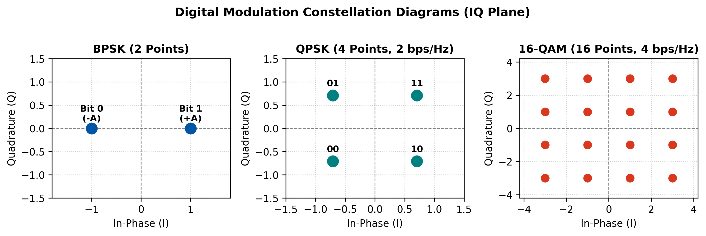
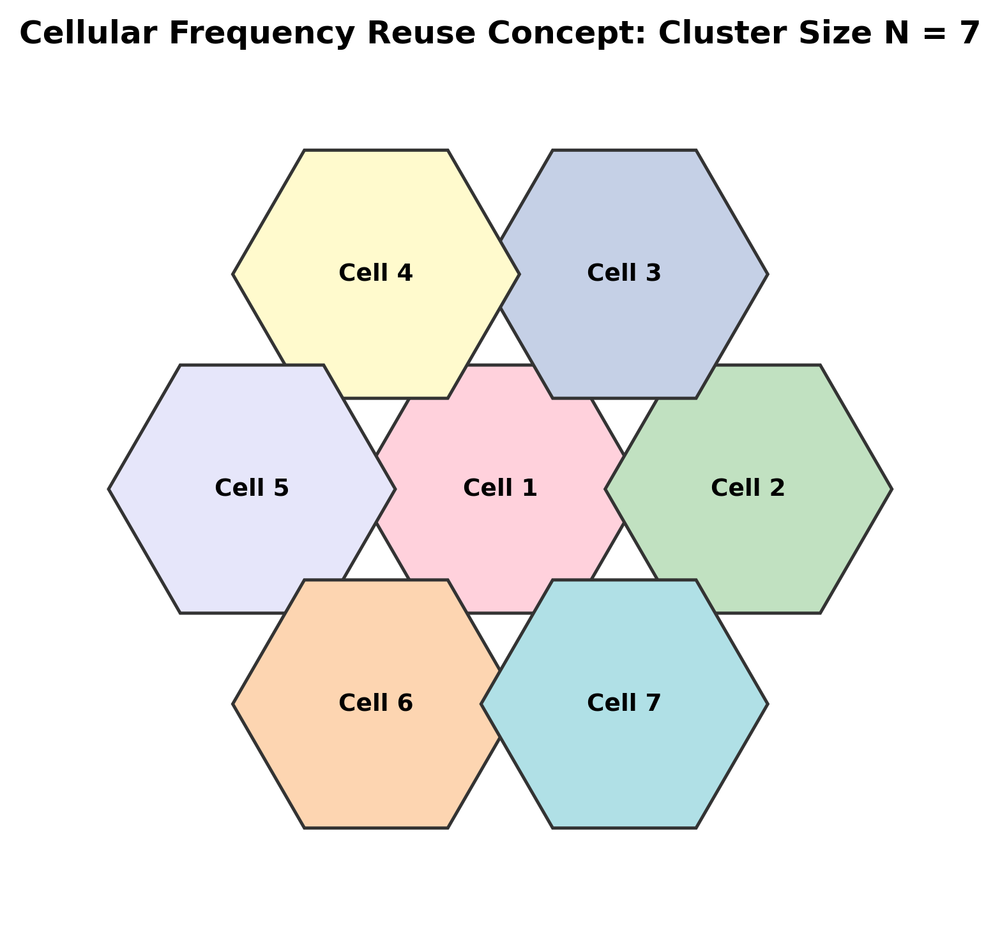
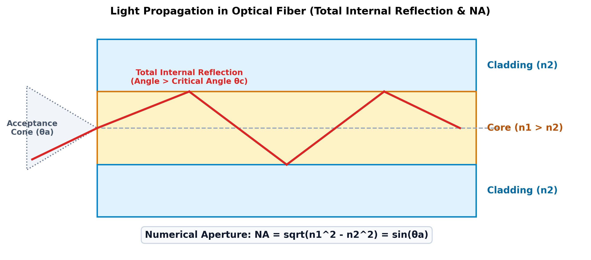
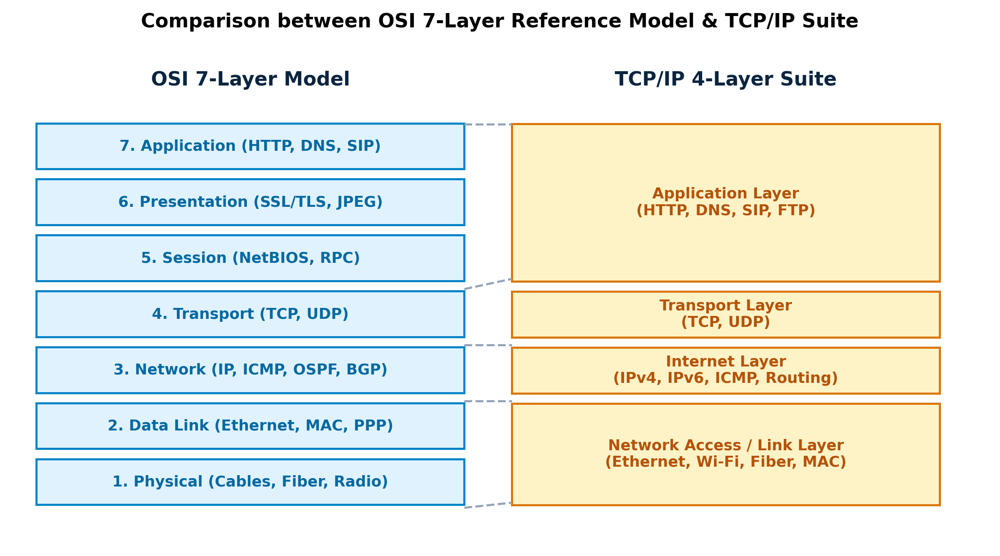
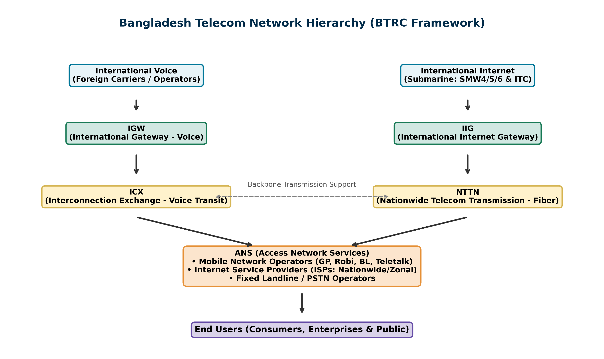
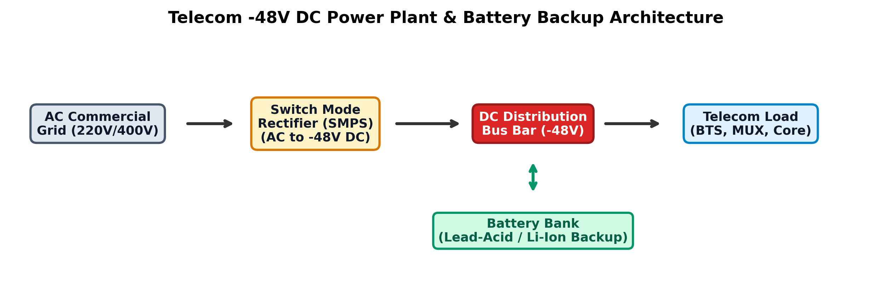

একুশ শতকের এই তথ্যপ্রযুক্তি ও চতুর্থ শিল্পবিপ্লবের (4IR) যুগে টেলিযোগাযোগ কেবল একটি প্রকৌশল শাখা নয়, বরং এটি একটি আধুনিক জাতির অর্থনৈতিক প্রবৃদ্ধি, জাতীয় নিরাপত্তা এবং ডিজিটাল সার্বভৌমত্বের মূল চালিকাশক্তি। বাংলাদেশ আজ ফাইভ-জি (5G), দেশব্যাপী অপটিক্যাল ফাইবার ব্যাকবোন (NTTN), আন্তর্জাতিক সাবমেরিন ক্যাবল কনসোর্টিয়াম (SEA-ME-WE-4, 5, 6) এবং নিজস্ব ভূস্থির উপগ্রহ 'বঙ্গবন্ধু স্যাটেলাইট-১' এর সফল পরিচালনায় এক অভাবনীয় ডিজিটাল উৎকর্ষের দ্বারপ্রান্তে।
এই প্রযুক্তিগত অগ্রযাত্রাকে নিরবচ্ছিন্ন রাখতে দেশের টেলিযোগাযোগ ও আইসিটি খাতে প্রতি বছর শত শত দক্ষ ও মেধাবী প্রকৌশলীর প্রয়োজন হচ্ছে। তবে এই খাতগুলোতে নিয়োগ পরীক্ষা অত্যন্ত প্রতিদ্বন্দ্বিতাপূর্ণ এবং এর প্রশ্ন প্যাটার্ন প্রথাগত অন্যান্য চাকরির চেয়ে অনেকটাই স্বতন্ত্র ও গভীর অ্যানালিটিক্যাল।
# টেলিকম জব প্রিপারেশনে এই বইটির প্রয়োজনীয়তা কেন অপরিহার্য?
# কাদের জন্য এই বইটি রচিত? (Target Audience)
লেখকের পরিচিতি ও শুভেচ্ছা বার্তা
টেলিযোগাযোগ নিয়ন্ত্রণ, লাইসেন্সিং ফ্রেমওয়ার্ক ও রেডিও স্পেকট্রাম ব্যবস্থাপনার বাস্তব অভিজ্ঞতা এবং বুয়েট ও এমআইএসটি পরিচালিত প্রকৌশলী নিয়োগ পরীক্ষার আধুনিক প্রশ্ন প্যাটার্নের আলোকে এই পূর্ণাঙ্গ গাইড বইটি প্রণয়ন করা হয়েছে। দেশের প্রতিটি মেধাবী প্রকৌশলী যেন আত্মবিশ্বাসের সাথে বিটিআরসি, বিটিসিএল, টেলিটকসহ শীর্ষ সংস্থায় সফল ক্যারিয়ার গড়তে পারে—এটিই এই বইটির মূল সার্থকতা। নিয়মিত অনুশীলন ও অধ্যবসায়ের মাধ্যমেই আপনার সাফল্য নিশ্চিত হোক।
— মোহাম্মদ আব্দুল মান্নান
বিএসসি ইন ইইই (EEE)
উপ সহকারী পরিচালক, বাংলাদেশ টেলিযোগাযোগ নিয়ন্ত্রণ কমিশন (বিটিআরসি)
টেলিযোগাযোগ ও তথ্যপ্রযুক্তি খাতে অভিজ্ঞ প্রকৌশলী, প্রযুক্তি গবেষক এবং বাংলাদেশ টেলিযোগাযোগ নিয়ন্ত্রণ কমিশনের (বিটিআরসি) কর্মকর্তা মোহাম্মদ আব্দুল মান্নান-এর সংক্ষিপ্ত জীবনবৃত্তান্ত ও পেশাগত পরিচিতি:
| বিবরণ / ক্ষেত্র | তথ্য ও বিবরণ |
|---|---|
| পূর্ণ নাম ও উপাধি | প্রকৌশলী মোহাম্মদ আব্দুল মান্নান (Engr. Mohammad Abdul Mannan) |
| পিতার নাম | মোহাম্মদ আবুল কাশেম |
| মাতার নাম | জাহানারা বেগম |
| বর্তমান পদবি ও সংস্থা | উপ সহকারী পরিচালক (কারিগরি), স্পেকট্রাম বিভাগ বাংলাদেশ টেলিযোগাযোগ নিয়ন্ত্রণ কমিশন (বিটিআরসি) [কার্যকাল: ২৩ ডিসেম্বর ২০১৮ – বর্তমান (৭+ বছর)] |
| অফিসিয়াল কর্মক্ষেত্র ও দায়িত্ব | বিটিআরসির স্পেকট্রাম বিভাগে জাতীয় রেডিও ফ্রিকোয়েন্সি পর্যবেক্ষণ, মোবাইল নেটওয়ার্ক কোয়ালিটি অব সার্ভিস (QoS / QoE), ড্রাইভ টেস্ট, কল ড্রপ রেট (CDR), স্পেকট্রাম অডিট এবং ৫জি/৪জি সেলুলার কমপ্লায়েন্স নিশ্চিতকরণ। |
| শিক্ষাগত যোগ্যতা (স্নাতক ও ডিপ্লোমা) | • বিএসসি ইন ইলেকট্রিক্যাল অ্যান্ড ইলেকট্রনিক্স ইঞ্জিনিয়ারিং (B.Sc. in EEE), উত্তরা ইউনিভার্সিটি (CGPA: ৩.৫৫ / ৪.০০, ২০২২) • ডিপ্লোমা ইন টেলিকমিউনিকেশন টেকনোলজি (৪ বছর মেয়াদি), এসএসআরআইটিএম, বিটিইবি (CGPA: ৩.৫৫ / ৪.০০, ২০১৫) • এসএসসি (বিজ্ঞান বিভাগ), কামারপাড়া হাই স্কুল অ্যান্ড কলেজ, ঢাকা শিক্ষা বোর্ড (GPA: ৫.০০ গোল্ডেন এ+, ২০১১) • অষ্টম শ্রেণি সরকারি জুনিয়র মেধা বৃত্তি, ঢাকা শিক্ষা বোর্ড (২০০৮) |
| উচ্চতর প্রশিক্ষণ ও প্রফেশনাল সার্টিফিকেশন | • AI-Assisted Data Analysis with Python & Cursor — আইআইটি (IIT), ঢাকা বিশ্ববিদ্যালয় • AI Fundamentals — গুগল (Google / Coursera Verified ID: VFJZ6QRWPVI2) • Advanced Networking with Linux (CCNA Concept) — কোডটেক আইটি (ডুয়েট, গাজীপুর) • Professional Web Design & Development (Level 3) — ইউওয়াই ল্যাব (UY LAB) • Professional SEO & Digital Marketing (Level 3) — ইউওয়াই ল্যাব (UY LAB) |
| বিশেষায়িত ইঞ্জিনিয়ারিং প্রকল্পসমূহ | ১. Cellular QoS & Spectrum Telemetry Assessment Framework (দেশব্যাপী ড্রাইভ টেস্ট মূল্যায়ন) ২. AI-Assisted Data Analysis & Telemetry Pipeline (IIT DU Capstone Project) ৩. Microwave Link Budget & Fresnel Clearance Calculation Engine ৪. Multi-Vendor Router Config Auto-Backup Tool (Python Netmiko & Linux) ৫. Telecom Asset & Frequency Licensing Workflow Automation System |
| শিক্ষকতা ও মেন্টরিং অভিজ্ঞতা | • প্রাক্তন প্রশিক্ষক (ইলেকট্রিক্যাল ও ফিজিক্স), শহীদ এস.এ. মেমোরিয়াল পলিটেকনিক (২০১৮) • প্রতিষ্ঠাতা ও মেন্টর, উদয়ন একাডেমিক কেয়ার ও সায়েন্স একাডেমিক জোন (৮+ বছরের শিক্ষকতা অভিজ্ঞতা) |
| অফিস ও যোগাযোগের ঠিকানা | অফিস: বিটিআরসি ভবন, প্লট: ই-৫/এ, আগারগাঁও প্রশাসনিক এলাকা, শেরেবাংলা নগর, ঢাকা-১২০৭ বাসা: বাড়ি নং ৫৯, গ্রাম: কামারপাড়া, ডাকঘর: নিশাত নগর (১৭১১), থানা: তুরাগ, ঢাকা-১২৩০ |
| ই-মেইল ও মোবাইল নম্বর | অফিস ই-মেইল: mannan@btrc.gov.bd • ব্যক্তিগত ই-মেইল: abmannan.eee@gmail.com মোবাইল: ০১৯২৮-৫৭১৭৬১, ০১৫৫০-০৮০৮১৩ • অফিস ফোন: +৮৮০ ২ ৫৫৬৬৭৭৬৬ (Ext: 362) |
| অনলাইন পোর্টফোলিও ও প্রোফাইল | পোর্টফোলিও: https://abmannan1761.github.io/my-portfolio/ গিটহাব: github.com/AbMannan1761 • লিঙ্কডইন: linkedin.com/in/mohammad-abdul-mannan-38876114a |
বিটিসিএল, বিটিআরসি ও টেলিটকের বেশিরভাগ সহকারী প্রকৌশলী ও সহকারী ব্যবস্থাপক পর্যায়ের পরীক্ষাগুলো সাধারণত বুয়েট (BUET) অথবা এমআইএসটি (MIST) কর্তৃক পরিচালিত হয়। পরীক্ষার সাধারণ কাঠামো নিচে তুলে ধরা হলো:
| অংশ | বিষয়বস্তু | নম্বর বণ্টন | গুরুত্বপূর্ণ টপিকস |
|---|---|---|---|
| টেকনিক্যাল (কোর) | কমিউনিকেশন, অপটিক্যাল ফাইবার, মোবাইল নেটওয়ার্ক, ডাটা কমিউনিকেশন | ৬০% – ৭০% | PCM, Shannon capacity, Link budget, Subnetting, GSM architecture, 5G |
| ইলেকট্রিক্যাল বেসিক | সার্কিট থিওরেম, এসি ফান্ডামেন্টালস, ইলেকট্রনিক্স ও ডিসি পাওয়ার | ১৫% – ২০% | KVL/KCL, Thevenin, Op-Amp, -48V DC, Battery bank calculations |
| নন-টেকনিক্যাল | বাংলা, ইংরেজি রচনা/অনুবাদ, সাধারণ জ্ঞান ও আইসিটি পলিসি | ১৫% – ২০% | Cyber security, BTRC Licensing, Smart Bangladesh, Submarine cable |
সফলতার গোপন ট্রিকস
টেলিকমিউনিকেশন ব্যবস্থার মূল কাজ হলো এক স্থান থেকে অন্য স্থানে যেকোনো তথ্য (ভয়েস, টেক্সট, অডিও, ভিডিও বা ডাটা) নির্ভরযোগ্যভাবে এবং অবিকৃত অবস্থায় স্থানান্তর করা। যেকোনো কমিউনিকেশন ইঞ্জিনিয়ারিং লিখিত ও মৌখিক পরীক্ষার ভিত্তি রচিত হয় এই অধ্যায়ের মৌলিক নীতিগুলোর ওপর।
# ১.১ কমিউনিকেশন সিস্টেমের বেসিক মডেল ও নয়েজ অ্যানালাইসিস
একটি আদর্শ ইলেকট্রনিক যোগাযোগ ব্যবস্থায় ৫টি মূল উপাদান থাকে: তথ্য উৎস (Information Source), ইনপুট ট্রান্সডিউসার (Input Transducer), ট্রান্সমিটার (Transmitter), ট্রান্সমিশন চ্যানেল বা মাধ্যম (Communication Channel) এবং রিসিভার (Receiver)।
যোগাযোগ মাধ্যমে সিগন্যাল অতিক্রম করার সময় তিনটি প্রধান ক্ষতিকারক প্রভাবের মুখোমুখি হয়:
১. অ্যাটেনুয়েশন (Attenuation): দূরত্বের সাথে সাথে সংকেতের শক্তি বা অ্যাম্প্লিটিউড হ্রাস পাওয়া।
২. ডিসটরশন (Distortion): চ্যানেলের অসম ফ্রিকোয়েন্সি রেসপন্সের কারণে সংকেতের ওয়েভফর্ম বিকৃত হওয়া।
৩. নয়েজ (Noise): যেকোনো অনাকাঙ্ক্ষিত তড়িৎ সংকেত যা মূল তথ্যের সাথে মিশে সিগন্যালকে দূষিত করে।
থার্মাল নয়েজ পাওয়ার ও নয়েজ ফিগার (Thermal Noise & Noise Figure)
N = k * T * B [Watts]
N (dBm) = -174 dBm/Hz + 10*log10(B)
Noise Figure (NF) = 10 * log10(SNR_in / SNR_out)
Equivalent Noise Temperature: T_e = T_0 * (F - 1)
🔍 প্যারামিটার বিশ্লেষণ:
• k = বোল্টজম্যান ধ্রুবক (1.38 * 10^-23 Joules/Kelvin)
• T = পরম তাপমাত্রা (Kelvin, সাধারণত কক্ষ তাপমাত্রা T_0 = 290 K)
• B = সিস্টেমের ব্যান্ডউইথ (Hertz)
• F = নয়েজ ফ্যাক্টর (Linear Ratio: F = SNR_in / SNR_out)
💡 বাস্তব প্রয়োগ ও ধারণা:
বাস্তব তাৎপর্য: পরিবাহীর ভেতর মুক্ত ইলেকট্রনগুলোর এলোমেলো তাপীয় গতির (Thermal Agitation) কারণে এই জনসন-নাইকুইস্ট নয়েজ উৎপন্ন হয়। কক্ষ তাপমাত্রায় (290 K) প্রতি হার্টজ ব্যান্ডউইথে থার্মাল নয়েজ ফ্লোর হলো ঠিক -174 dBm/Hz। এটি মহাবিশ্বের যেকোনো ইলেকট্রনিক রিসিভারের চরম সংবেদনশীলতার সীমা!
# ১.২ তথ্য তত্ত্ব ও সোর্স কোডিং (Entropy & Huffman Coding)
ক্লদ শ্যাননের ইনফরমেশন থিওরি অনুযায়ী, কোনো তথ্যের অনিশ্চয়তা যত বেশি, তার তথ্য ধারণক্ষমতা (Information Content) তত বেশি। গড় তথ্য ধারণক্ষমতাকে 'এনট্রপি' (Entropy: H) বলা হয়।
তথ্যের পরিমাণ ও সোর্স এনট্রপি সমীকরণ
I(x_i) = log2(1 / P(x_i)) = -log2(P(x_i)) [Bits]
H(X) = - sum [ P(x_i) * log2(P(x_i)) ] [Bits/symbol]
🔍 প্যারামিটার বিশ্লেষণ:
• P(x_i) = কোনো নির্দিষ্ট চিহ্নের ঘটার সম্ভাব্যতা (Probability)
• H(X) = সোর্সের গড় এনট্রপি (Average Information per Symbol)
💡 বাস্তব প্রয়োগ ও ধারণা:
সহজবোধ্য ব্যাখ্যা: যে ঘটনা ঘটার সম্ভাবনা ১০০% (P=1), তার তথ্য মান শূন্য [log2(1)=0]। কিন্তু যে ঘটনা ঘটার সম্ভাবনা খুবই কম, তার তথ্য মান অনেক বেশি। যেমন: 'ঢাকায় কাল সূর্য উঠবে' এতে কোনো নতুন তথ্য নেই, কিন্তু 'কাল ঢাকায় তুষারপাত হবে' এর তথ্য মান বিপুল!
গাণিতিক সমস্যা: হাফম্যান কোডিং ও কোড দক্ষতা নির্ণয় (BUET ও BPSC পরীক্ষা)
একটি ডিজিটাল তথ্য উৎস থেকে ৫টি প্রতীক A, B, C, D, E যথাক্রমে 0.4, 0.2, 0.2, 0.1, 0.1 সম্ভাব্যতা নিয়ে নির্গত হয়।
(ক) সোর্সের এনট্রপি H(X) কত?
(খ) হাফম্যান কোডিং অ্যালগরিদম প্রয়োগ করে প্রতিটি প্রতীকের কোডওয়ার্ড ও গড় কোড দৈর্ঘ্য (L) নির্ণয় করুন।
(গ) কোডিং দক্ষতা (Efficiency) ও রিডানড্যান্সি (Redundancy) হিসাব করুন।
হাফম্যান কোডিং অ্যালগরিদম, এনট্রপি ও দক্ষতা পরিমাপ
২. গড় দৈর্ঘ্য L = sum [ P_i * l_i ]
৩. দক্ষতা eta = H(X) / L * 100%
৪. রিডানড্যান্সি R = 1 - eta
• P(A)*log2(P(A)) = 0.4 * log2(0.4) = 0.4 * (-1.3219) = -0.5288
• P(B)*log2(P(B)) = 0.2 * log2(0.2) = 0.2 * (-2.3219) = -0.4644
• P(C)*log2(P(C)) = 0.2 * log2(0.2) = -0.4644
• P(D)*log2(P(D)) = 0.1 * log2(0.1) = 0.1 * (-3.3219) = -0.3322
• P(E)*log2(P(E)) = 0.1 * log2(0.1) = -0.3322
=> H(X) = - (-0.5288 - 0.4644 - 0.4644 - 0.3322 - 0.3322) = 2.122 Bits/symbol।
ধাপ ২: হাফম্যান কোডিং ট্রি গঠন:
সর্বনিম্ন দুটি সম্ভাব্যতা (D: 0.1 ও E: 0.1) যোগ করে পাই 0.2। নতুন তালিকা: A(0.4), B(0.2), C(0.2), [D+E](0.2)।
পরবর্তী দুটি সর্বনিম্ন (C: 0.2 ও [D+E]: 0.2) যোগ করে পাই 0.4। নতুন তালিকা: A(0.4), [C+D+E](0.4), B(0.2)।
পরবর্তী দুটি (B: 0.2 ও [C+D+E]: 0.4) যোগ করে পাই 0.6। অবশিষ্ট A(0.4) ও 0.6 যোগ করে পাই 1.0।
ব্রাঞ্চে ০ ও ১ বসিয়ে কোডওয়ার্ড নির্ধারণ:
• A (0.4) -> কোড: 0 (দৈর্ঘ্য l_A = 1 bit)
• B (0.2) -> কোড: 10 (দৈর্ঘ্য l_B = 2 bits)
• C (0.2) -> কোড: 110 (দৈর্ঘ্য l_C = 3 bits)
• D (0.1) -> কোড: 1110 (দৈর্ঘ্য l_D = 4 bits)
• E (0.1) -> কোড: 1111 (দৈর্ঘ্য l_E = 4 bits)
ধাপ ৩: গড় কোড দৈর্ঘ্য L হিসাব:
L = (0.4 * 1) + (0.2 * 2) + (0.2 * 3) + (0.1 * 4) + (0.1 * 4)
L = 0.4 + 0.4 + 0.6 + 0.4 + 0.4 = 2.20 Bits/symbol।
ধাপ ৪: কোডিং দক্ষতা ও রিডানড্যান্সি:
দক্ষতা eta = H(X) / L = 2.122 / 2.20 = 96.45%।
রিডানড্যান্সি R = 100% - 96.45% = 3.55%।
# ১.৩ চ্যানেল কোডিং ও এরর কন্ট্রোল (Hamming & CRC Codes)
নয়েজপূর্ণ চ্যানেলে বিট উল্টে যাওয়া (0变成1 বা 1变成0) শনাক্ত ও সংশোধন করতে চ্যানেল কোডিং অপরিহার্য।
হ্যামিং (৭,৪) কোডের জেনারেটর ও প্যারিটি চেক ম্যাট্রিক্স
Code Word C = M * G [দৈর্ঘ্য ৭ বিট]
Syndrome S = R * H^T [দৈর্ঘ্য ৩ বিট]
🔍 প্যারামিটার বিশ্লেষণ:
• M = ৪-বিট মেসেজ ভেক্টর [m1 m2 m3 m4]
• G = [I_k | P] হলো ৪x৭ জেনারেটর ম্যাট্রিক্স
• H = [P^T | I_(n-k)] হলো ৩x৭ প্যারিটি চেক ম্যাট্রিক্স
• R = রিসিভড ৭-বিট কোডওয়ার্ড
💡 বাস্তব প্রয়োগ ও ধারণা:
যদি সিনড্রোম ভেক্টর S = [0 0 0] হয়, তবে সংকেতে কোনো ভুল নেই! যদি S অশূন্য হয়, তবে S এর মান সরাসরি নির্দেশ করে রিসিভড ভেক্টরের কততম বিটে ভুল হয়েছে (Error Location), এবং সেই বিটটিকে তাৎক্ষণিক টগল করে (0 কে 1, 1 কে 0) সঠিক ডাটা উদ্ধার করা যায়!
# ১.৪ অ্যানালগ মডুলেশন থিওরি (AM, DSB, SSB, VSB ও FM)
লো-ফ্রিকোয়েন্সি বেসব্যান্ড সিগন্যালকে দীর্ঘ দূরত্বে অ্যান্টেনার মাধ্যমে দক্ষতার সাথে প্রেরণের জন্য হাই-ফ্রিকোয়েন্সি সাইনোসয়ডাল ক্যারিয়ার তরঙ্গের সাথে যুক্ত করার প্রক্রিয়াকে মডুলেশন বলে।
অ্যাম্প্লিটিউড মডুলেশন (AM) সমীকরণ ও পাওয়ার বণ্টন
s_AM(t) = A_c * [1 + m_a * cos(2*pi*f_m*t)] * cos(2*pi*f_c*t)
Total Power: P_t = P_c * (1 + m_a^2 / 2)
ব্যান্ডউইথ: BW_AM = 2 * f_m
🔍 প্যারামিটার বিশ্লেষণ:
• A_c = ক্যারিয়ারের শীর্ষ মান, A_m = মেসেজের শীর্ষ মান
• m_a = A_m / A_c হলো মডুলেশন ইনডেক্স (আদর্শ মান: 0 < m_a <= 1)
• P_c = ক্যারিয়ার পাওয়ার (A_c^2 / 2R)
• সাইডব্যান্ড পাওয়ার: P_SB = P_c * (m_a^2 / 2)
💡 বাস্তব প্রয়োগ ও ধারণা:
বাস্তব প্রয়োগ: শতভাগ মডুলেশনে (m_a = 1) মোট পাওয়ারের মাত্র ৩৩.৩% তথ্যবাহী সাইডব্যান্ডে থাকে এবং বাকি ৬৬.৭% ক্যারিয়ারে অপচয় হয়। এই অপচয় রোধে বিটিসিএল ও আন্তর্জাতিক ব্রডকাস্টিংয়ে ডাবল সাইডব্যান্ড সাপ্রেসড ক্যারিয়ার (DSB-SC) এবং সিঙ্গেল সাইডব্যান্ড সাপ্রেসড ক্যারিয়ার (SSB-SC) ব্যবহৃত হয়, যেখানে ব্যান্ডউইথ অর্ধেক (BW = f_m) হয়ে যায়।
ফ্রিকোয়েন্সি মডুলেশন (FM) ও কারসন'স রুল (Carson's Rule)
BW_FM = 2 * (Delta_f + f_m) = 2 * f_m * (beta + 1)
🔍 প্যারামিটার বিশ্লেষণ:
• Delta_f = ফ্রিকোয়েন্সি ডেভিয়েশন (ক্যারিয়ারের সর্বোচ্চ কম্পাঙ্ক সরণ)
• f_m = মেসেজ সিগন্যালের সর্বোচ্চ কম্পাঙ্ক
• beta = Delta_f / f_m হলো এফএম মডুলেশন সূচক (Modulation Index)
💡 বাস্তব প্রয়োগ ও ধারণা:
বাস্তব রেডিও সম্প্রচার: বাণিজ্যিক এফএম রেডিওতে সর্বোচ্চ অডিও কম্পাঙ্ক f_m = 15 kHz এবং সর্বোচ্চ ডেভিয়েশন Delta_f = 75 kHz নির্ধারিত থাকে। ফলে beta = 75 / 15 = 5। কারসন'স রুল অনুযায়ী প্রয়োজনীয় ব্যান্ডউইথ: BW = 2 * (75 + 15) = 180 kHz। এর সাথে দুই পাশে গার্ড ব্যান্ড যোগ করে প্রতি চ্যানেলে মোট 200 kHz স্পেকট্রাম বরাদ্দ দেওয়া হয়।
# ১.৫ স্যাম্পলিং থিওরেম, পিসিএম (PCM) ও ডিজিটাল ট্রান্সমিশন
অ্যানালগ তথ্যকে ডিজিটাল বিট স্ট্রিমে রূপান্তরের গ্লোবাল স্ট্যান্ডার্ড হলো পালস কোড মডুলেশন (Pulse Code Modulation - PCM)।
নাইকুইস্ট স্যাম্পলিং শর্ত ও পিসিএম বিট রেট
f_s >= 2 * f_m
R_b = n * f_s = n * 2 * f_m [bps]
SQNR (dB) = 6.02 * n + 1.76 dB
🔍 প্যারামিটার বিশ্লেষণ:
• f_s = স্যাম্পলিং ফ্রিকোয়েন্সি (Hz)
• n = প্রতিটি স্যাম্পল কোয়ান্টাইজ করতে ব্যবহৃত বাইনারি বিটের সংখ্যা
• L = 2^n হলো মোট ডিসক্রিট কোয়ান্টাইজেশন লেভেল সংখ্যা
• SQNR = সিগন্যাল-টু-কোয়ান্টাইজেশন নয়েজ রেশিও
💡 বাস্তব প্রয়োগ ও ধারণা:
৬.০২ সূত্রের রহস্য: কোয়ান্টাইজারে প্রতিটি অতিরিক্ত ১ বিট বৃদ্ধি করলে লেভেল সংখ্যা দ্বিগুণ হয়, ফলে কোয়ান্টাইজেশন স্টেপ সাইজ (Delta = V_pp / L) অর্ধেক হয়ে যায় এবং নয়েজ পাওয়ার ৪ গুণ কমে। ডেসিবেলে 10*log10(4) ≈ 6.02 dB! অর্থাৎ প্রতিটি ১ বিট যোগ করলে সিগন্যালের বিশুদ্ধতা ৬ ডেসিবেল বাড়ে!
কমপ্যান্ডিং (Companding): A-law বনাম mu-law
• A-law (A = 87.6): ইউরোপ, বাংলাদেশ (BTCL), ভারত ও আন্তর্জাতিক ITU-T স্ট্যান্ডার্ড।
• mu-law (mu = 255): উত্তর আমেরিকা (USA, Canada) ও জাপানের স্ট্যান্ডার্ড।
# ১.৬ ডিজিটাল ক্যারিয়ার মডুলেশন ও কনস্টেলেশন ডায়াগ্রাম
আধুনিক ওয়্যারলেস ও অপটিক্যাল লিঙ্কে উচ্চ ব্যান্ডউইথ এফিশিয়েন্সির জন্য ডিজিটাল মডুলেশন ব্যবহৃত হয়:

# ১.৭ কনভোল্যুশনাল কোডিং ও ভিটারবি ডিকোডারের কার্যপদ্ধতি
ব্লক কোডের বিপরীতে কনভোল্যুশনাল কোড মেমোরি-ভিত্তিক (Memory-oriented)। এখানে বর্তমান আউটপুট বিটগুলো কেবল বর্তমান ইনপুট বিটের ওপর নির্ভর করে না, বরং পূর্ববর্তী শিফট রেজিস্টারে সংরক্ষিত ইনপুট বিটগুলোর ওপরও নির্ভরশীল থাকে। এটি স্যাটেলাইট ও ডিপ স্পেস কমিউনিকেশন এবং সেলুলার স্ট্যান্ডার্ডে (GSM/LTE/Wi-Fi) ব্যাপকভাবে ব্যবহৃত হয়।
কনভোল্যুশনাল এনকোডার প্যারামিটার ও জেনারেটর পলিনোমিয়াল
Code Rate r = k / n
Constraint Length K = m + 1
Generator Sequences: g_1 = [1, 1, 1], g_2 = [1, 0, 1]
Output Bits: v_1 = m_t ^ m_(t-1) ^ m_(t-2), v_2 = m_t ^ m_(t-2)
🔍 প্যারামিটার বিশ্লেষণ:
• k = ইনপুট বিট সংখ্যা (সাধারণত k = 1)
• n = প্রতি ইনপুটের বিপরীতে এনকোডার থেকে নির্গত আউটপুট বিট সংখ্যা (যেমন n = 2 হলে কোড রেট 1/2)
• m = শিফট রেজিস্টার মেমোরি স্টেজ সংখ্যা
• K = কনস্ট্রেইন্ট লেন্থ (কতটি বিট আউটপুটকে প্রভাবিত করে)
💡 বাস্তব প্রয়োগ ও ধারণা:
ভিটারবি অ্যালগরিদম (Viterbi Algorithm): এটি একটি ম্যাক্সিমাম লাইকলিহুড ডিকোডিং (MLD) পদ্ধতি যা ট্রেলিস ডায়াগ্রাম (Trellis Diagram) বরাবর প্রতিটি নোডে ব্রাঞ্চ মেট্রিক (Hamming distance) হিসাব করে এবং সর্বনিম্ন সামগ্রিক দূরত্বের একক পথটিকে 'সারভাইভার পাথ' (Survivor Path) হিসেবে টিকিয়ে রাখে। হার্ড ডিসিশন ডিকোডিংয়ের তুলনায় সফট ডিসিশন ডিকোডিং (যেখানে রিসিভড এনালগ ভোল্টেজকে ৩ বা ৪ বিটে কোয়ান্টাইজ করে ডিকোডারে দেওয়া হয়) প্রায় ২ থেকে ৩ ডেসিবেল বেশি কোডিং গেইন প্রদান করে!
# ১.৮ পালস শেপিং, রেইজড কোসাইন ফিল্টার ও আই ডায়াগ্রাম
ডিজিটাল সিগন্যাল যখন একটি ব্যান্ড-লিমিটেড চ্যানেলের মধ্য দিয়ে যায়, তখন এর তীক্ষ্ণ চারকোনা পালসগুলো সময়ের সাথে ছড়িয়ে পড়ে পার্শ্ববর্তী পালসের সাথে মিশে যায়। এই ঘটনাকে ইন্টার-সিম্বল ইন্টারফারেন্স (Inter-Symbol Interference: ISI) বলে। আইএসআই দূর করতে ট্রান্সমিটারে পালস শেপিং ফিল্টার ব্যবহার করা হয়।
নাইকুইস্ট জিরো-আইএসআই ক্রাইটেরিয়ন ও রেইজড কোসাইন ব্যান্ডউইথ
Nyquist Ideal Minimum Bandwidth: B_0 = R_s / 2 = 1 / (2 * T_s)
Practical Raised-Cosine Bandwidth: B = (R_s / 2) * (1 + alpha)
Roll-Off Factor: alpha = (B - B_0) / B_0 [0 <= alpha <= 1]
🔍 প্যারামিটার বিশ্লেষণ:
• R_s = সিম্বল রেট (Baud: Symbols per second)
• T_s = সিম্বল ডিউরেশন (T_s = 1 / R_s)
• alpha = রোল-অফ ফ্যাক্টর (Excess Bandwidth Factor)
💡 বাস্তব প্রয়োগ ও ধারণা:
বাস্তব প্রয়োগ: alpha = 0 হলে ফিল্টারটি আদর্শ কিন্তু বাস্তবায়ন-অসম্ভব নাইকুইস্ট সিঙ্ক (Sinc) ফিল্টার নির্দেশ করে। আধুনিক মোবাইল ও কেবল মোডেমে alpha = 0.22 থেকে 0.35 ব্যবহার করা হয়। যেমন LTE তে রুট-রেইজড কোসাইন (RRC) ফিল্টার ব্যবহারে আইএসআই শূন্যের কোঠায় নেমে আসে।
আই ডায়াগ্রামের (Eye Pattern) তাৎপর্য ও ডায়াগনস্টিকস
• চোখের উন্মুক্ততা (Eye Opening): যত বেশি বড় হবে, সিস্টেমে নয়েজ মার্জিন (Noise Margin) তত বেশি এবং এরর পড়ার সম্ভাবনা তত কম।
• চোখের অনুভূমিক প্রস্থ (Eye Width): টাইমিং জিটার (Timing Jitter) সহ্য করার ক্ষমতা নির্দেশ করে।
• চোখের উচ্চতা ও ক্রস-ওভার পয়েন্টের ঢাল (Slope): স্যাম্পলিং টাইমিং ট্র্যাকিংয়ের সংবেদনশীলতা প্রকাশ করে; ঢাল যত খাড়া, টাইমিং সামান্য এদিক সেদিক হলেই ডিস্টরশন তত বেশি হবে।
# ১.৯ ডেল্টা মডুলেশন (Delta Modulation) ও অ্যাডাপ্টিভ ডেল্টা মডুলেশন (ADM)
পালস কোড মডুলেশনে (PCM) প্রতি স্যাম্পলে ৮টি বিট প্রয়োজন হয়, যা প্রচুর ব্যান্ডউইথ নষ্ট করে। ডেল্টা মডুলেশন হলো পিসিএম-এর একটি সরলীকৃত ১-বিট কোয়ান্টাইজেশন সংস্করণ, যেখানে বর্তমান স্যাম্পলের পরম মান পাঠানোর পরিবর্তে কেবল পূর্ববর্তী স্যাম্পল থেকে সিগন্যাল বাড়ছে (+Delta: বিট 1) নাকি কমছে (-Delta: বিট 0) তা পাঠানো হয়।
ডেল্টা মডুলেশনের স্লোপ ওভারলোড ও গ্র্যানুলার নয়েজ শর্ত
Slope Overload Condition: |dx(t)/dt|_max > Delta / T_s = Delta * f_s
No Slope Overload Condition for Sine Wave: Delta >= (2 * pi * f_m * A_m) / f_s
🔍 প্যারামিটার বিশ্লেষণ:
• Delta = কোয়ান্টাইজেশন স্টেপ সাইজ (Volts)
• f_s = স্যাম্পলিং ফ্রিকোয়েন্সি (1 / T_s)
• A_m = সাইনোসয়ডাল সিগন্যালের অ্যাম্প্লিটিউড (Volts)
• f_m = সিগন্যালের সর্বোচ্চ কম্পাঙ্ক (Hz)
💡 বাস্তব প্রয়োগ ও ধারণা:
১. স্লোপ ওভারলোড ডিস্টরশন (Slope Overload Distortion): যখন এনালগ সিগন্যাল খুব দ্রুত বৃদ্ধি পায় বা হ্রাস পায়, কিন্তু স্টেপ সাইজ ছোট হওয়ার কারণে কোয়ান্টাইজার স্টেয়ারকেস সিগন্যালটি মূল সিগন্যালকে অনুসরণ করতে ব্যর্থ হয়। প্রতিকার: স্টেপ সাইজ (Delta) বাড়ানো বা স্যাম্পলিং রেট (f_s) বৃদ্ধি করা।
২. গ্র্যানুলার নয়েজ (Granular Noise): যখন সিগন্যাল সমতল বা ধীরে ধীরে পরিবর্তিত হয়, তখন স্টেপ সাইজ অতিরিক্ত বড় থাকার কারণে আউটপুট উপরে-নিচে দুলতে থাকে। প্রতিকার: স্টেপ সাইজ ছোট করা।
অ্যাডাপ্টিভ ডেল্টা মডুলেশন (ADM): এই দুই পরস্পরবিরোধী সমস্যার চমৎকার সমাধান হলো ADM। এখানে ফিক্সড স্টেপ সাইজের বদলে ডাইনামিক স্টেপ সাইজ ব্যবহৃত হয়—পরপর একই বিট (111 বা 000) আসলে স্টেপ সাইজ স্বয়ংক্রিয়ভাবে বড় হয়ে যায় এবং অল্টারনেটিং বিট (1010) আসলে স্টেপ সাইজ সংকুচিত হয়ে গ্র্যানুলার নয়েজ দূর করে।
মোবাইল নেটওয়ার্কের প্রাথমিক যুগে একটি সম্পূর্ণ শহরের জন্য মাত্র একটি উচ্চ ক্ষমতাসম্পন্ন ট্রান্সমিটার টাওয়ার ব্যবহৃত হতো, যার ফলে সীমিত স্পেকট্রামে অল্প সংখ্যক ব্যবহারকারী মাত্র একযোগে কথা বলতে পারতেন। সেলুলার ধারণার উদ্ভাবন একই ফ্রিকোয়েন্সি ভৌগোলিক দূরত্বের ব্যবধানে বারবার ব্যবহার (Frequency Reuse) করে সীমিত স্পেকট্রামে অসীম পরিমাণ ট্রাফিক ধারণক্ষমতা সৃষ্টি করেছে।
# ২.১ সেলুলার কনসেপ্ট, ক্লাস্টার সাইজ ও কো-চ্যানেল ইন্টারফারেন্স
সেলুলার নেটওয়ার্কে সমগ্র ভৌগোলিক এলাকাকে ছোট ছোট বহুভুজে (সাধারণত জ্যামিতিক ষড়ভুজ বা Hexagon) ভাগ করা হয়। প্রতিটি ছোট এলাকাকে একটি 'সেল' (Cell) বলা হয়।
ক্লাস্টার সাইজ (N) ও হাঁটার নিয়ম (Walk Algorithm)
N = i^2 + i*j + j^2
🔍 প্যারামিটার বিশ্লেষণ:
• i, j = অঋণাত্মক পূর্ণসংখ্যা (Non-negative Integers: 0, 1, 2, ...)
• N = ক্লাস্টারের মোট সেলের সংখ্যা। বৈধ ক্লাস্টার সাইজ: 1, 3, 4, 7, 9, 12, 13, 19, ...
💡 বাস্তব প্রয়োগ ও ধারণা:
ষড়ভুজ গ্রিডে কোনো সেলের একই ফ্রিকোয়েন্সি ব্যবহারকারী নিকটতম কো-চ্যানেল সেলটি খুঁজে বের করার জ্যামিতিক নিয়ম হলো: বর্তমান সেলের কেন্দ্র থেকে যেকোনো দিকে সোজা i সংখ্যক সেল অতিক্রম করুন, এরপর ৬০ ডিগ্রি ঘড়ির কাঁটার বিপরীত দিকে ঘুরে সোজা j সংখ্যক সেল গেলেই পরবর্তী কো-চ্যানেল সেল পাওয়া যাবে!

কো-চ্যানেল রিইউজ রেশিও (Q) ও সিগন্যাল-টু-ইন্টারফারেন্স অনুপাত (S/I)
Q = D / R = sqrt(3 * N)
S / I = (D / R)^n / i_0 = (sqrt(3 * N))^n / 6
🔍 প্যারামিটার বিশ্লেষণ:
• D = নিকটতম দুটি কো-চ্যানেল সেলের দূরবর্তী কেন্দ্রের দূরত্ব
• R = সেলের ব্যাসার্ধ (Cell Radius)
• N = ক্লাস্টার সাইজ
• i_0 = প্রথম টিয়ারের (First Tier) কো-চ্যানেল ইন্টারফেয়ারিং সেলের সংখ্যা (ষড়ভুজ গ্রিডে সর্বদা i_0 = 6)
• n = পাথ লস এক্সপোনেন্ট (Path Loss Exponent: আরবান এলাকায় n = 4)
💡 বাস্তব প্রয়োগ ও ধারণা:
জিএসএম মানদণ্ড: একটি কার্যকর জিএসএম সিস্টেমে গ্রহণযোগ্য ভয়েস কোয়ালিটির জন্য সর্বনিম্ন S/I হতে হয় ৯ dB (RF ডিজাইনে সাধারণত সেফটি মার্জিনসহ ১৮ dB টার্গেট করা হয়)। n = 4 ধরলে N = 7 ক্লাস্টারে S/I = (sqrt(21))^4 / 6 = 441 / 6 = 73.5 = 18.66 dB অর্জিত হয়! এ কারণেই বিশ্বজুড়ে জিএসএমে ৭-সেল ক্লাস্টার সবচেয়ে জনপ্রিয়।
# ২.২ সেলুলার নেটওয়ার্ক ক্যাপাসিটি বৃদ্ধির কৌশল
# ২.৩ ট্রাফিক ইঞ্জিনিয়ারিং ও আরল্যাং থিওরি (Erlang-B & Erlang-C)
টেলিকমিউনিকেশনে ট্রাফিক লোড পরিমাপের একক হলো 'আরল্যাং' (Erlang), যা ডেনিশ গণিতবিদ এ. কে. আরল্যাং-এর নামানুসারে রাখা হয়েছে। ১ আরল্যাং মানে হলো একটি ভয়েস বা ডাটা সার্কিট পুরো এক ঘণ্টা (৩৬০০ সেকেন্ড) একটানা ১০০% ব্যস্ত থাকা।
টেলিকম ট্রাফিক ইনটেনসিটি ও আরল্যাং সমীকরণ
A = lambda * H [Erlangs]
Erlang-B Blocking Probability: P_b = (A^C / C!) / [ sum_(k=0)^C (A^k / k!) ]
🔍 প্যারামিটার বিশ্লেষণ:
• lambda = প্রতি ঘণ্টায় আগত মোট কলের সংখ্যা (Call Arrival Rate)
• H = একটি কলের গড় স্থায়িত্বকাল (Average Holding Time in Hours)
• C = সেলের মোট ট্রাঙ্ক বা ভয়েস চ্যানেলের সংখ্যা
• A = অফারড ট্রাফিক (Offered Traffic in Erlangs)
💡 বাস্তব প্রয়োগ ও ধারণা:
আরল্যাং-বি বনাম আরল্যাং-সি:
• Erlang-B (ব্লকড কলস ক্লিয়ার্ড - BCC): সব চ্যানেল ব্যস্ত থাকলে নতুন কল ড্রপ বা রিজেক্ট হয়ে যায় (ঐতিহ্যবাহী সেলুলার ভয়েস কল)।
• Erlang-C (ব্লকড কলস ডিলেড - BCD): চ্যানেল খালি না থাকলে কল ড্রপ না হয়ে গ্রাহককে একটি নির্দিষ্ট কিউ বা লাইনে অপেক্ষমাণ রাখা হয় (যেমন: কাস্টমার কেয়ার হেল্পলাইন বা প্যাকেট ডাটা বাফার)।
# ২.৪ ওয়্যারলেস প্রোপাগেশন, ফেইডিং ও মাল্টিপাথ মেকানিজম
ওয়্যারলেস রেডিও সিগন্যাল যখন ট্রান্সমিটার থেকে রিসিভারে যায়, তখন এটি প্রতিফলন (Reflection), বিচ্ছুরণ (Diffraction) এবং বিক্ষেপণ (Scattering) এর মাধ্যমে একাধিক পথে রিসিভারে পৌঁছায়। একে মাল্টিপাথ প্রোপাগেশন বলে।
• রেলি ফেইডিং (Rayleigh Fading): যখন ট্রান্সমিটার ও রিসিভারের মাঝে কোনো সরাসরি লাইন-অব-সাইট (NLOS) পথ থাকে না, কেবল প্রতিফলিত তরঙ্গ থাকে।
• রাইসিয়ান ফেইডিং (Rician Fading): যখন প্রতিফলিত তরঙ্গের পাশাপাশি একটি শক্তিশালী সরাসরি দৃশ্যমান লাইন-অব-সাইট (LOS) পথ বিদ্যমান থাকে (K-factor > 0)।
# ২.৫ মোবাইল প্রজন্মের রূপান্তর (2G GSM থেকে 5G NR)
বিশ্বব্যাপী মোবাইল প্রযুক্তির বিবর্তন প্রতি দশকে এক অভাবনীয় গতি অর্জন করেছে:
# ২.৬ ৪জি এলটিই আর্কিটেকচার ও ৫জি নিউ রেডিও (5G NR)
LTE নেটওয়ার্ক সম্পূর্ণ অল-আইপি (All-IP) ভিত্তিক। এটি দুটি প্রধান অংশে বিভক্ত:
• SGW (Serving Gateway): ইউজার ডাটা প্যাকেট রাউট ও ফরোয়ার্ড করে।
• PGW (PDN Gateway): এক্সটার্নাল প্যাকেট ডাটা নেটওয়ার্ক (ইন্টারনেট) এর গেটওয়ে ও আইপি প্রদানকারী।
• HSS (Home Subscriber Server): ব্যবহারকারীর কেন্দ্রীয় সাবস্ক্রিপশন ডাটাবেজ।
৫জি নিউ রেডিওর ৩টি মূল ভিত্তি (5G Service Triad):
১. eMBB (Enhanced Mobile Broadband): পিক স্পিড ২০ Gbps পর্যন্ত, আল্ট্রা এইচডি ৪কে/৮কে ভিডিও স্ট্রিমিং ও ক্লাউড গেমিং।
২. URLLC (Ultra-Reliable Low-Latency Communication): এন্ড-টু-এন্ড লেটেন্সি মাত্র ১ মিলিসেকেন্ড এবং ৯৯.৯৯৯% নির্ভরযোগ্যতা; যা স্বচালিত গাড়ি, দূরবর্তী রোবোটিক সার্জারি ও স্মার্ট গ্রিড নিয়ন্ত্রণে অপরিহার্য।
৩. mMTC (Massive Machine-Type Communications): প্রতি বর্গকিলোমিটারে ১০ লক্ষ (1 Million) আইওটি ডিভাইস সংযোগ নিশ্চিত করা।
# ২.৭ জিএসএম লজিক্যাল ও ফিজিক্যাল চ্যানেল হায়ারার্কি
জিএসএম-এ একটি রেডিও ক্যারিয়ার (২০০ kHz) ৮টি টাইম স্লটে (Time Slot TS0-TS7) বিভক্ত থাকে। এই ফিজিক্যাল টাইম স্লটের ওপর বিভিন্ন লজিক্যাল চ্যানেল ম্যাপিং করা হয়। জিএসএম চ্যানেল প্রধানত দুই ভাগে বিভক্ত: ট্রাফিক চ্যানেল (TCH) ও কন্ট্রোল চ্যানেল (CCH)।
| চ্যানেল শ্রেণি | চ্যানেলের নাম ও সংক্ষিপ্ত রূপ | দিক (Direction) | কার্যক্রম ও বৈশিষ্ট্য |
|---|---|---|---|
| Traffic Channel | TCH/F (Full-rate) & TCH/H (Half-rate) | দ্বিমুখী (Uplink/Downlink) | ভয়েস ও ইউজার ডাটা বহন করে। Full-rate এ ২২.৮ kbps এবং Half-rate এ ১১.৪ kbps। |
| Broadcast (BCH) | FCCH (Frequency Correction) | ডাউনলিঙ্ক (BTS -> MS) | মোবাইলের লোকাল অসিলেটরকে বিটিএস ক্যারিয়ারের সাথে টিউন করতে ফ্রিকোয়েন্সি কারেকশন বার্স্ট পাঠায়। |
| Broadcast (BCH) | SCH (Synchronization Channel) | ডাউনলিঙ্ক (BTS -> MS) | ফ্রেম নম্বর ও বিটিএস বেস স্টেশন আইডেন্টিটি কোড (BSIC) সিঙ্ক্রোনাইজ করে। |
| Broadcast (BCH) | BCCH (Broadcast Control) | ডাউনলিঙ্ক (BTS -> MS) | নেটওয়ার্ক সংক্রান্ত সাধারণ সিস্টেম ইনফরমেশন মেসেজ (SI1-SI8), যেমন সেল আইডি, LAC, পেজিং কনফিগ পাঠায়। |
| Common Control | PCH (Paging Channel) | ডাউনলিঙ্ক (BTS -> MS) | ইনকামিং কল বা এসএমএস আসলে নির্দিষ্ট মোবাইলকে পেজ বা সতর্ক সংকেত পাঠায়। |
| Common Control | RACH (Random Access) | আপলিঙ্ক (MS -> BTS) | মোবাইল কোনো কল করতে চাইলে বা পেজের উত্তর দিতে স্লোটেড আলোহা পদ্ধতিতে চ্যানেল অ্যাক্সেস চায়। |
| Common Control | AGCH (Access Grant) | ডাউনলিঙ্ক (BTS -> MS) | RACH রিকোয়েস্টের উত্তরে মোবাইলকে নির্দিষ্ট SDCCH চ্যানেল বরাদ্দ দেয়। |
| Dedicated (DCCH) | SDCCH (Stand-alone Dedicated) | দ্বিমুখী | কল সেটআপের সময় ইউজার অথেনটিকেশন, সাইফারিং ও টিসিএইচ বরাদ্দ সম্পন্ন করে। |
| Dedicated (DCCH) | SACCH (Slow Associated) | দ্বিমুখী | চলমান কলে প্রতি ৪৮০ ms পর পর আরএফ সিগন্যাল শক্তি, কোয়ালিটি ও টাইমিং অ্যাডভান্স রিপোর্ট পাঠায়। |
| Dedicated (DCCH) | FACCH (Fast Associated) | দ্বিমুখী | হ্যান্ডওভারের জরুরি সিগন্যালিংয়ের সময় টিসিএইচ-এর স্পিচ ফ্রেম স্টিল (Steal) করে কাজ সম্পন্ন করে। |
# ২.৮ ৪জি এলটিই ফিজিক্যাল লেয়ার রিসোর্স গ্রিড ক্যালকুলেশন
৪জি এলটিই রেডিও ইন্টারফেস ওএফডিএমএ (OFDMA) ভিত্তিক। সময় ও ফ্রিকোয়েন্সির সমন্বয়ে গঠিত দ্বি-মাত্রিক গ্রিডকে রিসোর্স গ্রিড (Resource Grid) বলা হয়।
এলটিই রিসোর্স এলিমেন্ট (RE) ও রিসোর্স ব্লক (RB) সমীকরণ
1 Resource Element (RE) = 1 Subcarrier (15 kHz) * 1 OFDM Symbol (66.7 us)
1 Resource Block (RB) = 12 Subcarriers * 7 OFDM Symbols = 84 REs (Normal CP)
1 Slot = 0.5 ms (7 symbols), 1 Subframe = 1.0 ms (2 slots = 14 symbols)
1 Radio Frame = 10 ms = 10 Subframes
🔍 প্যারামিটার বিশ্লেষণ:
• সাবক্যারিয়ার ব্যবধান: Delta_f = 15 kHz (ফিক্সড)
• ওএফডিএম সিম্বল ডিউরেশন: T_u = 1 / 15 kHz ≈ 66.7 us
• নরমাল সাইক্লিক প্রিফিক্স (Normal CP): T_cp ≈ 4.7 us (মাল্টিপাথ ডিলে স্প্রেড দূরীকরণে ব্যবহৃত)
• একটি রিসোর্স ব্লকের ব্যান্ডউইথ: 12 * 15 kHz = 180 kHz
💡 বাস্তব প্রয়োগ ও ধারণা:
বিভিন্ন ব্যান্ডউইথে রিসোর্স ব্লক সংখ্যা:
• 1.4 MHz চ্যানেল: 6 RBs (1.08 MHz ব্যবহৃত, বাকি গার্ড ব্যান্ড)
• 3 MHz চ্যানেল: 15 RBs (2.7 MHz)
• 5 MHz চ্যানেল: 25 RBs (4.5 MHz)
• 10 MHz চ্যানেল: 50 RBs (9.0 MHz)
• 15 MHz চ্যানেল: 75 RBs (13.5 MHz)
• 20 MHz চ্যানেল: 100 RBs (18.0 MHz ব্যবহৃত, 2.0 MHz গার্ড ব্যান্ড)
গাণিতিক সমস্যা: ২০ মেগাহার্টজ এলটিই চ্যানেলে সর্বোচ্চ পিক থ্রুপুট হিসাব
একটি ২০ মেগাহার্টজ ৪জি এলটিই ডাউনলিঙ্ক ক্যারিয়ারে ১০০টি রিসোর্স ব্লক রয়েছে। নরমাল সাইক্লিক প্রিফিক্স এবং ৬৪-কিউএএম (64-QAM) মডুলেশন ব্যবহার করা হচ্ছে। কন্ট্রোল ওভারহেড (PDCCH, Reference Signals ইত্যাদি) ২৫%। ৪x৪ মাইমো (4x4 MIMO) সক্রিয় থাকলে সর্বোচ্চ তাত্ত্বিক পিক ডাটা রেট (Peak Throughput) কত?
এলটিই ডাউনলিঙ্ক পিক ডাটা রেট ক্যালকুলেশন
• মডুলেশন = 64-QAM (প্রতি সিম্বলে log2(64) = 6 বিট)
• ওভারহেড = 25%
• মাইমো লেয়ার = 4x4 (4 স্পেশাল স্ট্রিম)
২. নিট ব্যবহারযোগ্য ডাটা RE = মোট RE * (1 - Overhead)
৩. প্রতি সেকেন্ডে ডাটা রেট = নিট RE * বিট/সিম্বল * 1000 সাবফ্রেম/সেকেন্ড * MIMO লেয়ার
মোট RE = 100 * 12 * 14 = 16,800 REs প্রতি মিলিসেকেন্ডে।
ধাপ ২: ইউজার পে-লোড বহনের কার্যকর RE সংখ্যা (২৫% ওভারহেড বাদে):
কার্যকর ডাটা RE = 16,800 * (1 - 0.25) = 12,600 REs/ms।
ধাপ ৩: একক অ্যান্টেনা স্ট্রিমে ডাটা রেট:
64-QAM এ প্রতি RE তে 6 বিট ডাটা যায়।
ডাটা রেট (১ স্ট্রিম) = 12,600 REs/ms * 6 bits * 1000 ms/sec
= 75,600,000 bps = 75.6 Mbps।
ধাপ ৪: ৪x৪ মাইমোর (4 Spatial Streams) মোট পিক থ্রুপুট:
পিক থ্রুপুট = 75.6 Mbps * 4 = 302.4 Mbps।
# ২.৯ ৫জি এনআর নিউমারোলজি, এসসিএস ও ম্যাসিভ মাইমো বিমফর্মিং
৪জি এলটিই-তে ১৫ kHz ফিক্সড সাবক্যারিয়ার স্পেসিং ছিল। কিন্তু ৫জি নিউ রেডিওতে (5G NR) বৈচিত্র্যময় ট্রাফিক (আইওটি থেকে উচ্চগতির গিগাবিট ব্রডব্যান্ড ও মিলিসেকেন্ড লেটেন্সি) সমর্থনের জন্য 'স্কেলেবল ওএফডিএম নিউমারোলজি' (Scalable Numerology: mu) প্রবর্তন করা হয়েছে।
৫জি এনআর ফ্লেক্সিবল নিউমারোলজি ও স্লট ডিউরেশন
Subcarrier Spacing: Delta_f = 15 * 2^mu [kHz]
Slot Duration: T_slot = 1 / 2^mu [ms]
Number of Slots per Subframe (1 ms) = 2^mu
🔍 প্যারামিটার বিশ্লেষণ:
• mu = 0: Delta_f = 15 kHz, স্লট = 1.0 ms (4G LTE এর অনুরূপ, লো-ব্যান্ড < 1 GHz)
• mu = 1: Delta_f = 30 kHz, স্লট = 0.5 ms (মিড-ব্যান্ড C-band 3.5 GHz - গ্লোবাল 5G এর মূল স্পেকট্রাম)
• mu = 2: Delta_f = 60 kHz, স্লট = 0.25 ms (মিড-ব্যান্ড ও হাই-ব্যান্ড)
• mu = 3: Delta_f = 120 kHz, স্লট = 0.125 ms (মিলিমিটার ওয়েভ mmWave 28 GHz / 39 GHz)
• mu = 4: Delta_f = 240 kHz, স্লট = 0.0625 ms (mmWave সিঙ্ক্রোনাইজেশন চ্যানেল)
💡 বাস্তব প্রয়োগ ও ধারণা:
ম্যাসিভ মাইমো (Massive MIMO) ও বিমফর্মিং: ঐতিহ্যবাহী বেস স্টেশনে ২ বা ৪টি অ্যান্টেনা থাকত। ৫জি অ্যাক্টিভ অ্যান্টেনা ইউনিটে (AAU) ৩২টি বা ৬৪টি ছোট অ্যান্টেনা এলিমেন্ট (32T32R বা 64T64R) সমবেতভাবে কাজ করে। বিমফর্মিং অ্যালগরিদমের মাধ্যমে সিগন্যাল চারদিকে অপচয় না করে নির্দিষ্ট ব্যবহারকারীর মোবাইল লক্ষ্য করে সরু ও শক্তিশালী পেন্সিল বিম আকারে শক্তি পাঠানো হয়। এর ফলে ইন্টারফারেন্স বিপুল পরিমাণে হ্রাস পায় এবং সেলুলার স্পেকট্রাল এফিশিয়েন্সি ৪ থেকে ৬ গুণ বৃদ্ধি পায়।
টেলিযোগাযোগের গ্লোবাল ব্যাকবোন সম্পূর্ণভাবে অপটিক্যাল ফাইবার ট্রান্সমিশনের ওপর নির্ভরশীল। বিশাল ব্যান্ডউইথ, অত্যন্ত কম সংকেত লস (Attenuation), তড়িৎ-চৌম্বকীয় ইন্টারফারেন্স (EMI) থেকে শতভাগ মুক্তি এবং উচ্চ নিরাপত্তার কারণে লং-ডিস্ট্যান্স ব্যাকহল ও সাবমেরিন যোগাযোগে ফাইবার অপটিক্সের কোনো বিকল্প নেই।
# ৩.১ অপটিক্যাল ফাইবারের মূলনীতি ও আলোক বিজ্ঞান
অপটিক্যাল ফাইবারের মধ্য দিয়ে আলোর সংকেত 'পূর্ণ অভ্যন্তরীণ প্রতিফলন' (Total Internal Reflection - TIR) প্রক্রিয়ায় সঞ্চালিত হয়। এর জন্য দুটি প্রধান শর্ত আবশ্যক:
১. আলোকে অবশ্যই ঘনতর মাধ্যম (Core: n1) থেকে লঘুতর মাধ্যমে (Cladding: n2) প্রবেশ করতে হবে, অর্থাৎ n1 > n2।
২. আপাতন কোণ অবশ্যই মাধ্যমদ্বয়ের সংকট কোণের (Critical Angle: theta_c) চেয়ে বড় হতে হবে।
সংকট কোণ, নিউমেরিক্যাল অ্যাপারচার ও ভি-নাম্বার
sin(theta_c) = n_2 / n_1
NA = sqrt(n_1^2 - n_2^2) = sin(theta_a) = n_1 * sqrt(2 * Delta)
V = (2 * pi * a / lambda) * NA
Cutoff Wavelength: lambda_c = (2 * pi * a * NA) / 2.405
🔍 প্যারামিটার বিশ্লেষণ:
• n_1 = কোরের প্রতিসরাঙ্ক (Core Refractive Index: সাধারণত 1.48)
• n_2 = ক্ল্যাডিংয়ের প্রতিসরাঙ্ক (Cladding Refractive Index: সাধারণত 1.46)
• Delta = (n_1 - n_2) / n_1 হলো আপেক্ষিক প্রতিসরাঙ্ক পার্থক্য
• a = ফাইবার কোরের ব্যাসার্ধ (Core Radius)
• V = নরমালাইজড ফ্রিকোয়েন্সি বা ভি-নাম্বার (Normalized Frequency)
💡 বাস্তব প্রয়োগ ও ধারণা:
সিঙ্গেল-মোড ফাইবারের শর্ত: যদি V < 2.405 হয়, তবে ফাইবার কোরে কেবল একটি মাত্র মৌলিক আলোক মোড (Fundamental Mode: HE_11) প্রবেশ করতে পারে। তখন একে সিঙ্গেল মোড ফাইবার (SMF) বলে। V > 2.405 হলে একাধিক আলোক রশ্মি প্রবেশ করে এবং মাল্টিমোড ফাইবার (MMF) তৈরি হয়। স্টেপ-ইনডেক্স মাল্টিমোড ফাইবারে মোট মোড সংখ্যা M ≈ V^2 / 2।

# ৩.২ অপটিক্যাল সিগন্যাল লস ও ডিসপারশন (Attenuation & Dispersion)
• রেলে স্ক্যাটারিং (Rayleigh Scattering): ফাইবার তৈরির সময় কাঁচের ঘনত্বের আণুবীক্ষণিক পার্থক্যের কারণে আলো চারদিকে ছড়িয়ে যায়। লস তরঙ্গদৈর্ঘ্যের চতুর্থ ঘাতের ব্যস্তানুপাতিক (Loss ∝ 1/lambda^4)। ফলে ছোট তরঙ্গদৈর্ঘ্যে (যেমন ৮৫০ nm) লস বেশি এবং বড় তরঙ্গদৈর্ঘ্যে (১৫৫০ nm) লস সর্বনিম্ন (প্রায় 0.2 dB/km)।
• শোষণ লস (Absorption Loss): সিলিকা কাঁচের অভ্যন্তরীণ অতিবেগুনী/ইনফ্রারেড শোষণ এবং কাঁচে আটকে থাকা পানির অণুর (OH- আয়ন) শোষণ। ১৩৮৩ nm এ পানির কারণে বড় লস পিক থাকে, আধুনিক Low Water Peak ফাইবার (ITU-T G.652.D) এ এই পিক দূর করা হয়েছে।
• বেন্ডিং লস (Bending Loss): ম্যাক্রো-বেন্ডিং (বড় বাঁক) এবং মাইক্রো-বেন্ডিং (ক্যাবল জ্যাকেটের অসম চাপের কারণে সূক্ষ্ম বাঁক)।
• মোডাল ডিসপারশন (Modal Dispersion): কেবল মাল্টিমোড ফাইবারে ঘটে, যেখানে ভিন্ন ভিন্ন কোণে চলা রশ্মিগুলো ভিন্ন সময়ে পৌঁছায়।
• ক্রোমাটিক ডিসপারশন (Chromatic Dispersion: CD): সিঙ্গেল মোড ফাইবারে প্রধান সীমাবদ্ধতা। এতে মেটেরিয়াল ডিসপারশন ও ওয়েভগাইড ডিসপারশন অন্তর্ভুক্ত থাকে। একক: ps/(nm·km)।
• পোলারাইজেশন মোড ডিসপারশন (PMD): কোরের সামান্য ডিম্বাকার অপ্রতিসমতার কারণে দুটি অর্থোগোনাল পোলারাইজেশন মোডের গতিতে পার্থক্য।
ক্রোমাটিক ডিসপারশন ও পালস ব্রডনিং সমীকরণ
Delta_t = D * L * Delta_lambda [Picoseconds - ps]
Maximum Bit Rate: B <= 1 / (4 * Delta_t)
🔍 প্যারামিটার বিশ্লেষণ:
• D = ক্রোমাটিক ডিসপারশন সহগ [ps/(nm·km)]
• L = ফাইবারের মোট দৈর্ঘ্য (km)
• Delta_lambda = অপটিক্যাল সোর্সের বর্ণালী প্রস্থ (Spectral Width of Source in nm)
💡 বাস্তব প্রয়োগ ও ধারণা:
বাস্তব তাৎপর্য: একটি সাধারণ ফ্যাব্রি-পেরট লেজারের বর্ণালী প্রস্থ Delta_lambda ≈ 2 nm, কিন্তু সিঙ্গেল-মোড ডিএফবি (DFB) লেজারের বর্ণালী প্রস্থ মাত্র 0.01 nm! তাই লং-হল অপটিক্যাল ট্রান্সমিশনে DFB লেজার ব্যবহার করলে পালস ব্রডনিং শতগুণ কমে যায় এবং টেরাবিট গতি অর্জন সম্ভব হয়।
# ৩.৩ আধুনিক অপটিক্যাল নেটওয়ার্কিং (WDM, DWDM, CWDM, EDFA, PON)
একটি মাত্র অপটিক্যাল ফাইবার কেবলে একই সাথে টেরাবিট গতির ডাটা পরিবহনের জন্য ওয়েভলেংথ ডিভিশন মাল্টিপ্লেক্সিং (WDM) প্রযুক্তি ব্যবহৃত হয়।
# ৩.৪ সিনক্রোনাস ডিজিটাল হায়ারার্কি (SDH) বনাম PDH
ডিজিটাল টেলিযোগাযোগের মূল ট্রান্সমিশন কাঠামো হলো সিনক্রোনাস ডিজিটাল হায়ারার্কি (SDH):
• STM-1 (Synchronous Transport Module 1) = 155.52 Mbps
• STM-4 = 622.08 Mbps (4 * 155.52)
• STM-16 = 2.488 Gbps (≈ 2.5 Gbps)
• STM-64 = 9.953 Gbps (≈ 10 Gbps)
• STM-256 = 39.813 Gbps (≈ 40 Gbps)
# ৩.৫ অপটিক্যাল রাইজ-টাইম বাজেট ও সিস্টেম ব্যান্ডউইথ ভেরিফিকেশন
অপটিক্যাল ফাইবার লিঙ্কে কেবল পাওয়ার বাজেট (Power Budget) ঠিক থাকলেই লিংক নির্ভরযোগ্য হয় না, বরং সিগন্যালের রাইজ টাইম পর্যাপ্ত দ্রুত না হলে পালস ছড়িয়ে গিয়ে ইন্টার-সিম্বল ইন্টারফারেন্সে ডাটা নষ্ট হয়ে যায়। সিস্টেমের সামগ্রিক রাইজ-টাইম নির্ণয় করে ব্যান্ডউইথ নিশ্চিত করার প্রক্রিয়াকে রাইজ-টাইম বাজেট (Rise-Time Budget) বলে।
অপটিক্যাল সিস্টেম সামগ্রিক রাইজ-টাইম সমীকরণ
t_system = 1.1 * sqrt( t_tx^2 + t_mat^2 + t_mod^2 + t_rx^2 ) [ns বা ps]
NRZ Coding Constraint: t_system <= 0.70 / B_bit
RZ Coding Constraint: t_system <= 0.35 / B_bit
🔍 প্যারামিটার বিশ্লেষণ:
• t_tx = অপটিক্যাল ট্রান্সমিটার (লেজার/এলইডি) এর রাইজ-টাইম (10% থেকে 90% অ্যাম্প্লিটিউড হতে ব্যয়িত সময়)
• t_rx = অপটিক্যাল রিসিভার (ফটোডায়োড) এর রাইজ-টাইম: t_rx ≈ 0.35 / B_rx
• t_mat = ফাইবার মেটেরিয়াল বা ক্রোমাটিক ডিসপারশনের কারণে রাইজ-টাইম বৃদ্ধি: t_mat = |D| * L * Delta_lambda
• t_mod = মোডাল ডিসপারশন জনিত রাইজ-টাইম (সিঙ্গেল মোড ফাইবারে t_mod = 0)
• B_bit = চ্যানেলের কাঙ্ক্ষিত ডাটা বিট রেট (bps)
💡 বাস্তব প্রয়োগ ও ধারণা:
ইঞ্জিনিয়ারিং ক্রাইটেরিয়ন: একটি ১০ Gbps NRZ সিস্টেমের জন্য সর্বোচ্চ অনুমোদিত সিস্টেম রাইজ-টাইম হলো: t_sys <= 0.70 / (10 * 10^9) = 0.07 ns = 70 ps। যদি হিসেবকৃত t_system এই ৭০ পিকোসেকেন্ডের চেয়ে কম হয়, তবেই কেবল সিস্টেমটি কোনো ডিসপারশন কম্পেনসেটর ছাড়াই কার্যকর থাকবে!
# ৩.৬ নন-লিনিয়ার অপটিক্যাল ইফেক্টস (Non-linear Optical Effects in WDM/DWDM)
যখন ডব্লিউডিএম বা ডিডব্লিউডিএম লিঙ্কে একাধিক শক্তিশালী লেজার বিমকে একটি ক্ষুদ্র ফাইবার কোরের (ব্যাস মাত্র ৯ মাইক্রন) মধ্য দিয়ে দীর্ঘ দূরত্বে পাঠানো হয়, তখন অপটিক্যাল পাওয়ার ডেনসিটি অত্যন্ত বেড়ে যায়। এর ফলে কাঁচের রৈখিক বৈশিষ্ট্য নষ্ট হয়ে অ-রৈখিক বা নন-লিনিয়ার ইফেক্ট দেখা দেয়।
• প্রতিকার: FWM রোধ করার জন্য জিরো ডিসপারশন ফাইবার ব্যবহার না করে নন-জিরো ডিসপারশন শিফটেড ফাইবার (NZ-DSF, ITU-T G.655) এবং চ্যানেলগুলোতে সামান্য অসম ফ্রিকোয়েন্সি ব্যবধান (Unequal Channel Spacing) রাখা হয়।
# ৩.৭ অপটিক্যাল ট্রান্সপোর্ট নেটওয়ার্ক (OTN - ITU-T G.709) আর্কিটেকচার
সিনক্রোনাস ডিজিটাল হায়ারার্কি (SDH) মূলত ভয়েস ট্রাফিকের জন্য ডিজাইন করা হয়েছিল, যা আধুনিক ক্লাউড ও ১০জি/১০০জি/৪০০জি আইপি ডাটা প্যাকেটের জন্য অদক্ষ। এর আধুনিক সমাধান হলো অপটিক্যাল ট্রান্সপোর্ট নেটওয়ার্ক (OTN), যা আন্তর্জাতিক টেলিকমিউনিকেশন ইউনিয়ন (ITU-T G.709) কর্তৃক স্ট্যান্ডার্ডাইজড এবং একে 'ডিজিটাল র্যাপার' (Digital Wrapper) প্রযুক্তি বলা হয়।
২. ODUk (Optical Data Unit): পাথ লেয়ারের পারফরম্যান্স মনিটরিং, ফল্ট আইসোলেশন ও প্রোটেকশন সুইচিং নিয়ন্ত্রণ করে।
৩. OTUk (Optical Transport Unit): ফিজিক্যাল ফ্রেম যেখানে শক্তিশালী রিড-সলোমন ফরোয়ার্ড এরর কারেকশন (FEC) যুক্ত করা হয়।
ওটিএন বিট রেট ও এফইসি কোডিং গেইন সুবিধা
OTU1 Bit Rate = 2.556 Gbps (STM-16 বহনে সক্ষম)
OTU2 Bit Rate = 10.709 Gbps (10GbE / STM-64 বহনে সক্ষম)
OTU3 Bit Rate = 43.018 Gbps (40GbE বহনে সক্ষম)
OTU4 Bit Rate = 111.81 Gbps (100GbE ক্লায়েন্ট বহনে সক্ষম)
Reed-Solomon RS(255,239) FEC Coding Gain: 6.2 dB to 8.5 dB
🔍 প্যারামিটার বিশ্লেষণ:
• ওটিএন ফ্রেমের পে-লোড সাইজ = 3808 কলাম * 4 সারি
• ওটিএন FEC বাইট সাইজ = 256 কলাম * 4 সারি (প্রতি ফ্রেমে ২৫৫ বাইটের মধ্যে ১৬ বাইট প্যারিটি চেক)
💡 বাস্তব প্রয়োগ ও ধারণা:
বাস্তব বিপ্লব: ওটিএন-এর উন্নত FEC কোডিং গেইন থাকার কারণে অপটিক্যাল লিঙ্কে সিগন্যাল-টু-নয়েজ রেশিও (OSNR) অনেক খারাপ থাকলেও রিসিভার বিট এরর রেটকে (BER) 10^-3 থেকে অলৌকিকভাবে 10^-12 এ নামিয়ে এনে শতভাগ নিখুঁত ডাটা উদ্ধার করতে পারে। এর ফলে ইলেকট্রিক্যাল রিজেনারেটর ছাড়াই সমুদ্রের তলদেশে বা দেশব্যাপী ব্যাকবোনে ৪ থেকে ৫ গুণ দীর্ঘ দূরত্বে ফাইবার লিঙ্ক টানা সম্ভব হয়েছে!
আধুনিক টেলিযোগাযোগের সকল প্রযুক্তি (VoLTE, 5G, IMS, NGN, আইপি ব্যাকবোন) সম্পূর্ণভাবে কম্পিউটার নেটওয়ার্কিং ও প্যাকেট সুইচিংয়ের ওপর প্রতিষ্ঠিত। বিটিসিএল, বিটিআরসি ও মোবাইল অপারেটরের সকল টেকনিক্যাল নিয়োগ পরীক্ষায় আইপি নেটওয়ার্কিং থেকে সিংহভাগ প্রশ্ন করা হয়।
# ৪.১ ওএসআই (OSI) ৭-লেয়ার মডেল বনাম টিসিপি/আইপি (TCP/IP) স্ট্যাক
ওএসআই (Open Systems Interconnection) হলো তাত্ত্বিক ৭-লেয়ার রেফারেন্স মডেল, আর টিসিপি/আইপি (TCP/IP) হলো ইন্টারনেটে বাস্তবায়িত কার্যকর ৪-লেয়ার প্রোটোকল স্ট্যাক।

# ৪.২ আইপি অ্যাড্রেসিং ও ক্লাসলেস নেটওয়ার্ক (IPv4 vs IPv6)
• Class A: 1.0.0.0 থেকে 126.255.255.255 (ডিফল্ট মাস্ক /8: 255.0.0.0)
• Class B: 128.0.0.0 থেকে 191.255.255.255 (ডিফল্ট মাস্ক /16: 255.255.0.0)
• Class C: 192.0.0.0 থেকে 223.255.255.255 (ডিফল্ট মাস্ক /24: 255.255.255.0)
• Class D (মাল্টিকাস্ট): 224.0.0.0 থেকে 239.255.255.255
• Class E (গবেষণা): 240.0.0.0 থেকে 255.255.255.255
• প্রাইভেট আইপি রেঞ্জ (RFC 1918): 10.0.0.0/8, 172.16.0.0/12, 192.168.0.0/16
# ৪.৩ আইপি সাবনেটিং ও ভিএলএসএম (FLSM vs VLSM) - শর্টকাট কৌশল
একটি বড় আইপি নেটওয়ার্ককে একাধিক ক্ষুদ্র ও কার্যকর সাব-নেটওয়ার্কে বিভক্ত করার প্রক্রিয়াকে সাবনেটিং বলে। এর মাধ্যমে আইপি অ্যাড্রেসের অপচয় রোধ হয় এবং ব্রডকাস্ট ডোমেইন ছোট করে নেটওয়ার্ক পারফরম্যান্স বাড়ানো হয়।
সাবনেটিং শর্টকাট গণিত সূত্রাবলী
Number of Subnets = 2^s
Total IP per Subnet = 2^h = 2^(32 - CIDR)
Usable Hosts per Subnet = 2^h - 2
Block Size (Magic Number) = 256 - Interesting Octet Mask
🔍 প্যারামিটার বিশ্লেষণ:
• s = ধার নেওয়া সাবনেট বিট সংখ্যা (Borrowed Subnet Bits)
• h = হোস্ট বিট সংখ্যা (Remaining Host Bits)
• ২ বিয়োগ করার কারণ: প্রতিটি সাবনেটের ১ম আইপি হলো 'নেটওয়ার্ক আইডি' এবং শেষ আইপি হলো 'ডিরেক্টেড ব্রডকাস্ট আইডি', যা কোনো ডিভাইসে বসানো যায় না।
💡 বাস্তব প্রয়োগ ও ধারণা:
ম্যাজিক নম্বর ট্রিক: ২৫৬ থেকে সাবনেট মাস্কের পরিবর্তনশীল অক্টেটটি বিয়োগ করলেই প্রতিটি সাবনেটের ব্লক সাইজ তাৎক্ষণিক পাওয়া যায়! যেমন: /27 মাস্ক হলে শেষ অক্টেট 224, ফলে ব্লক সাইজ = 256 - 224 = 32! সাবনেটগুলো হবে: .0, .32, .64, .96 ইত্যাদি।
# ৪.৪ রাউটিং প্রোটোকলস: OSPF, BGP ও টিসিপি ফ্লো কন্ট্রোল
• RIP (Routing Information Protocol): দূরত্ব ভিত্তিক (Hop Count: সর্বোচ্চ ১৫)।
• OSPF (Open Shortest Path First): ওপেন স্ট্যান্ডার্ড লিঙ্ক-স্টেট প্রোটোকল। ডাইকস্ট্রা (Dijkstra) শর্টেস্ট পাথ ফার্স্ট অ্যালগরিদম ব্যবহার করে। মেট্রিক = Cost = 10^8 / Bandwidth। দ্রুত কনভার্জেন্স ও এরিয়া ভিত্তিক স্কেলেবিলিটি।
# ৪.৫ এমপিএলএস (MPLS) ও নেটওয়ার্ক সিকিউরিটি
মাল্টি-প্রোটোকল লেবেল সুইচিং (MPLS) হলো লেয়ার ২ ও লেয়ার ৩ এর মধ্যবর্তী প্রযুক্তি (লেয়ার ২.৫)। এটি দীর্ঘ রাউটিং টেবিল লুকআপের পরিবর্তে স্বল্প দৈর্ঘ্যের ফিক্সড ২০-বিট লেবেল (Label Switching) দেখে প্যাকেট দ্রুত ফরোয়ার্ড করে। ব্যাকবোন নেটওয়ার্কে ট্রাফিক ইঞ্জিনিয়ারিং (MPLS-TE) এবং নিরাপদ ভিপিএন (L3VPN / L2VPN) বাস্তবায়নে এমপিএলএস অপরিহার্য।
# ৪.৬ ওএসপিএফ এলএসএ টাইপ ১ থেকে ৭ এবং এরিয়া ক্লাসিফিকেশন
ওএসপিএফ একটি লিঙ্ক-স্টেট রাউটিং প্রোটোকল যা লিঙ্ক-স্টেট অ্যাডভার্টাইজমেন্টের (LSA) মাধ্যমে প্রতিটি নোডে সম্পূর্ণ নেটওয়ার্কের নিখুঁত টপোলজি ডাটাবেজ (LSDB) বজায় রাখে। বড় এন্টারপ্রাইজ ও টেলিকম ব্যাকবোনে ওএসপিএফের এলএসএ টাইপসমূহ অত্যন্ত সতর্কতার সাথে ডিজাইন করা হয়।
| LSA টাইপ | নাম ও জেনারেটর | ফ্লাডিং বা বাউন্ডারি সীমা | প্রধান উদ্দেশ্য ও তথ্য |
|---|---|---|---|
| Type 1 | Router LSA (প্রতিটি রাউটার) | নিজস্ব এরিয়ার (Intra-Area) মধ্যে সীমাবদ্ধ | রাউটারের নিজস্ব ইন্টারফেস, আইপি ও লিঙ্ক স্টেট কস্ট বর্ণনা করে। |
| Type 2 | Network LSA (ডিজাইন করা DR) | নিজস্ব মাল্টি-অ্যাক্সেস সেগমেন্টের এরিয়াতে | ব্রডকাস্ট নেটওয়ার্কে সংযুক্ত সকল ওএসপিএফ নেইবারের তালিকা বহন করে। |
| Type 3 | Summary LSA (ABR রাউটার) | আন্তঃ-এরিয়া (Inter-Area) জুড়ে ছড়ায় | অন্য এরিয়ার আইপি নেটওয়ার্কের সামারি রুট প্রচার করে। |
| Type 4 | ASBR Summary LSA (ABR রাউটার) | ব্যাকবোন হয়ে অন্যান্য এরিয়ায় যায় | নেটওয়ার্কে কোনো ASBR থাকলে তার পৌঁছানোর পথ বর্ণনা করে। |
| Type 5 | Autonomous System External (ASBR) | সম্পূর্ণ ওএসপিএফ ডোমেইনে ছড়ায় | ওএসপিএফের বাইরের কোনো রুট (BGP, Static) রিডিস্ট্রিবিউট হলে তা বহন করে। |
| Type 7 | NSSA External LSA (NSSA ASBR) | কেবল NSSA এরিয়ার মধ্যে সীমাবদ্ধ | নট-সো-স্টাবি এরিয়াতে বাহ্যিক রুট ঢোকায়, যা ABR এ এসে Type 5 এ রূপান্তরিত হয়। |
২. Standard Area: স্বাভাবিক এরিয়া যেখানে Type 1, 2, 3, 4, 5 সকল LSA অনুমোদিত।
৩. Stub Area: কোনো এক্সটার্নাল Type 4 বা 5 LSA ঢুকতে দেয় না; এর পরিবর্তে ABR স্বয়ংক্রিয়ভাবে একটি ডিফল্ট রুট (0.0.0.0/0) ইনজেক্ট করে রাউটারের মেমোরি বাঁচায়।
৪. Totally Stubby Area (Cisco Proprietary): Type 3, 4, 5 কোনো LSA-ই ঢুকতে দেয় না, কেবল একক ডিফল্ট রুট প্রবেশ করায়।
৫. Not-So-Stubby Area (NSSA): স্টাব এরিয়া হওয়া সত্ত্বেও নিজস্ব বাহ্যিক রুট (LSA 7) ইনজেক্ট করার বিশেষ সুবিধা প্রদান করে।
# ৪.৭ বিজিপি বেস্ট পাথ সিলেকশন এলগরিদম (BGP 10-Step Algorithm)
বর্ডার গেটওয়ে প্রোটোকল (BGP) যখন একই গন্তব্যে পৌঁছানোর একাধিক রুট পায়, তখন এটি একটি নির্দিষ্ট ১০-ধাপের টাই-ব্রেকার অ্যালগরিদমের মাধ্যমে একক সেরা পথটি (Best Path) নির্বাচন করে রাউটিং টেবিলে বসায়:
# ৪.৮ টিসিপি কনজেশন কন্ট্রোল মেকানিজম (TCP Congestion Control)
টিসিপি ট্রান্সপোর্ট লেয়ার কেবল ডাটা সরবরাহ নিশ্চিত করে না, বরং ইন্টারনেটের রাউটার বাফার যাতে উপচে না পড়ে তার জন্য কার্যকর কনজেশন কন্ট্রোল অ্যালগরিদম (TCP Tahoe, Reno, NewReno, Cubic) পরিচালনা করে।
টিসিপি থ্রুপুট ও ম্যাথিস সমীকরণ (Mathis Formula)
TCP Throughput <= (MSS / RTT) * (C / sqrt(p)) [Bytes/sec]
🔍 প্যারামিটার বিশ্লেষণ:
• MSS = ম্যাক্সিমাম সেগমেন্ট সাইজ (সাধারণত ১৪৬০ বাইট)
• RTT = রাউন্ড-ট্রিপ টাইম (Round-Trip Time in seconds)
• p = নেটওয়ার্ক প্যাকেট লস প্রবাবিলিটি (Packet Loss Rate)
• C = আনুপাতিক ধ্রুবক (সাধারণত C ≈ 1.22 for TCP Reno)
💡 বাস্তব প্রয়োগ ও ধারণা:
টিসিপি কনজেশনের ৪টি পর্যায়:
১. স্লো স্টার্ট (Slow Start): সংযোগ শুরুতে কনজেশন উইন্ডো (cwnd = 1 MSS) থেকে প্রতি RTT তে এক্সপোনেনশিয়াল বা দ্বিগুণ হারে বাড়ে যতক্ষণ না স্লো স্টার্ট থ্রেশহোল্ড (ssthresh) স্পর্শ করে।
২. কনজেশন অ্যাভয়েড্যান্স (Congestion Avoidance: AIMD): ssthresh পার হওয়ার পর cwnd প্রতি RTT তে মাত্র ১ MSS করে রৈখিক (Additive Increase) হারে বাড়ে।
৩. ফাস্ট রিট্রান্সমিট (Fast Retransmit): রিসিভার থেকে পরপর ৩টি ডুপ্লিকেট অ্যাকনলেজমেন্ট (3 Duplicate ACKs) পাওয়া মাত্রই রিট্রান্সমিশন টাইমার (RTO) শেষ হওয়ার অপেক্ষা না করে হারিয়ে যাওয়া প্যাকেটটি সাথে সাথে পুনরায় পাঠানো হয়।
৪. ফাস্ট রিকভারি (Fast Recovery): প্যাকেট হারালে Reno অ্যালগরিদম থ্রেশহোল্ডকে অর্ধেক করে (ssthresh = cwnd / 2) এবং cwnd কে ১ এ না নামিয়ে সরাসরি ssthresh থেকে রৈখিকভাবে বাড়ানো শুরু করে।
# ৪.৯ আইপিভি৬ অটো-কনফিগারেশন ও ডুয়াল স্ট্যাক মাইগ্রেশন
বিশ্বজুড়ে IPv4 অ্যাড্রেস নিঃশেষ হয়ে যাওয়ায় IPv6 বাস্তবায়ন বাধ্যতামূলক হয়ে পড়েছে। আইপিভি৬-এর বিশেষ ক্ষমতা হলো স্টেটলেস অ্যাড্রেস অটো-কনফিগারেশন (SLAAC)।
হোস্ট তার নিজস্ব ৪৮-বিট ম্যাক অ্যাড্রেসের মাঝে 0xFFFE প্রবেশ করিয়ে এবং ৭ম বিট উল্টে দিয়ে ৬৪-বিট ইন্টারফেস আইডি তৈরি করে প্রিফিক্সের সাথে যুক্ত করে বিশ্বব্যাপী ইউনিক IPv6 অ্যাড্রেস নিজে নিজেই তৈরি করে নেয়।
২. Tunneling (6to4, GRE, Teredo): IPv4 ব্যাকবোনের ওপর দিয়ে IPv6 প্যাকেটকে ক্যাপসুল আকারে এনক্যাপসুলেট করে অপর প্রান্তে পৌঁছে দেওয়া।
৩. NAT64 / DNS64: কেবল IPv6 ব্যবহারকারী গ্রাহককে প্রথাগত IPv4 ইন্টারনেটের সাথে যোগাযোগ করার প্রোটোকল রূপান্তর সেবা প্রদান।
যেখানে পাহাড়ি বা দুর্গম নদীমাতৃক ভৌগোলিক অবস্থানের কারণে অপটিক্যাল ফাইবার টানা অসম্ভব বা অত্যন্ত ব্যয়বহুল, সেখানে পয়েন্ট-টু-পয়েন্ট মাইক্রোওয়েভ লিঙ্ক এবং স্যাটেলাইট কমিউনিকেশনই প্রধান সমাধান।
# ৫.১ মাইক্রোওয়েভ রেডিও প্রোপাগেশন ও ফ্রেনেল জোন (Fresnel Zone)
মাইক্রোওয়েভ সংকেত অপটিক্যাল রশ্মির মতো সরলরেখায় ভ্রমণ করে। দুটি অ্যান্টেনার মধ্যবর্তী সরলরেখাকে লাইন-অব-সাইট (LOS) বলে। কিন্তু দৃশ্যমান বাধামুক্ত পথ থাকলেও তরঙ্গের পার্শ্ববর্তী উপবৃত্তাকার অঞ্চল বাধামুক্ত না থাকলে সংকেত দুর্বল হয়ে পড়ে। এই উপবৃত্তাকার অঞ্চলকে ফ্রেনেল জোন (Fresnel Zone) বলে।
প্রথম ফ্রেনেল জোন ব্যাসার্ধ সমীকরণ (First Fresnel Zone Radius)
r_1 = 17.32 * sqrt( (d_1 * d_2) / (f * (d_1 + d_2)) ) [Meters]
Mid-point Max Radius: r_1_max = 8.65 * sqrt( D / f )
🔍 প্যারামিটার বিশ্লেষণ:
• d_1, d_2 = যথাক্রমে ট্রান্সমিটার ও রিসিভার থেকে বাধার দূরত্ব (km)
• D = d_1 + d_2 হলো অ্যান্টেনা দুটির মোট দূরত্ব (km)
• f = রেডিও ক্যারিয়ার ফ্রিকোয়েন্সি (GHz)
💡 বাস্তব প্রয়োগ ও ধারণা:
৬০% ক্লিয়ারেন্স রুল (60% Clearance Rule): নির্ভরযোগ্য মাইক্রোওয়েভ যোগাযোগের মূল স্বর্ণসূত্র হলো—প্রথম ফ্রেনেল জোনের ব্যাসার্ধের অন্তত ৬০% অংশ (0.6 * r_1) যেকোনো গাছপালা, দালান বা পাহাড়ি বাধা থেকে সম্পূর্ণ মুক্ত থাকতে হবে। এর চেয়ে কম ক্লিয়ারেন্স থাকলে ডিফ্র্যাকশনের কারণে সংকেত মারাত্মকভাবে ফেইড করবে।

# ৫.২ ফ্রি স্পেস পাথ লস (FSPL) ও লিঙ্ক বাজেট ক্যালকুলেশন
শূন্য মাধ্যমে বা উন্মুক্ত বাতাসে রেডিও সংকেত ছড়িয়ে পড়ার সাথে সাথে যে স্বাভাবিক পাওয়ার লস হয় তাকে ফ্রি স্পেস পাথ লস বলে।
ফ্রি স্পেস পাথ লস সমীকরণ (FSPL Formula)
FSPL (dB) = 20*log10(d) + 20*log10(f) + 92.45 dB
🔍 প্যারামিটার বিশ্লেষণ:
• d = ট্রান্সমিটার ও রিসিভারের মধ্যবর্তী দূরত্ব (Kilometers - km)
• f = অপারেশনের রেডিও ফ্রিকোয়েন্সি (Gigahertz - GHz)
💡 বাস্তব প্রয়োগ ও ধারণা:
বাস্তব উদাহরণ: একটি ১০ কিমি দূরত্বের ৭ GHz মাইক্রোওয়েভ লিঙ্কের পাথ লস: FSPL = 20*log10(10) + 20*log10(7) + 92.45 = 20 + 16.90 + 92.45 = 129.35 dB!
রিসিভড সিগন্যাল লেভেল (RSL) ও ফেইড মার্জিন (Fade Margin)
EIRP (dBm) = P_tx - L_tx_cable + G_tx
RSL (dBm) = EIRP - FSPL + G_rx - L_rx_cable
Fade Margin = RSL - Receiver Threshold Sensitivity
🔍 প্যারামিটার বিশ্লেষণ:
• P_tx = ট্রান্সমিটার রেডিও আউটপুট পাওয়ার (dBm)
• G_tx, G_rx = যথাক্রমে ট্রান্সমিটার ও রিসিভার অ্যান্টেনার গেইন (dBi)
• L_tx, L_rx = ক্যাবল ও কানেক্টর লস (dB)
• RSL = রিসিভারে পৌঁছানো নেট সিগন্যাল লেভেল (dBm)
💡 বাস্তব প্রয়োগ ও ধারণা:
টেলিকম গ্রেডে ৯৯.৯৯৯% ('Five Nines') বার্ষিক আপটাইম নিশ্চিত করতে ন্যূনতম ৩০ dB ফেইড মার্জিন রাখা বাধ্যতামূলক, যাতে অতিবৃষ্টি বা কুয়াশাতেও লিঙ্ক ডাউন না হয়।
# ৫.৩ অ্যান্টেনা থিওরি, গেইন, ডিরেক্টিভিটি ও VSWR
VSWR = (1 + |Gamma|) / (1 - |Gamma|), যেখানে Gamma হলো প্রতিফলন সহগ (Reflection Coefficient)।
রিটার্ন লস: RL = -20 * log10(|Gamma|) dB।
আদর্শ মান VSWR = 1.0 (শতভাগ ট্রান্সমিশন, কোনো প্রতিফলন নেই)। টেলিকম টাওয়ারে গ্রহণযোগ্য মান VSWR < 1.35।
# ৫.৪ স্যাটেলাইট কমিউনিকেশন ও বঙ্গবন্ধু স্যাটেলাইট-১ (BS-1)
স্যাটেলাইট কমিউনিকেশন মহাকাশে স্থাপিত ট্রান্সপন্ডারের মাধ্যমে বৈশ্বিক যোগাযোগ নিশ্চিত করে:
বঙ্গবন্ধু স্যাটেলাইট-১ (BS-1) টেকনিক্যাল প্রোফাইল
• অরবিটাল স্লট: ১১৯.১° পূর্ব দ্রাঘিমাংশ (119.1° E Geostationary Orbit)।
• নির্মাতা প্রতিষ্ঠান: থ্যালেস অ্যালেনিয়া স্পেস (ফ্রান্স)।
• মোট ট্রান্সপন্ডার: ৪০টি (২৬টি Ku-band এবং ১৪টি C-band)।
• প্রাথমিক গ্রাউন্ড কন্ট্রোল স্টেশন: সজীব ওয়াজেদ উপগ্রহ ভূকেন্দ্র, জয়দেবপুর, গাজীপুর।
• ব্যাকআপ ভূকেন্দ্র: বেতবুনিয়া উপগ্রহ ভূকেন্দ্র, রাঙ্গামাটি।
# ৫.৫ টু-রে গ্রাউন্ড রিফ্লেকশন মডেল ও ব্রেকপয়েন্ট দূরত্ব
উন্মুক্ত সমতল ভূমিতে বা সেলুলার কভারেজে মোবাইল ফোন কেবল সরাসরি লাইন-অব-সাইট রশ্মিই পায় না, বরং মাটির পৃষ্ঠে প্রতিফলিত হয়ে একটি দ্বিতীয় রশ্মিও গ্রাহক অ্যান্টোনায় এসে পৌঁছায়। এই বাস্তব পরিস্থিতিকে টু-রে গ্রাউন্ড রিফ্লেকশন মডেল (Two-Ray Ground Reflection Model) বলে।
টু-রে গ্রাউন্ড রিফ্লেকশন সমীকরণ ও ব্রেকপয়েন্ট দূরত্ব
Path Difference: Delta_d = sqrt((h_t + h_r)^2 + d^2) - sqrt((h_t - h_r)^2 + d^2) ≈ (2 * h_t * h_r) / d
Received Power for d >> sqrt(h_t * h_r): P_r = P_t * G_t * G_r * [ (h_t^2 * h_r^2) / d^4 ]
Breakpoint Distance: d_c = (4 * h_t * h_r) / lambda
🔍 প্যারামিটার বিশ্লেষণ:
• h_t, h_r = যথাক্রমে ট্রান্সমিটার ও রিসিভার অ্যান্টেনার কার্যকরী উচ্চতা (Meters)
• d = অনুভূমিক দূরত্ব (Meters)
• d_c = সংকটময় ব্রেকপয়েন্ট দূরত্ব
💡 বাস্তব প্রয়োগ ও ধারণা:
বাস্তব তাৎপর্য ও পাথ লস এক্সপোনেন্ট শিফট:
১. ব্রেকপয়েন্ট দূরত্বের পূর্বে (d < d_c): সিগন্যাল ফ্রি-স্পেসের মতো দূরত্বের বর্গের ব্যস্তানুপাতে (1/d^2: 20 dB/decade) ক্ষয়প্রাপ্ত হয়।
২. ব্রেকপয়েন্ট দূরত্বের পর (d > d_c): সরাসরি ও প্রতিফলিত তরঙ্গের ফেজ ১৮০° উল্টে গিয়ে একে অপরকে প্রায় বাতিল করতে শুরু করে, যার ফলে সিগন্যাল দূরত্বের চতুর্থ ঘাতের ব্যস্তানুপাতে (1/d^4: 40 dB/decade) তীব্র গতিতে নিঃশেষ হয়ে যায়! টাওয়ারের উচ্চতা (h_t) দ্বিগুণ করলে রিসিভড পাওয়ার ৪ গুণ (৬ dB) বৃদ্ধি পায়।
# ৫.৬ নাইফ-এজ ডিফ্র্যাকশন লস ও ফ্রেনেল প্যারামিটার
রেডিও লিঙ্কের লাইন-অব-সাইট পথে কোনো তীক্ষ্ণ পাহাড়, উঁচু দালান বা ধারালো বাধার আড়ালে সংকেত বিচ্ছুরিত হওয়ার ঘটনাকে নাইফ-এজ ডিফ্র্যাকশন (Knife-Edge Diffraction) বলে।
ফ্রেনেল-কার্শফ ডিফ্র্যাকশন প্যারামিটার ও লস সমীকরণ
nu = h * sqrt( (2 * (d_1 + d_2)) / (lambda * d_1 * d_2) )
Diffraction Loss: J(nu) = 6.9 + 20*log10( sqrt((nu - 0.1)^2 + 1) + nu - 0.1 ) [dB]
🔍 প্যারামিটার বিশ্লেষণ:
• h = বাধার চূড়া থেকে সরাসরি LOS লাইনের উল্লম্ব উচ্চতা (উঁচু হলে ধনাত্মক, নিচে হলে ঋণাত্মক)
• d_1, d_2 = যথাক্রমে ট্রান্সমিটার ও রিসিভার থেকে বাধার দূরত্ব
• lambda = ক্যারিয়ার তরঙ্গদৈর্ঘ্য
💡 বাস্তব প্রয়োগ ও ধারণা:
বিশেষ তাৎপর্য: যদি বাধার চূড়াটি ঠিক সরাসরি LOS লাইনকে স্পর্শ করে (অর্থাৎ h = 0 এবং nu = 0), তবুও ডিফ্র্যাকশনের কারণে সংকেত ঠিক ৬ ডেসিবেল (J(0) = 6 dB) দুর্বল হয়ে যায়! অর্থাৎ দৃশ্যমান বাধা না থাকলেও সংকেতের অর্ধেক পাওয়ার হাওয়া হয়ে যায়।
# ৫.৭ আর্থ বাল্জ ও কার্ভেচার ক্লিয়ারেন্স ক্যালকুলেশন
পৃথিবী সম্পূর্ণ সমতল নয়, গোলকাকার। দীর্ঘ দূরত্বের (২০ কিমি বা তদূর্ধ্ব) মাইক্রোওয়েভ লিঙ্কে পৃথিবীর বক্রতার কারণে মাঝখানের মাটি ধনুকের মতো উঁচু হয়ে দাঁড়িয়ে LOS পথকে আটকে দেয়। এই স্ফীতিকে আর্থ বাল্জ (Earth Bulge) বলে।
আর্থ বাল্জ ও কার্যকরী আর্থ রেডিয়াস ফ্যাক্টর (K-Factor)
h = (d_1 * d_2) / (12.74 * K) [Meters]
🔍 প্যারামিটার বিশ্লেষণ:
• d_1, d_2 = লিঙ্ক প্রান্তদ্বয় থেকে বাধার দূরত্ব (km)
• K = কার্যকরী আর্থ রেডিয়াস ফ্যাক্টর (K = R_effective / R_earth)
• আদর্শ বায়ুমণ্ডলীয় অবস্থায়: K = 4/3 ≈ 1.33, তখন h = (d_1 * d_2) / 17
• চরম সাব-রিফ্র্যাকশন (Sub-refraction - Worst Case): K = 2/3 ≈ 0.67, তখন h = (d_1 * d_2) / 8.5
💡 বাস্তব প্রয়োগ ও ধারণা:
প্রকৌশল ডিজাইন: একটি ৪০ কিমি লিঙ্কের ঠিক মধ্যবিন্দুতে (d1 = d2 = 20 km) আদর্শ আবহাওয়ায় আর্থ বাল্জের উচ্চতা দাঁড়ায়: h = (20 * 20) / 17 ≈ 23.5 মিটার! অর্থাৎ কেবল মাটির বক্রতা অতিক্রম করতেই অ্যান্টেনা দুটিকে অন্তত ২৩.৫ মিটার উঁচু টাওয়ারে স্থাপন করতে হবে!
# ৫.৮ প্যারাবলিক ডিশ অ্যান্টেনা জিওমেট্রি, এফিশিয়েন্সি ও বিমউইথ
মাইক্রোওয়েভ ও স্যাটেলাইট লিঙ্কে অত্যন্ত উচ্চ গেইন ও তীক্ষ্ণ নির্দেশক রশ্মি পাওয়ার জন্য প্যারাবলিক রিফ্লেক্টর ডিশ অ্যান্টেনা ব্যবহার করা হয়।
প্যারাবলিক অ্যান্টেনা গেইন ও হাফ-পাওয়ার বিমউইথ সমীকরণ
Gain: G = eta * ( (pi * D) / lambda )^2 = eta * ( (pi * D * f) / c )^2
Gain in dBi: G (dBi) = 10*log10(eta) + 20*log10(D) + 20*log10(f) + 20.4 dB
3-dB Half Power Beamwidth: HPBW ≈ 70 * (lambda / D) = 21 / (f_GHz * D_m) [Degrees]
🔍 প্যারামিটার বিশ্লেষণ:
• D = প্যারাবলিক ডিশের অ্যাপারচার ব্যাস (Meters)
• eta = অ্যান্টেনার অ্যাপারচার দক্ষতা (সাধারণত ৫৫% বা 0.55)
• lambda = তরঙ্গদৈর্ঘ্য (c / f)
💡 বাস্তব প্রয়োগ ও ধারণা:
বাস্তব উদাহরণ: একটি ২.৪ মিটার ব্যাসের ডিশ ১২ GHz ফ্রিকোয়েন্সিতে কাজ করলে তার ৩-dB বিমউইথ হবে মাত্র: HPBW ≈ 21 / (12 * 2.4) = 0.73 ডিগ্রি! এটি লেজার রশ্মির মতো সরু বিম তৈরি করে, যার ফলে সামান্য সাইট অ্যালাইনমেন্ট ত্রুটিতেই পুরো সংকেত নষ্ট হতে পারে।
# ৫.৯ স্যাটেলাইট আর্থ স্টেশন লুক অ্যাঙ্গেল ক্যালকুলেশন
ভূস্থির স্যাটেলাইটের (যেমন: বঙ্গবন্ধু স্যাটেলাইট-১) সাথে যোগাযোগ করার জন্য গ্রাউন্ড স্টেশনের অ্যান্টেনাটিকে নির্দিষ্ট দুটি কোণে নিখুঁতভাবে স্থাপন করতে হয়: ১. আজিমুথ অ্যাঙ্গেল (Azimuth Angle: অনুভূমিক দিক) এবং ২. এলিভেশন অ্যাঙ্গেল (Elevation Angle: উল্লম্ব উচ্চতা)।
স্যাটেলাইট গ্রাউন্ড স্টেশন লুক অ্যাঙ্গেল সূত্রাবলী
Elevation Angle: E = arctan [ (cos(theta_e)*cos(B) - 0.1513) / sqrt(1 - cos^2(theta_e)*cos^2(B)) ]
Azimuth Angle: A = arctan [ tan|B| / sin(theta_e) ]
🔍 প্যারামিটার বিশ্লেষণ:
• theta_e = আর্থ স্টেশনের অক্ষাংশ (Latitude in degrees)
• phi_e = আর্থ স্টেশনের দ্রাঘিমাংশ (Longitude in degrees)
• phi_s = স্যাটেলাইটের অরবিটাল পজিশন দ্রাঘিমাংশ (বঙ্গবন্ধু-১ এর জন্য 119.1° E)
• B = phi_e - phi_s হলো দ্রাঘিমাংশের পার্থক্য (Relative Longitude)
• 0.1513 ধ্রুবকের মান: R_e / (R_e + h) = 6378 / (6378 + 35786) ≈ 0.1513
💡 বাস্তব প্রয়োগ ও ধারণা:
আজিমুথ দিক নির্ধারণের কম্পাস ট্রিক:
• উত্তর গোলার্ধে আর্থ স্টেশন এবং স্যাটেলাইট যদি আর্থ স্টেশনের পূর্বে থাকে (B < 0), তবে প্রকৃত আজিমুথ: Azimuth = 180° - A
• স্যাটেলাইট পশ্চিমে থাকলে (B > 0), আজিমুথ: Azimuth = 180° + A। গাজীপুর গ্রাউন্ড স্টেশনের সাপেক্ষে বঙ্গবন্ধু স্যাটেলাইট-১ এর এলিভেশন প্রায় ৪৭° এবং আজিমুথ প্রায় ১২৮°!
বাংলাদেশের টেলিযোগাযোগ ব্যবস্থা একটি সুনির্দিষ্ট হায়ারার্কিক্যাল স্তরে বিন্যস্ত। আন্তর্জাতিক দীর্ঘ দূরত্ব টেলিযোগাযোগ নীতি (ILDTS Policy 2007) এবং বিটিআরসি (BTRC) এর প্রণীত গাইডলাইন অনুযায়ী দেশের ভয়েস ও ডেটা ট্রাফিকের শৃঙ্খলা, জাতীয় নিরাপত্তা এবং রাজস্ব নিশ্চিত করার জন্য ভিন্ন ভিন্ন লাইসেন্সিং লেয়ার তৈরি করা হয়েছে।
# ৬.১ বাংলাদেশ টেলিকম নেটওয়ার্ক আর্কিটেকচার (BTRC Framework)
বাংলাদেশে পরিচালিত টেলিযোগাযোগের কেন্দ্রীয় আর্কিটেকচারটি আন্তর্জাতিক স্তর থেকে শুরু করে গ্রাহক পর্যায় পর্যন্ত মোট ৫টি প্রধান স্তরে বিভক্ত:

# ৬.২ প্রধান লাইসেন্সিং লেয়ারসমূহ (IGW, ICX, IIG, NTTN, ANS, ITC, NIX)
# ৬.৩ সাবমেরিন ক্যাবল নেটওয়ার্ক ও আন্তর্জাতিক সংযোগ
বাংলাদেশ সাবমেরিন ক্যাবলস পিএলসি (BSCPLC) এর অধীনে বর্তমানে ২টি আন্তর্জাতিক সাবমেরিন ক্যাবল কনসোর্টিয়ামে বাংলাদেশ যুক্ত এবং ৩য়টি বাস্তবায়নাধীন:
# ৬.৪ বিটিআরসি স্পেকট্রাম বরাদ্দ, এমএনপি (MNP) ও QoS নীতিমালা
বিটিআরসি মোবাইল নেটওয়ার্কের জন্য বিভিন্ন গুরুত্বপূর্ণ ফ্রিকোয়েন্সি ব্যান্ড বরাদ্দ করেছে:
বিটিআরসি QoS বেঞ্চমার্ক স্ট্যান্ডার্ড
• কল সেটআপ সাকসেস রেট (CSSR): সর্বনিম্ন ৯৭% এর উপরে থাকা বাধ্যতামূলক।
• কল সেটআপ টাইম: সর্বোচ্চ ৭ সেকেন্ডের নিচে হতে হবে।
• ৪জি ইন্টারনেট ন্যূনতম ডাউনলোড গতি: বিটিআরসি অডিট অনুযায়ী ন্যূনতম ৭ Mbps নিশ্চিত করতে হবে।
# ৬.৫ বাংলাদেশ টেলিকম সিগন্যালিং কল ফ্লো ও মেসেজ ল্যাডার
বাংলাদেশে পরিচালিত বিভিন্ন টেলিযোগাযোগ সেবার স্ট্যান্ডার্ড কল ফ্লো ও সিগন্যালিং স্টেপসমূহ নিচে বিস্তারিত আলোচনা করা হলো:
• ধাপ ২: MSC/VLR এ কলারের সাবস্ক্রিপশন ও ব্যালেন্স চেক হয়।
• ধাপ ৩: কলিং MSC কেন্দ্রীয় HLR এর কাছে রিসিভারের অবস্থান (Routing Info) চেয়ে Send Routing Info (SRI) পাঠায়।
• ধাপ ৪: HLR রিসিভার যে VLR এ অবস্থান করছে তার কাছ থেকে রোমিং নম্বর (MSRN) এনে কলিং MSC কে সরবরাহ করে।
• ধাপ ৫: কলিং MSC রিসিভিং MSC এর সাথে সরাসরি ISUP IAM (Initial Address Message) পাঠিয়ে ট্রাঙ্ক সার্কিট কানেক্ট করে।
• ধাপ ৬: বি-পার্টির ফোনে রিং বাজলে রিসিভিং MSC কলিং MSC কে ISUP ACM (Address Complete Message) পাঠায় এবং কলার রিংটোন শুনতে পায়।
• ধাপ ৭: বি-পার্টি কল রিসিভ করলে ANM (Answer Message) আসে এবং বিলিং মিটারিং চালু হয়।
• সিগন্যালিং রুট: A-Party MNO -> ICX (Interconnection Exchange) -> B-Party MNO।
• ধাপ ১: জিপি সুইচ কলটি রুট করে আইসিএক্স সুইচে ISUP/SIP IAM পাঠায়।
• ধাপ ২: আইসিএক্স কলটি তার সেন্ট্রাল ডাটাবেজে রেকর্ড (CDR) করে এবং ডেস্টিনেশন প্রোভাইডার রবি বা টেলিটকের সুইচে ফরোয়ার্ড করে।
• ধাপ ৩: রেভিনিউ শেয়ারিং: প্রতি মিনিটের জন্য আইসিএক্স তার নির্ধারিত রেগুলেটরি ট্রানজিট চার্জ কেটে নেয় এবং কল সম্পন্ন করে।
• আন্তর্জাতিক গেটওয়ে (IGW) কলটির আইপি হেডার পরীক্ষা করে, অবৈধ সিমবক্স বাইপাসিং বন্ধ করতে বিটিআরসি নির্ধারিত আন্তর্জাতিক কলিং চার্জ ধার্য করে এবং কলটিকে আইসিএক্স-এর মাধ্যমে সংশ্লিষ্ট মোবাইল অপারেটরে পাঠায়।
# ৬.৬ বিটিআরসি লাইসেন্সিং ফ্রেমওয়ার্ক ও রেগুলেটরি পলিসি চার্ট
বাংলাদেশ টেলিযোগাযোগ নিয়ন্ত্রণ কমিশন (BTRC) কর্তৃক অনুমোদিত প্রধান প্রধান টেলিকম লাইসেন্সিং ক্যাটাগরি, তাদের অনুমোদন নীতি এবং রাজস্ব বণ্টন কাঠামো:
| লাইসেন্স ক্যাটাগরি | রেগুলেটরি মূল দায়িত্ব | লাইসেন্স মেয়াদ | রাজস্ব বণ্টন (BTRC Revenue Share) |
|---|---|---|---|
| ANS (Mobile Operators) | ভয়েস ও ডাটা সেবা সরাসরি গ্রাহক পর্যায়ে পৌঁছে দেওয়া (GP, Robi, BL, Teletalk)। | ১৫ বছর (নবায়নযোগ্য) | গ্রাহক রাজস্বের ৫.৫% বিটিআরসিকে এবং ১.০% সামাজিক দায়বদ্ধতা ফান্ডে (SOF) প্রদান। |
| IGW (International Gateway) | আন্তর্জাতিক ইনকামিং ও আউটগোয়িং ভয়েস ট্রাফিকের সুইচিং ও অডিট। | ১৫ বছর | আন্তর্জাতিক কল টার্মিনেশন আয়ের নির্দিষ্ট অংশ (৪০-৫০%) সরকারি কোষাগারে জমা। |
| ICX (Interconnection Exchange) | দেশের অভ্যন্তরীণ সকল দেশীয় অপারেটরের আন্তঃ-সংযোগ ও কল ট্রানজিট। | ১৫ বছর | মোট ট্রানজিট রাজস্বের ৬৫% সরকার ও সংশ্লিষ্ট অপারেটরের মাঝে ভাগ হয়। |
| IIG (Int. Internet Gateway) | আন্তর্জাতিক সাবমেরিন বা আইটিসি ব্যান্ডউইথ এনে আইএসপি ও এমএনও-কে পাইকারি দেওয়া। | ১৫ বছর | বার্ষিক গ্রস রাজস্বের নির্দিষ্ট অংশ বিটিআরসিকে দেওয়া বাধ্যতামূলক। |
| NTTN (Transmission Network) | দেশব্যাপী ভূগর্ভস্থ অপটিক্যাল ফাইবার ব্যাকবোন কেবল স্থাপন ও রক্ষণাবেক্ষণ। | ১৫ বছর | রাজস্বের নির্দিষ্ট শতাংশ ও ট্রান্সমিশন সার্ভিস চার্জ প্রযোজ্য। |
| Tower Sharing (TowerCo) | টেলিকম টাওয়ার নির্মাণ ও মোবাইল অপারেটরদের মাঝে শেয়ারিং (edotco, Summit, Kirtonkhola)। | ১৫ বছর | মোবাইল অপারেটরদের নিজস্ব টাওয়ার বানানোর পরিবর্তে টাওয়ারকো থেকে লিজিং বাধ্যতামূলক। |
# ৬.৭ বাংলাদেশে স্পেকট্রাম বরাদ্দ ও মোবাইল অপারেটরদের ফ্রিকোয়েন্সি ম্যাট্রিক্স
মোবাইল অপারেটরদের সেবার মান (QoS) এবং ডাটা স্পিড সম্পূর্ণভাবে তাদের হাতে থাকা স্পেকট্রাম ব্যান্ডউইথের ওপর নির্ভরশীল। ২০২২ সালের ঐতিহাসিক স্পেকট্রাম নিলামের পর বাংলাদেশের অপারেটরদের মোট স্পেকট্রাম বরাদ্দ দাঁড়িয়েছে:
| অপারেটর | ১৮০০/৯০০ MHz (2G/4G) | ২১০০ MHz (3G/4G) | ২৬০০/২৩০০ MHz (4G/5G) | মোট স্পেকট্রাম |
|---|---|---|---|---|
| গ্রামীণফোন (Grameenphone) | 27.4 MHz | 20.0 MHz | 60.0 MHz (2600 MHz ব্যান্ডে) | 107.4 MHz |
| রবি আজিয়াটা (Robi Axiata) | 29.0 MHz | 15.0 MHz | 60.0 MHz (2600 MHz ব্যান্ডে) | 104.0 MHz |
| বাংলালিংক (Banglalink) | 21.6 MHz | 15.0 MHz | 40.0 MHz (2300 MHz ব্যান্ডে) | 76.6 MHz |
| টেলিটক বাংলাদেশ (Teletalk) | 15.2 MHz | 10.0 MHz | 30.0 MHz (2600 MHz ব্যান্ডে) | 55.2 MHz |
৫জি স্পেকট্রাম প্রস্তুতি (3.5 GHz C-band)
টেলিকম প্রকৌশলী নিয়োগ পরীক্ষায় সার্কিট থিওরেম, বেসিক ইলেকট্রনিক্স এবং টেলিকম পাওয়ার সিস্টেম থেকে নিয়মিত প্রশ্ন আসে। বিশেষ করে টেলিকম সাইটের -৪৮ ভোল্ট ডিসি পাওয়ার প্ল্যান্ট ও ব্যাটারি ব্যাকআপ ইঞ্জিনিয়ারিং অত্যন্ত গুরুত্বপূর্ণ।
# ৭.১ সার্কিট অ্যানালাইসিস থিওরেমস (KVL, KCL, Thevenin, Norton)
# ৭.২ এসি ফান্ডামেন্টালস, RLC রেজোন্যান্স ও পাওয়ার ফ্যাক্টর
টেলিকম এসি পাওয়ারে পাওয়ার ফ্যাক্টর (Power Factor: cos θ) অত্যন্ত গুরুত্বপূর্ণ। বিশুদ্ধ রেজিস্টিভ লোডে পাওয়ার ফ্যাক্টর ১.০। ইন্ডাক্টিভ লোডের কারণে ল্যাগিং পাওয়ার ফ্যাক্টর তৈরি হয়, যা ক্যাপাসিটর ব্যাংক দিয়ে উন্নত করা হয়।
সিরিজ RLC সার্কিটের রেজোন্যান্স ও কোয়ালিটি ফ্যাক্টর (Q-Factor)
f_r = 1 / (2 * pi * sqrt(L * C)) [Hz]
Q = (omega_0 * L) / R = 1 / (omega_0 * C * R) = (1 / R) * sqrt(L / C)
Bandwidth (BW) = f_r / Q = R / (2 * pi * L) [Hz]
🔍 প্যারামিটার বিশ্লেষণ:
• L = ইন্ডাক্ট্যান্স (Henry - H)
• C = ক্যাপাসিট্যান্স (Farad - F)
• R = সার্কিটের ওহমিক রোধ (Ohms - Ω)
• f_r = রেজোন্যান্স ফ্রিকোয়েন্সি (Hz)
💡 বাস্তব প্রয়োগ ও ধারণা:
বাস্তব তাৎপর্য: রেজোন্যান্সে ইন্ডাক্টিভ রিঅ্যাক্ট্যান্স ও ক্যাপাসিটিভ রিঅ্যাক্ট্যান্স সমান হয়ে পরস্পরের প্রভাব বাতিল করে (X_L = X_C)। ফলে সার্কিটের মোট ইম্পিডেন্স সর্বনিম্ন হয়ে কেবল বিশুদ্ধ রোধে (Z = R) পরিণত হয় এবং সার্কিটে সর্বোচ্চ বিদ্যুৎ প্রবাহিত হয়। রেডিও রিসিভারের টিউনিং সার্কিটে নির্দিষ্ট স্টেশন বাছাই করতে উচ্চ Q-ফ্যাক্টরের রেজোন্যান্ট সার্কিট ব্যবহৃত হয়।
# ৭.৩ সেমিকন্ডাক্টর ও অপারেশনাল অ্যামপ্লিফায়ার (Op-Amp)
অপারেশনাল অ্যামপ্লিফায়ারের ক্লোজড-লুপ গেইন সমীকরণ
ইনভার্টিং কনফিগারেশন: V_out = -(R_f / R_1) * V_in => A_v = -R_f / R_1
নন-ইনভার্টিং কনফিগারেশন: V_out = (1 + R_f / R_1) * V_in => A_v = 1 + R_f / R_1
🔍 প্যারামিটার বিশ্লেষণ:
• R_f = ফিডব্যাক রেজিস্টর, R_1 = ইনপুট রেজিস্টর
• ভোল্টেজ ফলোয়ার (Buffer): যদি R_f = 0 এবং R_1 = অসীম হয়, তবে A_v = 1 হয়। এটি সার্কিটের লোডিং ইফেক্ট দূর করতে বাফার হিসেবে ব্যবহৃত হয়।
💡 বাস্তব প্রয়োগ ও ধারণা:
ইনভার্টিং সার্কিটে আউটপুট সিগন্যাল ইনপুটের বিপরীত ফেজে (১৮০° ফেজ শিফট) থাকে বলে গেইনের আগে ঋণাত্মক (-) চিহ্ন থাকে। নন-ইনভার্টিং সার্কিটে কোনো ফেজ পরিবর্তন হয় না এবং এর গেইন সর্বদা ১ এর চেয়ে বেশি (A_v >= 1) হয়।
# ৭.৪ টেলিকম -৪৮ ভোল্ট ডিসি (-48V DC) পাওয়ার সিস্টেম ও ব্যাটারি ব্যাকআপ
টেলিযোগাযোগের ইতিহাসে এবং বর্তমান বিটিএস টাওয়ার ও কোর ডাটা সেন্টারে স্ট্যান্ডার্ড অপারেটিং ভোল্টেজ হলো -৪৮ ভোল্ট ডিসি (-48V DC)।
কেন টেলিকমে -৪৮ ভোল্ট ডিসি ব্যবহৃত হয়?
২. মানবদেহের নিরাপত্তা (Safety SELV): ৬০ ভোল্টের নিচের ডিসি ভোল্টেজ মানুষের স্পর্শে প্রাণঘাতী শক তৈরি করে না (Safety Extra Low Voltage)।
৩. তাৎক্ষণিক ব্যাটারি ব্যাকআপ: কোনো ইনভার্টারের বিলম্ব ছাড়াই সরাসরি ব্যাটারি ব্যাংক ডিসি বাসের সাথে ফ্লোট চার্জে যুক্ত থাকে, ফলে গ্রিড বিদ্যুৎ গেলে এক মিলিসেকেন্ডও বিদ্যুৎ বিভ্রাট হয় না।

ব্যাটারি ব্যাকআপ ক্যালকুলেশন অঙ্ক:
একটি বিটিএস (BTS) সাইটের মোট ডিসি লোড 2500 ওয়াট। -48V ডিসি সিস্টেমে 4 ঘণ্টার নিরবচ্ছিন্ন ব্যাকআপ নিশ্চিত করতে 12V, 200Ah ব্যাটারি দিয়ে কতটি ব্যাটারি এবং কীভাবে যুক্ত করতে হবে? (ধরি, ব্যাটারি ডিসচার্জ ডেপথ DoD = 80%)।
বিটিএস সাইটের ডিসি লোডের জন্য ব্যাটারি ব্যাংক সাইজিং
• অপারেটিং ভোল্টেজ V = 48 Volts DC
• ব্যাকআপ সময় T = 4 Hours
• উপলব্ধ ব্যাটারি স্পেসিফিকেশন: 12V, 200Ah
• ডেপথ অব ডিসচার্জ DoD = 80% = 0.80
২. প্রয়োজনীয় সক্ষমতা (Ah) = (I * T) / DoD
৩. সিরিজ ব্যাটারি = V_system / V_battery
৪. প্যারালাল স্ট্রিং = Required_Ah / Battery_Ah
I = 2500 W / 48 V = 52.083 Amperes
ধাপ ২: ৪ ঘণ্টার জন্য প্রয়োজনীয় অ্যাম্পিয়ার-আওয়ার (Ah) হিসাব:
প্রয়োজনীয় Ah = (52.083 A * 4 hours) / 0.80 = 208.33 / 0.80 = 260.42 Ah
ধাপ ৩: ভোল্টেজ ম্যাচিংয়ে সিরিজ ব্যাটারি সংখ্যা:
-48V সিস্টেম ভোল্টেজ তৈরি করতে ১২ ভোল্টের ব্যাটারি সিরিজে বসাতে হবে:
N_series = 48V / 12V = ৪টি ব্যাটারি (একটি স্ট্রিং = 48V, 200Ah)
ধাপ ৪: কারেন্ট ক্যাপাসিটি ম্যাচিংয়ে প্যারালাল স্ট্রিং সংখ্যা:
প্রয়োজনীয় মোট 260.42 Ah পূরণ করতে প্যারালাল স্ট্রিং প্রয়োজন:
N_parallel = 260.42 Ah / 200 Ah = 1.30 ≈ ২টি স্ট্রিং (2 * 200Ah = 400Ah)
ধাপ ৫: মোট প্রয়োজনীয় ব্যাটারি সংখ্যা:
Total Batteries = 4 (সিরিজ) * 2 (প্যারালাল স্ট্রিং) = ৮টি ব্যাটারি।
# ৭.৫ সুপারপজিশন ও এসি ম্যাক্সিমাম পাওয়ার ট্রান্সফার থিওরেম
# ৭.৬ অপ-অ্যাম্প অ্যাক্টিভ ফিল্টার ডিজাইন (Active Butterworth Filters)
প্যাসিভ ফিল্টারের তুলনায় অপ-অ্যাম্প ভিত্তিক অ্যাক্টিভ ফিল্টারে কোনো ভারী ইন্ডাক্টর (Inductor) লাগে না এবং এটি সিগন্যাল অ্যামপ্লিফিকেশনের সাথে ফিল্টারিং প্রদান করে। টেলিযোগাযোগে বাটারওয়ার্থ অ্যাক্টিভ ফিল্টার সবচেয়ে জনপ্রিয় কারণ এর পাসব্যান্ড সম্পূর্ণ ফ্ল্যাট (Maximally Flat Passband) থাকে।
ফার্স্ট ও সেকেন্ড অর্ডার অ্যাক্টিভ ফিল্টার কাট-অফ ফ্রিকোয়েন্সি
Cut-off Frequency: f_c = 1 / (2 * pi * R * C) [Hz]
Passband Voltage Gain (Non-inverting): A_F = 1 + (R_f / R_1)
Roll-off Rate: 1st-order: -20 dB/decade (-6 dB/octave)
2nd-order (Sallen-Key): -40 dB/decade (-12 dB/octave)
🔍 প্যারামিটার বিশ্লেষণ:
• R, C = ফ্রিকোয়েন্সি সিলেক্টিভ আরসি নেটওয়ার্কের উপাদান
• R_f, R_1 = অপ-অ্যাম্পের গেইন নির্ধারণকারী রেজিস্টর
💡 বাস্তব প্রয়োগ ও ধারণা:
বাস্তব প্রয়োগ: ভয়েস বেসব্যান্ড প্রসেসিংয়ে ৩.৪ kHz এর উপরের সকল অনাকাঙ্ক্ষিত হাই ফ্রিকোয়েন্সি নয়েজ ছেঁটে ফেলতে স্যালেন-কি (Sallen-Key) সেকেন্ড-অর্ডার লো-পাস অ্যাক্টিভ ফিল্টার ব্যবহার করা হয়।
# ৭.৭ টেলিকম সাইটের আর্থিং, গ্রাউন্ডিং ও লাইটনিং সুরক্ষা
টেলিকম সাইটের শত শত ফুট উঁচু লোহার টাওয়ার বজ্রপাতের প্রধান লক্ষ্যবস্তু। সঠিক আর্থিং ব্যবস্থা না থাকলে কোটি টাকার ইলেকট্রনিক যন্ত্রপাতি (BTS, Rectifier, Microwave) এক নিমেষেই পুড়ে ভস্মীভূত হতে পারে। টেলিকম সাইটের আর্থিং ডিজাইন IEEE 81 ও IEEE 1100 (Emerald Book) স্ট্যান্ডার্ড অনুযায়ী করা হয়।
• Class II (8/20 us): রেক্টিফায়ার ইনপুটে অবশিষ্ট ইন্ডাক্টিভ সার্জ ভোল্টেজ কমাতে ব্যবহৃত হয়।
• Class III: আরএফ জাম্পার ক্যাবলে গ্যাস ডিসচার্জ টিউব (GDT) ভিত্তিক কোঅক্সিয়াল লাইটনিং অ্যারেস্টর।
আর্থ রেজিস্ট্যান্সের মানদণ্ড (Ground Resistance Standards)
• টেলিকম বিটিএস টাওয়ার ও কোর ডাটা সেন্টার: কঠোর মানদণ্ড—সর্বোচ্চ ১ ওহমের নিচে (<= 1.0 Ω) থাকতে হবে!
টেলিকম চাকরির লিখিত ও প্রিলিমিনারি পরীক্ষায় প্রার্থীদের মেধার মূল পার্থক্য তৈরি করে নির্ভুল ও দ্রুত গাণিতিক সমস্যা সমাধানের দক্ষতা। এই অধ্যায়টি দুটি অংশে বিভক্ত: প্রথমে এক নজরে রিভিশনের জন্য সকল অত্যাবশ্যকীয় সূত্রের একটি মাস্টার টেবিল এবং পরবর্তীতে বিগত ১০ বছরের বিভিন্ন নিয়োগ পরীক্ষায় আসা সর্বাধিক গুরুত্বপূর্ণ ২০টি টাইপের স্ট্যান্ডার্ড সমস্যার নিখুঁত ও সহজবোধ্য স্টেপ-বাই-স্টেপ সমাধান।
# ৮.১ এক নজরে সকল অত্যাবশ্যকীয় টেলিকম সূত্র ও একক (Formula Cheatsheet)
পরীক্ষার ঠিক পূর্বে এক ঝলকে চোখ বুলিয়ে নেওয়ার জন্য সকল প্রধান গাণিতিক সূত্রের সংকলন:
| টপিক / ক্ষেত্র | মূল গাণিতিক সূত্রাবলী | প্যারামিটার ও আদর্শ একক |
|---|---|---|
| ১. স্যাম্পলিং ও ক্যাপাসিটি | f_s >= 2 * f_m C = B * log2(1 + S/N) C_nyq = 2 * B * log2(M) |
f_m, B: Hz S/N: লিনিয়ার রেশিও C: bps |
| ২. পিসিএম (PCM) | R_b = n * f_s = n * 2 * f_m SQNR (dB) = 6.02 * n + 1.76 |
n: bits/sample L = 2^n: লেভেল SQNR: dB |
| ৩. সেলুলার ক্লাস্টার | N = i^2 + i*j + j^2 Q = D / R = sqrt(3 * N) S/I = (sqrt(3N))^n / 6 |
N: ক্লাস্টার সাইজ D: কো-চ্যানেল দূরত্ব n: পাথ লস এক্সপোনেন্ট |
| ৪. ট্রাফিক (Erlang) | A = lambda * H Trunk Capacity = N * A_user |
lambda: calls/hour H: hours (মিনিট/৬০) A: Erlangs |
| ৫. অপটিক্যাল ফাইবার | NA = sqrt(n_1^2 - n_2^2) = sin(theta_a) sin(theta_c) = n_2 / n_1 Delta = (n_1 - n_2) / n_1 |
n_1: কোর প্রতিসরাঙ্ক n_2: ক্ল্যাডিং প্রতিসরাঙ্ক NA: ডাইমেনশনলেস |
| ৬. অপটিক্যাল পাওয়ার | P_rx = P_tx - (alpha * L + N_s*L_s + N_c*L_c) - Margin | P_tx, P_rx: dBm alpha: dB/km L: km, Margin: dB |
| ৭. মাইক্রোওয়েভ ও FSPL | FSPL = 92.45 + 20*log10(f_GHz) + 20*log10(d_km) r_1 = 17.32 * sqrt((d_1*d_2) / (f*D)) |
f: GHz, d: km r_1: meters ক্লিয়ারেন্স >= 0.6 * r_1 |
| ৮. মাইক্রোওয়েভ বাজেট | EIRP = P_tx - L_tx + G_tx Fade Margin = RSL - Sensitivity |
EIRP, RSL: dBm G: dBi, Margin >= 30 dB |
| ৯. নেটওয়ার্ক বিলম্ব | Total = (L / R) + (d / v) | L: bits, R: bps d: meters, v: 2*10^8 m/s |
| ১০. ইলেকট্রিক্যাল ও ডিসি | f_r = 1 / (2*pi*sqrt(L*C)) Battery Ah = (P * T) / (V * DoD) |
L: Henry, C: Farad V: 48V DC, DoD: 0.80 |
# ৮.২ সিগন্যাল, স্যাম্পলিং ও ইনফরমেশন থিওরি সমাধান (Types 1-4)
টাইপ ০১: কম্পোজিট এনালগ সিগন্যালের নাইকুইস্ট স্যাম্পলিং রেট ও ইন্টারভাল
সিগন্যাল s(t) = 5*cos(1000*pi*t) + 2*sin(4000*pi*t) - 3*cos(6000*pi*t)। এর নাইকুইস্ট স্যাম্পলিং রেট ও নাইকুইস্ট ইন্টারভাল কত?
কম্পোজিট এনালগ সিগন্যালের নাইকুইস্ট স্যাম্পলিং রেট ও ইন্টারভাল
২. f_s (Nyquist) = 2 * f_max
৩. T_s = 1 / f_s
f1 = 1000*pi / (2*pi) = 500 Hz
f2 = 4000*pi / (2*pi) = 2000 Hz
f3 = 6000*pi / (2*pi) = 3000 Hz
ধাপ ২: সর্বোচ্চ ফ্রিকোয়েন্সি f_max = 3000 Hz = 3 kHz।
ধাপ ৩: নাইকুইস্ট রেট: f_s = 2 * 3000 Hz = 6000 Hz (বা 6 kHz)।
ধাপ ৪: নাইকুইস্ট ইন্টারভাল: T_s = 1 / 6000 s = 0.167 ms।
টাইপ ০২: শ্যানন চ্যানেল ক্যাপাসিটি ও প্রয়োজনীয় সিগন্যালিং লেভেল (M)
একটি 3 kHz টেলিফোন লাইনের SNR = 20 dB। লাইনটির শ্যানন ক্যাপাসিটি কত এবং নয়েজহীন চ্যানেলে এই ক্যাপাসিটি পেতে কত লেভেল সিগন্যালিং প্রয়োজন?
শ্যানন চ্যানেল ক্যাপাসিটি ও নয়েজহীন চ্যানেলের লেভেল সংখ্যা হিসাব
• SNR_dB = 20 dB
২. C = B * log2(1 + S/N)
৩. C_nyq = 2 * B * log2(M) = C
ধাপ ২: শ্যানন ক্যাপাসিটি:
C = 3000 * log2(101) = 3000 * 6.6582 = 19,974 bps ≈ 19.97 kbps।
ধাপ ৩: প্রয়োজনীয় নাইকুইস্ট লেভেল M:
2 * 3000 * log2(M) = 19,974 => log2(M) = 3.329 => M = 2^3.329 ≈ 11 টি লেভেল।
টাইপ ০৩: মাল্টি-চ্যানেল পিসিএম ফ্রেম স্ট্রাকচার ও মোট বিট রেট
২৪টি টেলিফোন ভয়েস চ্যানেল (প্রতিটির ব্যান্ডউইথ 3.4 kHz) টাইম ডিভিশন মাল্টিপ্লেক্সিং (TDM) করে একটি T1 লাইনে পাঠানো হয়। প্রতিটি স্যাম্পল ৮-বিটের এবং ফ্রেম সিঙ্ক্রোনাইজেশনের জন্য প্রতি ফ্রেমে ১টি অতিরিক্ত বিট যোগ করা হয়। (ক) ফ্রেম রেট কত? (খ) প্রতিটি ফ্রেমের সাইজ কত? (গ) মোট লাইন বিট রেট কত?
T1 ক্যারিয়ার ২৪-চ্যানেল TDM-PCM ফ্রেম স্ট্রাকচার ও বিট রেট নির্ণয়
• সর্বোচ্চ ভয়েস ফ্রিকোয়েন্সি f_m = 3.4 kHz (টেলিফোনি স্যাম্পলিং রেট f_s = 8000 samples/sec)
• স্যাম্পল সাইজ n = 8 bits
• ফ্রেমিং বিট = 1 bit/frame
২. Frame Size = (N * n) + Framing_bit
৩. Bit Rate = Frame Size * Frame Rate
টেলিফোন ভয়েসের প্রতিটি চ্যানেল প্রতি সেকেন্ডে ৮০০০ বার স্যাম্পল হয়। অতএব, প্রতি সেকেন্ডে মোট ৮০০০ টি ফ্রেম তৈরি হবে (Frame Rate = 8000 frames/sec)।
ধাপ ২: ফ্রেম সাইজ হিসাব:
Frame Size = (24 channels * 8 bits/channel) + 1 framing bit = 192 + 1 = 193 Bits/frame।
ধাপ ৩: মোট বিট রেট:
Bit Rate = 193 bits/frame * 8000 frames/sec = 1,544,000 bps = 1.544 Mbps।
টাইপ ০৪: থার্মাল নয়েজ পাওয়ার ও নয়েজ ফিগার (Noise Figure)
একটি আরএফ অ্যামপ্লিফায়ারের ব্যান্ডউইথ 10 MHz এবং কক্ষ তাপমাত্রা 290 K। অ্যামপ্লিফায়ারের ইনপুটে SNR = 30 dB এবং আউটপুটে SNR = 24 dB হলে: (ক) ইনপুট থার্মাল নয়েজ পাওয়ার কত? (খ) অ্যামপ্লিফায়ারের নয়েজ ফিগার (NF) ও ইকুইভ্যালেন্ট নয়েজ টেম্পারেচার (Te) কত?
আরএফ রিসিভার অ্যামপ্লিফায়ারের থার্মাল নয়েজ ও নয়েজ ফিগার নির্ণয়
• তাপমাত্রা T_0 = 290 K
• ইনপুট SNR_in = 30 dB, আউটপুট SNR_out = 24 dB
২. Noise Figure (NF) = SNR_in (dB) - SNR_out (dB)
৩. T_e = T_0 * (10^(NF/10) - 1)
N = (1.38 * 10^-23) * 290 * 10^7 = 4.002 * 10^-14 Watts
N (dBm) = -174 dBm/Hz + 10*log10(10^7) = -174 + 70 = -104 dBm।
ধাপ ২: নয়েজ ফিগার (NF):
NF = 30 dB - 24 dB = 6 dB।
ধাপ ৩: ইকুইভ্যালেন্ট নয়েজ টেম্পারেচার (T_e):
নয়েজ ফ্যাক্টর F = 10^(6/10) = 10^0.6 = 3.981 ≈ 4.0
T_e = 290 * (4.0 - 1) = 290 * 3 = 870 Kelvin।
# ৮.৩ সেলুলার, ট্রাফিক ও আরল্যাং সমাধান (Types 5-8)
টাইপ ০৫: সেলুলার স্পেকট্রাম বণ্টন ও মোট এককালীন চ্যানেল ক্যাপাসিটি
একটি সেলুলার সিস্টেমে মোট 33 MHz স্পেকট্রাম বরাদ্দ আছে। প্রতিটি ডুপ্লেক্স চ্যানেলের ব্যান্ডউইথ 50 kHz। কন্ট্রোল চ্যানেলে 1 MHz সংরক্ষিত। ক্লাস্টার সাইজ N = 7 এবং সমগ্র সিস্টেমে 28 টি সেল থাকলে সিস্টেমটির মোট ক্যাপাসিটি কত?
সেলুলার ফ্রিকোয়েন্সি রিইউজ ও মোট ধারণক্ষমতা নির্ণয়
২. প্রতি সেলে চ্যানেল K = C_total / N
৩. মোট ক্যাপাসিটি = K * মোট সেল
ধাপ ২: প্রতি সেলে চ্যানেল K = 640 / 7 = 91 টি চ্যানেল।
ধাপ ৩: সমগ্র সিস্টেমের ক্যাপাসিটি (৪টি ক্লাস্টার): মোট ক্যাপাসিটি = 4 * 640 = 2,560 টি একযোগে সচল কল।
টাইপ ০৬: কো-চ্যানেল সিগন্যাল-টু-ইন্টারফারেন্স রেশিও (S/I) হিসাব
একটি সেলুলার সিস্টেমে পাথ লস এক্সপোনেন্ট n = 4। প্রথম টায়ারে ৬টি কো-চ্যানেল ইন্টারফেয়ারিং সেল থাকলে (ক) N = 7 ক্লাস্টারে S/I কত? (খ) যদি গ্রহণযোগ্য মানের জন্য S/I ন্যূনতম 15 dB প্রয়োজন হয়, তবে N = 4 ক্লাস্টার কি গ্রহণযোগ্য হবে?
কো-চ্যানেল ইন্টারফারেন্স ও ক্লাস্টার সাইজের গ্রহণযোগ্যতা যাচাই
S/I = (sqrt(3 * 7))^4 / 6 = (sqrt(21))^4 / 6 = (21^2) / 6 = 441 / 6 = 73.5
(S/I)_dB = 10 * log10(73.5) = 18.66 dB (যা 15 dB এর চেয়ে অনেক বেশি, চমৎকার কোয়ালিটি)।
ধাপ ২: N = 4 ক্লাস্টারের জন্য S/I:
S/I = (sqrt(3 * 4))^4 / 6 = (sqrt(12))^4 / 6 = (12^2) / 6 = 144 / 6 = 24.0
(S/I)_dB = 10 * log10(24.0) = 13.80 dB।
ধাপ ৩: সিদ্ধান্ত:
যেহেতু N = 4 ক্লাস্টারে S/I = 13.80 dB < 15 dB, তাই গ্রাহক তীব্র কো-চ্যানেল ইন্টারফারেন্স ও নয়েজ অনুভব করবেন। অতএব, N = 4 ক্লাস্টার গ্রহণযোগ্য নয়; ন্যূনতম N = 7 ব্যবহার করতে হবে।
টাইপ ০৭: সেলুলার ট্রাফিক (Erlang) ও চ্যানেল সংখ্যা নির্ণয়
একটি শহরের একটি সেলে পিক আওয়ারে প্রতি ঘণ্টায় গড়ে 1800 টি কল আসে এবং প্রতিটি কলের গড় স্থায়িত্বকাল 2 মিনিট 30 সেকেন্ড হলে সেলের ট্রাফিক লোড নির্ণয় করুন।
সেলুলার বেস স্টেশনের মোট ট্রাফিক ইনটেনসিটি (Erlang) নির্ণয়
ধাপ ২: আরল্যাং সূত্রে মান বসানো: A = 1800 * (2.5 / 60) = 75 Erlangs।
ধাপ ৩: ফলাফল: সেলে ৭৫টি চ্যানেল ১০০% সময় ব্যস্ত থাকার সমতুল্য ট্রাফিক জেনারেট হচ্ছে।
টাইপ ০৮: ডপলার শিফট ও কোহেরেন্স টাইম নির্ণয়
একটি 4G LTE বেস স্টেশন 2 GHz ক্যারিয়ার ফ্রিকোয়েন্সিতে পরিচালিত হচ্ছে। একটি দ্রুতগামী মাইক্রোবাস 108 km/h গতিতে টাওয়ারের দিকে সরাসরি এগিয়ে আসছে। (ক) ডপলার শিফট (f_d) কত? (খ) চ্যানেলের কোহেরেন্স সময় (T_c) কত?
মোবাইল গাড়ির গতির কারণে ডপলার শিফট ও কোহেরেন্স সময় গণনা
• গাড়ির বেগ v = 108 km/h = 108 * (1000 / 3600) = 30 m/s
• কোণ theta = 0° (সরাসরি এগিয়ে আসছে, cos 0° = 1)
২. ডপলার শিফট f_d = (v / lambda) * cos(theta)
৩. কোহেরেন্স টাইম T_c ≈ 0.423 / f_d
lambda = (3 * 10^8 m/s) / (2 * 10^9 Hz) = 0.15 মিটার।
ধাপ ২: সর্বোচ্চ ডপলার শিফট:
f_d = (30 m/s / 0.15 m) * cos(0°) = 200 Hz।
(অর্থাৎ মোবাইল রিসিভারে ক্যারিয়ার ফ্রিকোয়েন্সি 2.0000002 GHz মনে হবে)
ধাপ ৩: কোহেরেন্স সময় (Coherence Time):
T_c ≈ 0.423 / 200 Hz = 0.002115 সেকেন্ড ≈ 2.12 মিলিসেকেন্ড (ms)।
# ৮.৪ অপটিক্যাল ফাইবার ও ট্রান্সমিশন সমাধান (Types 9-12)
টাইপ ০৯: অপটিক্যাল ফাইবার সংকট কোণ, NA ও এক্সেপটেন্স কোণ
একটি অপটিক্যাল ফাইবারের কোরের প্রতিসরাঙ্ক 1.48 এবং ক্ল্যাডিংয়ের প্রতিসরাঙ্ক 1.46 হলে সংকট কোণ, নিউমেরিক্যাল অ্যাপারচার ও এক্সেপটেন্স কোণ নির্ণয় করুন।
ফাইবারের নিউমেরিক্যাল অ্যাপারচার ও এক্সেপটেন্স কোণ নির্ণয়
২. NA = sqrt(n_1^2 - n_2^2)
৩. theta_a = arcsin(NA)
ধাপ ২: নিউমেরিক্যাল অ্যাপারচার: NA = sqrt(1.48^2 - 1.46^2) = 0.2425।
ধাপ ৩: সর্বোচ্চ এক্সেপটেন্স কোণ: theta_a = arcsin(0.2425) = 14.03°।
টাইপ ১০: অপটিক্যাল ফাইবার ভি-নাম্বার ও গাইডেড মোড সংখ্যা
একটি স্টেপ-ইনডেক্স মাল্টিমোড ফাইবার কোরের ব্যাস 50 মাইক্রোমিটার (ব্যাসার্ধ a = 25 um), NA = 0.20। 1310 nm তরঙ্গদৈর্ঘ্যে: (ক) ফাইবারের ভি-নাম্বার (V) কত? (খ) ফাইবারটিতে মোট কতটি মোড সঞ্চালিত হতে পারবে? (গ) ফাইবারটিকে সিঙ্গেল মোড করতে হলে কোরের সর্বোচ্চ ব্যাস কত হতে হবে?
ফাইবার ভি-নাম্বার, মোট মোড সংখ্যা ও সিঙ্গেল মোড কাটঅফ ব্যাস নির্ণয়
• NA = 0.20
• তরঙ্গদৈর্ঘ্য lambda = 1310 nm = 1.31 * 10^-6 m
২. Modes M ≈ V^2 / 2
৩. Single Mode Condition: V < 2.405
V = [2 * pi * (25 * 10^-6) / (1.31 * 10^-6)] * 0.20
V = (157.08 / 1.31) * 0.20 = 119.91 * 0.20 = 23.98।
ধাপ ২: মোট মোড সংখ্যা:
M ≈ V^2 / 2 = (23.98)^2 / 2 = 575.14 / 2 ≈ 287 টি মোড।
ধাপ ৩: সিঙ্গেল মোড ফাইবারের জন্য কোরের সর্বোচ্চ ব্যাসার্ধ (a_max):
V <= 2.405
=> (2 * pi * a_max / lambda) * NA = 2.405
=> a_max = (2.405 * 1.31 um) / (2 * pi * 0.20) = 3.15 um / 1.2566 = 2.51 um।
সর্বোচ্চ কোর ব্যাস = 2 * a_max = 2 * 2.51 um ≈ 5.02 মাইক্রোমিটার।
টাইপ ১১: অপটিক্যাল ডিসপারশন ও পালস ব্রডনিং হিসাব
একটি 60 কিমি দীর্ঘ সিঙ্গেল মোড ফাইবার লিঙ্কের ক্রোমাটিক ডিসপারশন সহগ D = 17 ps/(nm·km)। যদি 1550 nm এ একটি লেজার সোর্সের বর্ণালী প্রস্থ Delta_lambda = 0.5 nm হয়, তবে (ক) মোট পালস ব্রডনিং (Delta_t) কত? (খ) ইন্টার-সিম্বল ইন্টারফারেন্স (ISI) ছাড়া লিঙ্কের সর্বোচ্চ ডাটা বিট রেট কত?
ক্রোমাটিক ডিসপারশনজনিত পালস ব্রডনিং ও সর্বোচ্চ ডাটা রেট নির্ণয়
• ডিসপারশন D = 17 ps/(nm·km)
• স্পেকট্রাল উইডথ Delta_lambda = 0.5 nm
২. B_max <= 1 / (4 * Delta_t)
Delta_t = 17 ps/(nm·km) * 60 km * 0.5 nm = 510 পিকোসেকেন্ড (ps) = 510 * 10^-12 সেকেন্ড।
ধাপ ২: সর্বোচ্চ ট্রান্সমিশন বিট রেট (B_max):
B_max = 1 / (4 * 510 * 10^-12 s) = 1 / (2.04 * 10^-9) = 490,196,078 bps ≈ 490.2 Mbps।
টাইপ ১২: ফটোডায়োডের কোয়ান্টাম দক্ষতা ও রেসপন্সিভিটি
একটি ইনGaAs পিন (PIN) ফটোডায়োডের উপর 1300 nm তরঙ্গদৈর্ঘ্যের 2 মাইক্রোওয়াট (uW) অপটিক্যাল পাওয়ার আপতিত হলে 1.2 মাইক্রোঅ্যাম্পিয়ার (uA) ফটো-কারেন্ট উৎপন্ন হয়। (ক) ফটোডায়োডের রেসপন্সিভিটি (Responsivity: R) কত? (খ) কোয়ান্টাম দক্ষতা (Quantum Efficiency: eta) কত?
অপটিক্যাল ফটোডায়োডের রেসপন্সিভিটি ও কোয়ান্টাম দক্ষতা নির্ণয়
• অপটিক্যাল পাওয়ার P_in = 2 uW = 2 * 10^-6 W
• উৎপন্ন কারেন্ট I_p = 1.2 uA = 1.2 * 10^-6 A
২. R = (eta * q) / (h * nu) = (eta * lambda_um) / 1.24
৩. eta = (R * 1.24) / lambda_um
R = (1.2 * 10^-6 A) / (2 * 10^-6 W) = 0.60 A/W (অ্যাম্পিয়ার পার ওয়াট)।
ধাপ ২: কোয়ান্টাম দক্ষতা (Quantum Efficiency) গণনা:
eta = (R * 1.24) / lambda_um = (0.60 * 1.24) / 1.3 = 0.744 / 1.3 = 0.5723 (বা 57.23%)।
# ৮.৫ মাইক্রোওয়েভ, অ্যান্টেনা ও নেটওয়ার্কিং সমাধান (Types 13-16)
টাইপ ১৩: মাইক্রোওয়েভ সম্পূর্ণ লিঙ্ক বাজেট ও ফেইড মার্জিন
একটি 11 GHz মাইক্রোওয়েভ লিঙ্কের দূরত্ব 25 কিমি। ট্রান্সমিটার পাওয়ার 0.5 W (+27 dBm), উভয় অ্যান্টেনা গেইন 38 dBi, উভয় পাশে ক্যাবল লস 2 dB। রিসিভার সেন্সিটিভিটি -82 dBm হলে লিঙ্কটির ফেইড মার্জিন কত?
১১ গিগাহার্টজ মাইক্রোওয়েভ লিঙ্কের লিঙ্ক বাজেট ও ফেইড মার্জিন
২. FSPL = 92.45 + 20*log10(f) + 20*log10(d)
৩. RSL = EIRP - FSPL + G_rx - L_rx
৪. Fade Margin = RSL - P_th
ধাপ ২: FSPL = 92.45 + 20*log10(11) + 20*log10(25) = 92.45 + 20.83 + 27.96 = 141.24 dB।
ধাপ ৩: RSL = 63 - 141.24 + 38 - 2 = -42.24 dBm।
ধাপ ৪: Fade Margin = -42.24 - (-82.0) = +39.76 dB।
টাইপ ১৪: প্যারাবলিক ডিশ অ্যান্টেনা গেইন ও হাফ-পাওয়ার বিমউইথ
একটি স্যাটেলাইট আর্থ স্টেশনে 4 GHz ফ্রিকোয়েন্সিতে 3 মিটার ব্যাসের একটি প্যারাবলিক ডিশ অ্যান্টেনা ব্যবহৃত হয়। অ্যাপারচার দক্ষতা 60% হলে: (ক) অ্যান্টেনা গেইন (dBi এককে) কত? (খ) হাফ-পাওয়ার বিমউইথ (HPBW) কত?
প্যারাবলিক ডিশ অ্যান্টেনার পাওয়ার গেইন ও বিমউইথ নির্ণয়
• ডিশের ব্যাস D = 3.0 meters
• দক্ষতা eta = 60% = 0.60
২. গেইন G = eta * (pi * D / lambda)^2
৩. HPBW ≈ 70 * (lambda / D) degrees
pi * D / lambda = (3.1416 * 3.0) / 0.075 = 9.4248 / 0.075 = 125.664
G = 0.60 * (125.664)^2 = 0.60 * 15791.4 = 9474.8
ধাপ ২: ডেসিবেলে গেইন (dBi):
G (dBi) = 10 * log10(9474.8) = 39.77 dBi ≈ 39.8 dBi।
ধাপ ৩: হাফ-পাওয়ার বিমউইথ (HPBW):
HPBW ≈ 70 * (0.075 m / 3.0 m) = 70 * 0.025 = 1.75° ডিগ্রি।
টাইপ ১৫: ট্রান্সমিশন বিলম্ব বনাম প্রোপাগেশন বিলম্ব (Network Delay)
একটি 1500-বাইট দীর্ঘ আইপি প্যাকেট একটি 100 Mbps অপটিক্যাল লিঙ্কের মাধ্যমে 1000 কিমি দূরে পাঠানো হচ্ছে। ফাইবারে আলোর গতিবেগ 2 * 10^8 m/s হলে ট্রান্সমিশন বিলম্ব, প্রোপাগেশন বিলম্ব এবং মোট বিলম্ব নির্ণয় করুন।
ইন্টারনেট প্যাকেটের ট্রান্সমিশন ও প্রোপাগেশন ডিলে হিসাব
• ব্যান্ডউইথ R = 100 Mbps = 10^8 bps
• দূরত্ব d = 1000 km = 10^6 meters
• গতিবেগ v = 2 * 10^8 m/s
২. T_prop = d / v
৩. Total Delay = T_trans + T_prop
ধাপ ২: প্রোপাগেশন বিলম্ব: T_prop = 1,000,000 m / (2 * 10^8 m/s) = 0.005 সেকেন্ড = 5.0 ms।
ধাপ ৩: মোট বিলম্ব: Total Delay = 0.12 ms + 5.0 ms = 5.12 মিলিসেকেন্ড।
টাইপ ১৬: সিআরসি (CRC-4) এরর ডিটেকশন ও ফ্রেম চেক সিকোয়েন্স
ডাটা বিট 1010000 এবং জেনারেটর পলিনোমিয়াল G(x) = x^4 + x + 1 (বাইনারি: 10011)। (ক) ট্রান্সমিট করার জন্য ফ্রেম চেক সিকোয়েন্স (FCS / CRC বিট) নির্ণয় করুন। (খ) প্রেরিত ফ্রেমটি কী হবে?
সাইক্লিক রিডানড্যান্সি চেক (CRC) মডিউলো-২ পলিনোমিয়াল ডিভিশন
• জেনারেটর পলিনোমিয়াল G = 10011 (ডিগ্রি k = 4)
২. D' কে G দিয়ে Modulo-2 ভাগ (XOR subtraction)
৩. প্রাপ্ত ৪-বিট ভাগশেষই হলো CRC (FCS)
৪. প্রেরিত ফ্রেম = ডাটা + CRC
ডিভিডেন্ড: 10100000000
ভাজক: 10011
-------------------
10100 XOR 10011 = 00111
ভাগ প্রক্রিয়া সম্পন্ন করে চূড়ান্ত ৪-বিট ভাগশেষ পাওয়া যায় = 0111।
ধাপ ২: প্রেরিত পূর্ণ ফ্রেম:
Transmitted Frame = ডাটা + CRC = 1010000 0111।
ধাপ ৩: রিসিভার ভেরিফিকেশন:
রিসিভার এই 10100000111 কে পুনরায় 10011 দিয়ে ভাগ করলে ভাগশেষ 0000 পাবে, যা প্রমাণ করবে ফ্রেমে কোনো এরর নেই!
# ৮.৬ ইলেকট্রিক্যাল, এসি ও ডিসি পাওয়ার সমাধান (Types 17-20)
টাইপ ১৭: সিরিজ RLC রেজোন্যান্স ও ব্যান্ডউইথ নির্ণয়
একটি সিরিজ RLC সার্কিটে রোধ R = 10 Ω, ইন্ডাক্ট্যান্স L = 100 mH এবং ক্যাপাসিট্যান্স C = 0.1 uF। (ক) রেজোন্যান্স ফ্রিকোয়েন্সি (f_r) কত? (খ) কোয়ালিটি ফ্যাক্টর (Q) কত? (গ) হাফ-পাওয়ার ব্যান্ডউইথ (BW) কত?
সিরিজ রেজোন্যান্স ফ্রিকোয়েন্সি, Q-ফ্যাক্টর ও ব্যান্ডউইথ গণনা
২. Q = (1 / R) * sqrt(L / C)
৩. BW = f_r / Q
sqrt(L * C) = sqrt(0.1 * 10^-7) = sqrt(10^-8) = 10^-4
f_r = 1 / (2 * 3.1416 * 10^-4) = 10,000 / 6.2832 = 1,591.55 Hz ≈ 1.59 kHz।
ধাপ ২: কোয়ালিটি ফ্যাক্টর (Q):
sqrt(L / C) = sqrt(0.1 / 10^-7) = sqrt(10^6) = 1000
Q = (1 / 10) * 1000 = 100।
ধাপ ৩: হাফ-পাওয়ার ব্যান্ডউইথ:
BW = f_r / Q = 1,591.55 Hz / 100 = 15.92 Hz।
টাইপ ১৮: নন-ইনভার্টিং অপ-অ্যাম্প আউটপুট ভোল্টেজ ও গেইন
একটি নন-ইনভার্টিং অপ-অ্যাম্প সার্কিটে Vin = 0.4V, ইনপুট রোধ R1 = 12 kΩ এবং ফিডব্যাক রোধ Rf = 108 kΩ হলে ক্লোজড-লুপ গেইন ও আউটপুট ভোল্টেজ কত?
নন-ইনভার্টিং অপ-অ্যাম্প ক্লোজড-লুপ গেইন ও আউটপুট ভোল্টেজ
২. V_out = A_v * V_in
ধাপ ২: আউটপুট ভোল্টেজ: V_out = 10 * 0.4 V = 4.0 Volts।
টাইপ ১৯: ভিএলএসএম (VLSM) ৪-লেয়ার সাবনেটিং
আইপি ব্লক 172.16.0.0/16 থেকে ৪টি ব্রাঞ্চের জন্য সাবনেটিং করুন: ব্রাঞ্চ ১ (১০০০ হোস্ট), ব্রাঞ্চ ২ (৫০০ হোস্ট), ব্রাঞ্চ ৩ (২৫০ হোস্ট), ব্রাঞ্চ ৪ (৬০ হোস্ট)। প্রতিটি ব্রাঞ্চের সাবনেট প্রিফিক্স ও নেটওয়ার্ক আইডি নির্ণয় করুন।
ক্লাস-বি আইপি ব্লকে VLSM প্রয়োগে মাল্টি-ব্রাঞ্চ সাবনেট ডিজাইন
• চাহিদা: B1=1000, B2=500, B3=250, B4=60
-> Network ID: 172.16.0.0/22 (Host: 172.16.0.1 - 172.16.3.254, Broadcast: 172.16.3.255)
২. B2 (500 hosts): 2^h - 2 >= 500 => h = 9 bits. Prefix = /23 (Block size = 2 in 3rd octet)
-> Network ID: 172.16.4.0/23 (Host: 172.16.4.1 - 172.16.5.254, Broadcast: 172.16.5.255)
৩. B3 (250 hosts): 2^h - 2 >= 250 => h = 8 bits. Prefix = /24 (Block size = 1 in 3rd octet)
-> Network ID: 172.16.6.0/24 (Host: 172.16.6.1 - 172.16.6.254, Broadcast: 172.16.6.255)
৪. B4 (60 hosts): 2^h - 2 >= 60 => h = 6 bits. Prefix = /26 (Block size = 64 in 4th octet)
-> Network ID: 172.16.7.0/26 (Host: 172.16.7.1 - 172.16.7.62, Broadcast: 172.16.7.63)।
টাইপ ২০: বিটিএস সাইটের সোলার-ব্যাটারি হাইব্রিড পাওয়ার সাইজিং
একটি প্রত্যন্ত বিটিএস সাইটের ডিসি লোড 1200 ওয়াট (-48V DC)। দৈনিক পিক সান আওয়ার 5 ঘণ্টা এবং ব্যাটারি ব্যাকআপ স্বয়ংক্রিয়ভাবে 2 দিনের (48 ঘণ্টা) লোড নিশ্চিত করতে হবে (DoD = 80%)। (ক) প্রয়োজনীয় ব্যাটারি ব্যাংক ক্যাপাসিটি (Ah) কত? (খ) সোলার প্যানেলের মোট প্রয়োজনীয় ওয়াট পিক (Wp) কত?
প্রত্যন্ত বিটিএস সাইটের সোলার ও ব্যাটারি ব্যাংক সাইজিং
২. Battery Ah = (I * Hours) / DoD
৩. Solar Wp = (Daily Watt-hours) / (Sun_Hours * System_Efficiency)
Battery Ah = (25 A * 48 hours) / 0.80 = 1200 / 0.80 = 1,500 Ah (-48V সিস্টেমে)।
(12V, 200Ah ব্যাটারি ব্যবহার করলে মোট ব্যাটারি প্রয়োজন: ৪টি সিরিজ * ৮টি স্ট্রিং = ৩২টি ব্যাটারি)।
ধাপ ২: দৈনিক মোট শক্তির চাহিদা (Daily Energy Consumption):
Daily Wh = 1200 W * 24 hours = 28,800 Wh (28.8 kWh)।
ধাপ ৩: সোলার প্যানেল সাইজিং (সিস্টেম লস ২০% ধরে দক্ষতা eta = 0.80):
Solar Wp = 28,800 Wh / (5 peak hours * 0.80) = 28,800 / 4.0 = 7,200 Wp = 7.2 kWp।
# ৮.৭ অ্যাডভান্সড টেলিকম ইঞ্জিনিয়ারিং গাণিতিক সমাধান (Types 21-42)
বিটিসিএল, বিটিআরসি, টেলিটক ও বুয়েট/এমআইএসটি লিখিত পরীক্ষার জন্য আরও ২২টি আধুনিক ও উচ্চ-নম্বরের গাণিতিক সমস্যা ও তার পুঙ্খানুপুঙ্খ সমাধান:
টাইপ ২১: টু-রে গ্রাউন্ড রিফ্লেকশন রিসিভড পাওয়ার ও ব্রেকপয়েন্ট দূরত্ব
একটি ৯০০ মেগাহার্টজ মোবাইল টাওয়ারের অ্যান্টেনা উচ্চতা h_t = 45 m এবং মোবাইল হ্যান্ডসেটের অ্যান্টেনা উচ্চতা h_r = 1.5 m। ট্রান্সমিটার পাওয়ার 20 Watts (43 dBm), ট্রান্সমিটার গেইন 15 dBi এবং মোবাইল অ্যান্টেনা গেইন 0 dBi। (ক) ব্রেকপয়েন্ট দূরত্ব (d_c) নির্ণয় করুন। (খ) টাওয়ার থেকে 4 কিমি দূরত্বে টু-রে মডেল অনুযায়ী রিসিভড পাওয়ার কত মিলিওয়াট (mW) ও dBm হবে?
টু-রে গ্রাউন্ড রিফ্লেকশন মডেল ও ব্রেকপয়েন্ট দূরত্ব গণনা
• h_t = 45 m, h_r = 1.5 m, d = 4000 m
• P_t = 20 W, G_t = 15 dBi (Linear = 10^1.5 = 31.62), G_r = 0 dBi (Linear = 1)
২. P_r = P_t * G_t * G_r * [ (h_t^2 * h_r^2) / d^4 ]
d_c = (4 * 45 * 1.5) / 0.333 = 270 / 0.333 = 810.8 মিটার ≈ 811 মিটার।
ধাপ ২: ৪ কিমি (৪০০০ মিটার) দূরত্বের ক্ষেত্রে d = 4000 m > d_c, তাই টু-রে মডেল প্রযোজ্য:
h_t^2 = 45^2 = 2025
h_r^2 = 1.5^2 = 2.25
d^4 = (4000)^4 = 2.56 * 10^14
P_r = 20 * 31.62 * 1 * [ (2025 * 2.25) / (2.56 * 10^14) ]
= 632.4 * [ 4556.25 / (2.56 * 10^14) ]
= 632.4 * 1.7798 * 10^-11 = 1.125 * 10^-8 Watts = 1.125 * 10^-5 mW।
ধাপ ৩: ডেসিবেল মিলিওয়াট (dBm) এ রূপান্তর:
P_r (dBm) = 10 * log10(1.125 * 10^-5) = 10 * (-4.9489) = -49.49 dBm।
টাইপ ২২: নাইফ-এজ ডিফ্র্যাকশন লস ও ফ্রেনেল প্যারামিটার
দুটি মাইক্রোওয়েভ টাওয়ারের মধ্যবর্তী দূরত্ব ২০ কিমি। ৯০০ মেগাহার্টজ সিগন্যালে ট্রান্সমিটার থেকে ৮ কিমি দূরে একটি পাহাড়ের চূড়া সরাসরি লাইন-অব-সাইট (LOS) পথের চেয়ে ১৫ মিটার উপরে অবস্থান করছে (h = +15 m)। পাহাড়ের কারণে নাইফ-এজ ডিফ্র্যাকশন লস কত ডেসিবেল হবে?
নাইফ-এজ ডিফ্র্যাকশন প্যারামিটার ও অতিরিক্ত সিগন্যাল লস নির্ণয়
• d_1 = 8 km = 8000 m, d_2 = 12 km = 12000 m, h = +15 m
২. J(nu) = 6.9 + 20*log10( sqrt((nu - 0.1)^2 + 1) + nu - 0.1 )
d_1 + d_2 = 20,000 m
d_1 * d_2 = 8,000 * 12,000 = 9.6 * 10^7 m^2
ভগ্নাংশ = (2 * 20,000) / (0.333 * 9.6 * 10^7) = 40,000 / 3.1968 * 10^7 = 1.251 * 10^-3
sqrt(1.251 * 10^-3) = 0.03537
nu = 15 * 0.03537 = 0.5306।
ধাপ ২: ডিফ্র্যাকশন লস J(nu) গণনা:
nu - 0.1 = 0.5306 - 0.1 = 0.4306
sqrt((0.4306)^2 + 1) = sqrt(0.1854 + 1) = sqrt(1.1854) = 1.0888
ব্র্যাকেটের মান = 1.0888 + 0.4306 = 1.5194
20 * log10(1.5194) = 20 * 0.18167 = 3.63 dB
মোট লস J(nu) = 6.9 + 3.63 = 10.53 dB।
টাইপ ২৩: স্যাটেলাইট আর্থ স্টেশন লুক অ্যাঙ্গেল (আজিমুথ ও এলিভেশন)
ঢাকার একটি স্যাটেলাইট গ্রাউন্ড স্টেশন (অক্ষাংশ ২৩.৮° N, দ্রাঘিমাংশ ৯০.৪° E) থেকে ১১৯.১° পূর্ব দ্রাঘিমাংশে অবস্থিত বঙ্গবন্ধু স্যাটেলাইট-১ এর দিকে অ্যান্টেনা তাক করতে হবে। (ক) এলিভেশন কোণ এবং (খ) কম্পাস আজিমুথ কোণ নির্ণয় করুন।
ভূস্থির উপগ্রহের আর্থ স্টেশন আজিমুথ ও এলিভেশন লুক অ্যাঙ্গেল
• phi_e = 90.4° E, phi_s = 119.1° E
• আপেক্ষিক দ্রাঘিমাংশ B = phi_e - phi_s = 90.4° - 119.1° = -28.7° (স্যাটেলাইট পূর্বে অবস্থিত)
• ধ্রুবক R_e / (R_e + h) = 0.1513
২. Elevation E = arctan [ (cos(gamma) - 0.1513) / sin(gamma) ]
৩. alpha = arctan [ tan|B| / sin(theta_e) ]
৪. উত্তর গোলার্ধে স্যাটেলাইট পূর্বে থাকলে: Azimuth A = 180° - alpha
cos(23.8°) = 0.9150, cos(-28.7°) = 0.8771
cos(gamma) = 0.9150 * 0.8771 = 0.8025
sin(gamma) = sqrt(1 - 0.8025^2) = sqrt(1 - 0.6440) = sqrt(0.3560) = 0.5967।
ধাপ ২: এলিভেশন কোণ E গণনা:
লব = 0.8025 - 0.1513 = 0.6512
E = arctan(0.6512 / 0.5967) = arctan(1.0913) = 47.5°।
ধাপ ৩: আজিমুথ কোণ A গণনা:
tan|-28.7°| = tan(28.7°) = 0.5475
sin(23.8°) = 0.4035
alpha = arctan(0.5475 / 0.4035) = arctan(1.3569) = 53.6°
যেহেতু স্যাটেলাইট পূর্বে অবস্থিত: Azimuth = 180° - 53.6° = 126.4° (দক্ষিণ-পূর্ব দিক)।
টাইপ ২৪: অপটিক্যাল ফাইবার ক্রোমাটিক ডিসপারশন ও সর্বোচ্চ বিট রেট
একটি ৮০ কিমি দীর্ঘ সিঙ্গেল-মোড অপটিক্যাল ফাইবারে ১৫৫০ nm তরঙ্গদৈর্ঘ্যে ক্রোমাটিক ডিসপারশন সহগ D = 17 ps/(nm·km)। অপটিক্যাল সোর্স হিসেবে একটি DFB লেজার ব্যবহার করা হচ্ছে যার বর্ণালী প্রস্থ Delta_lambda = 0.1 nm। (ক) মোট পালস ব্রডনিং নির্ণয় করুন। (খ) ডিসপারশন কম্পেনসেশন ছাড়া সর্বোচ্চ ট্রান্সমিশন বিট রেট (B) কত হবে?
ক্রোমাটিক ডিসপারশন জনিত পালস ব্রডনিং ও সর্বোচ্চ বিট রেট গণনা
২. B_max <= 1 / (4 * Delta_t)
Delta_t = 17 ps/(nm·km) * 80 km * 0.1 nm = 136 ps = 136 * 10^-12 সেকেন্ড।
ধাপ ২: ইন্টার-সিম্বল ইন্টারফারেন্স (ISI) মুক্ত সর্বোচ্চ বিট রেট:
4 * Delta_t = 4 * 136 * 10^-12 = 544 * 10^-12 সেকেন্ড
B_max = 1 / (544 * 10^-12) = 1.838 * 10^9 bps ≈ 1.84 Gbps।
টাইপ ২৫: অপটিক্যাল রাইজ-টাইম বাজেট ও সিস্টেম ব্যান্ডউইথ ভেরিফিকেশন
একটি ১০ Gbps NRZ অপটিক্যাল ট্রান্সমিশন লিঙ্কের দৈর্ঘ্য ৫০ কিমি। ডিসপারশন শিফটেড ফাইবারের D = 2 ps/(nm·km) এবং লেজার স্পেকট্রাল উইডথ 0.05 nm। ট্রান্সমিটার লেজারের রাইজ টাইম t_tx = 30 ps এবং রিসিভার ফটোডায়োডের রাইজ টাইম t_rx = 35 ps। লিংকটির সামগ্রিক রাইজ-টাইম হিসাব করে সিস্টেমটি ১০ Gbps ডাটা পরিবহনে সক্ষম কিনা যাচাই করুন।
১০ Gbps অপটিক্যাল লিঙ্কের রাইজ-টাইম বাজেট ভ্যালিডেশন
• t_tx = 30 ps, t_rx = 35 ps, t_mod = 0 (Single Mode Fiber)
২. t_system = 1.1 * sqrt( t_tx^2 + t_mat^2 + t_rx^2 )
৩. NRZ অনুমোদন সীমা: t_allowed <= 0.70 / B
t_mat = 2 * 50 * 0.05 = 5 ps।
ধাপ ২: সামগ্রিক সিস্টেম রাইজ টাইম হিসাব:
sqrt( 30^2 + 5^2 + 35^2 ) = sqrt( 900 + 25 + 1225 ) = sqrt( 2150 ) = 46.37 ps
t_system = 1.1 * 46.37 ps = 51.0 ps।
ধাপ ৩: ১০ Gbps NRZ ডাটার জন্য সর্বোচ্চ অনুমোদিত রাইজ টাইম:
t_allowed = 0.70 / (10 * 10^9) = 0.07 * 10^-9 sec = 70 ps।
ধাপ ৪: সিদ্ধান্ত:
যেহেতু t_system (51.0 ps) < t_allowed (70 ps), তাই সিস্টেমের রাইজ-টাইম বাজেট সম্পূর্ণ নিরাপদ এবং লিংকটি সফলভাবে ১০ Gbps ব্যান্ডউইথ সাপোর্ট করবে!
টাইপ ২৬: ওএসপিএফ মেট্রিক কস্ট ও ইকুয়াল-কস্ট মাল্টি-পাথ (ECMP)
একটি রাউটারে ওএসপিএফ কনফিগার করা আছে। ওএসপিএফ অটো-কস্ট রেফারেন্স ব্যান্ডউইথ ডিফল্ট ১০০ Mbps থেকে বাড়িয়ে ১০০ Gbps (10^5 Mbps) করা হলো। (ক) 10 Gbps ও 1 Gbps ইন্টারফেসের নতুন OSPF Cost কত হবে? (খ) যদি দুটি ভিন্ন লিঙ্কের মোট পাথ কস্ট হুবহু সমান হয়, তবে ওএসপিএফ কীভাবে ট্রাফিক রাউট করবে?
ওএসপিএফ ইন্টারফেস কস্ট ও ECMP লোড ব্যালেন্সিং গণনা
• Interface 1 = 10 Gbps = 10,000 Mbps, Interface 2 = 1 Gbps = 1,000 Mbps
২. ECMP: Equal Cost Multi-Path লোড ব্যালেন্সিং নীতি
Cost_10G = 100,000 / 10,000 = 10।
ধাপ ২: ১ Gbps ইন্টারফেসের কস্ট:
Cost_1G = 100,000 / 1,000 = 100।
ধাপ ৩: ECMP ট্রাফিক আচরণ:
ডিফল্ট রেফারেন্স ব্যান্ডউইথে (১০০ Mbps) 10G এবং 1G উভয়ের কস্ট ১ হয়ে যেত, ফলে ভুল লোড ব্যালেন্সিং হতো। কিন্তু রেফারেন্স ব্যান্ডউইথ ১০০G করায় 10G লিঙ্ককে ওএসপিএফ অগ্রাধিকার দেবে।
যদি দুটি পাথের মোট ওএসপিএফ কস্ট সমান (যেমন দুটোই ৫০) হয়, তবে ওএসপিএফ স্বয়ংক্রিয়ভাবে ইকুয়াল-কস্ট মাল্টি-পাথ (ECMP) সক্রিয় করে প্যাকেট বা সেশন ভিত্তিতে উভয় লিঙ্কে সমানভাবে ট্রাফিক লোড ভাগ করে দেবে।
টাইপ ২৭: টিসিপি ব্যান্ডউইথ-ডিলে প্রোডাক্ট (BDP) ও বাফার সাইজিং
একটি ১ Gbps ব্যাকবোন লিঙ্কের রাউন্ড-ট্রিপ টাইম (RTT) 30 ms। (ক) পাইপটি পূর্ণ রাখতে প্রয়োজনীয় Bandwidth-Delay Product (BDP) বাইটে কত? (খ) যদি অপারেটিং সিস্টেমের টিসিপি রিসিভ উইন্ডো সাইজ (TCP Window) মাত্র 64 KB তে সীমাবদ্ধ থাকে, তবে এই ১ Gbps লিঙ্কে সর্বোচ্চ কত স্পিড পাওয়া সম্ভব?
টিসিপি BDP ও উইন্ডো সাইজ থ্রুপুট সীমাবদ্ধতা গণনা
• RTT = 30 ms = 0.030 seconds
• Default TCP Window = 64 KB = 64 * 1024 * 8 bits = 524,288 bits
২. BDP (Bytes) = BDP (bits) / 8
৩. Max Achievable Throughput = TCP_Window / RTT
BDP = 10^9 * 0.030 = 30,000,000 bits = 3.75 Megabytes (MB)।
ধাপ ২: ডিফল্ট ৬৪ KB উইন্ডো সাইজে অর্জিত গতি:
Throughput = 524,288 bits / 0.030 sec = 17,476,266 bps ≈ 17.48 Mbps!
ধাপ ৩: ফলাফল ও সমাধান বিশ্লেষণ:
লিঙ্কটি ১ Gbps হলেও উইন্ডো সাইজ ছোট থাকায় অ্যাকনলেজমেন্টের জন্য অপেক্ষা করতে গিয়ে গ্রাহক মাত্র ১৭.৪৮ Mbps গতি পাবেন! পুরো ১ Gbps গতি পেতে হলে টিসিপি উইন্ডো স্কেলিং (RFC 1323 Window Scale option) চালু করে উইন্ডো সাইজ অন্তত ৩.৭৫ MB তে উন্নীত করতে হবে।
টাইপ ২৮: জিএসএম ও এলটিই টাইমিং অ্যাডভান্স (TA) থেকে সেলের দূরত্ব
একটি জিএসএম ও এলটিই বেস স্টেশনে কানেক্টেড মোবাইল হ্যান্ডসেটের ডায়াগনস্টিকসে টাইমিং অ্যাডভান্স মান পাওয়া গেল TA = 6। (ক) মোবাইলটি বিটিএস টাওয়ার থেকে কত কিলোমিটার দূরে অবস্থান করছে? (খ) জিএসএম-এ সর্বোচ্চ TA = 63 হলে একটি জিএসএম সেলের তাত্ত্বিক সর্বোচ্চ ব্যাসার্ধ কত?
টাইমিং অ্যাডভান্স (TA) থেকে মোবাইল ও টাওয়ারের দূরত্ব পরিমাপ
• জিএসএম ১ বিট পিরিয়ড T_bit = 3.69 us (প্রতি TA স্টেপে সংকেত যাওয়া-আসা মিলিয়ে ৩.৬৯ মাইক্রোসেকেন্ড হিসাব হয়)
২. দূরত্ব d = TA * (c * T_bit / 2)
d_step = (3 * 10^8 m/s * 3.69 * 10^-6 s) / 2 = 1107 / 2 = 553.5 মিটার ≈ 0.55 km।
ধাপ ২: TA = 6 এর জন্য মোবাইল ও টাওয়ারের দূরত্ব:
d = 6 * 553.5 m = 3,321 মিটার ≈ 3.32 কিলোমিটার।
ধাপ ৩: জিএসএম সেলের তাত্ত্বিক সর্বোচ্চ ব্যাসার্ধ (TA = 63):
R_max = 63 * 0.5535 km ≈ 34.87 কিলোমিটার (সাধারণত ৩৫ কিমি)।
টাইপ ২৯: ৫জি এনআর ১০০ মেগাহার্টজ সি-ব্যান্ড তাত্ত্বিক পিক থ্রুপুট
৩জিপিপি স্ট্যান্ডার্ড (3GPP TS 38.306) অনুযায়ী একটি ৫জি এনআর সি-ব্যান্ড ক্যারিয়ারে ১০০ মেগাহার্টজ ব্যান্ডউইথ (mu = 1, SCS = 30 kHz, মোট 273 PRBs) বরাদ্দ রয়েছে। ৪x৪ মাইমো, ২৫৬-কিউএএম (Qm = 8, কোড রেট Rmax = 948/1024 = 0.9257) এবং TDD ডাউনলিঙ্ক অনুপাত ৭০% (ওভারহেড ১৪%)। ৫জি সেলটির সর্বোচ্চ পিক ডাউনলিঙ্ক থ্রুপুট কত Gbps?
3GPP স্ট্যান্ডার্ড ফর্মুলায় ৫জি এনআর পিক থ্রুপুট হিসাব
• PRB = 273, Numerology mu = 1 => T_s = (10^-3 / (14 * 2^1)) = 3.57 * 10^-5 sec
• TDD DL Ratio = 70% = 0.70, Overhead OH = 0.14
12 * 273 = 3,276 REs প্রতি স্লটে
প্রতি সেকেন্ডে ওএফডিএম সিম্বল = 3,276 / (3.5714 * 10^-5) ≈ 91,728,000 REs/sec।
ধাপ ২: একক মাইমো লেয়ারে ডাটা রেট:
Rate_1layer = 8 * 0.9257 * 91.728 * 10^6 * (1 - 0.14) = 584.2 Mbps।
ধাপ ৩: ৪x৪ মাইমো ও ৭০% টিডিডি ডাউনলিঙ্ক রেট:
মোট থ্রুপুট = 584.2 Mbps * 4 * 0.70 = 1,635.76 Mbps ≈ 1.64 Gbps!
টাইপ ৩০: টেলিকম সাইটের আর্থিং রেজিস্ট্যান্স ও প্যারালাল রড সাইজিং
একটি টেলিকম বিটিএস সাইটের মাটির রোধকতা rho = 80 Ω·m। ৩ মিটার দীর্ঘ ও ১৬ মিমি ব্যাসের একটি একক কপার রড মাটিতে পোঁতা হলো। (ক) একক রডের আর্থ রেজিস্ট্যান্স (R) কত? (খ) সাইটের সামগ্রিক আর্থ রেজিস্ট্যান্স ৫ ওহমের নিচে নামিয়ে আনতে এই ধরনের কতটি রড সমান্তরালে স্থাপন করতে হবে?
টেলিকম আর্থিং রড রেজিস্ট্যান্স ও প্যারালাল গ্রাউন্ড গ্রিড সাইজিং
২. N সংখ্যক সমান্তরাল রডের সমতুল্য রোধ: R_net ≈ (1 / N) * R * F_coupling
4 * L / r = (4 * 3) / 0.008 = 12 / 0.008 = 1500
ln(1500) = 7.3132
[ ln(4*L / r) - 1 ] = 7.3132 - 1 = 6.3132
2 * pi * L = 2 * 3.1416 * 3 = 18.8496
R = (80 / 18.8496) * 6.3132 = 4.244 * 6.3132 = 26.79 ওহম (Ω)।
ধাপ ২: ৫ ওহমের নিচে আনতে প্রয়োজনীয় প্যারালাল রড সংখ্যা:
পারস্পরিক ইন্টারঅ্যাকশন ফ্যাক্টর F ≈ 1.15 বিবেচনা করলে:
N = (26.79 * 1.15) / 5.0 = 30.80 / 5 = 6.16 ≈ ৭টি রড।
টাইপ ৩১: কনভোল্যুশনাল এনকোডার আউটপুট বিট স্ট্রিম নির্ণয়
একটি রেট r = 1/2, কনস্ট্রেইন্ট লেন্থ K = 3 বিশিষ্ট কনভোল্যুশনাল এনকোডারের জেনারেটর সিকোয়েন্স g1 = [1, 1, 1] এবং g2 = [1, 0, 1]। প্রাথমিক অবস্থায় দুটি মেমোরি ফ্লিপ-ফ্লপ শূন্য (0 0) রয়েছে। ইনপুট বিট সিকোয়েন্স 1 1 0 হলে এনকোডার থেকে নির্গত আউটপুট কোডওয়ার্ড সিকোয়েন্সটি ধাপে ধাপে নির্ণয় করুন।
কনভোল্যুশনাল এনকোডার ট্রানজিশন ও কোডওয়ার্ড জেনারেশন
• g2 = m_t ^ m_(t-2)
• ইনপুট বিট: m_1 = 1, m_2 = 1, m_3 = 0
রেজিস্টার স্টেট: m_t = 1, m_(t-1) = 0, m_(t-2) = 0
v1 = 1 ^ 0 ^ 0 = 1
v2 = 1 ^ 0 = 1
=> ১ম আউটপুট জোড়া: 11।
ধাপ ২ (২য় বিট: 1):
রেজিস্টার স্টেট: m_t = 1, m_(t-1) = 1, m_(t-2) = 0
v1 = 1 ^ 1 ^ 0 = 0
v2 = 1 ^ 0 = 1
=> ২য় আউটপুট জোড়া: 01।
ধাপ ৩ (৩য় বিট: 0):
রেজিস্টার স্টেট: m_t = 0, m_(t-1) = 1, m_(t-2) = 1
v1 = 0 ^ 1 ^ 1 = 0
v2 = 0 ^ 1 = 1
=> ৩য় আউটপুট জোড়া: 01।
চূড়ান্ত আউটপুট বিট স্ট্রিম: 11 01 01 (মোট ৬টি বিট)।
টাইপ ৩২: ডেল্টা মডুলেশন স্লোপ ওভারলোড ও স্টেপ সাইজ নির্ণয়
একটি এনালগ সিগন্যাল m(t) = 3 * cos(2*pi*1000*t) কে ডেল্টা মডুলেশন (DM) দ্বারা এনকোড করা হচ্ছে। স্যাম্পলিং রেট 40 kHz হলে স্লোপ ওভারলোড ডিস্টরশন এড়াতে ন্যূনতম কোয়ান্টাইজেশন স্টেপ সাইজ (Delta_min) কত ভোল্ট হতে হবে?
ডেল্টা মডুলেশনে স্লোপ ওভারলোড প্রতিরোধে স্টেপ সাইজ গণনা
• f_s = 40,000 Hz
২. স্টেপ সাইজের বৃদ্ধির হার: Delta * f_s
৩. স্লোপ ওভারলোড না হওয়ার শর্ত: Delta * f_s >= 2 * pi * f_m * A_m
|dm(t)/dt|_max = 2 * 3.1416 * 1000 * 3 = 18,849.55 Volts/sec।
ধাপ ২: ন্যূনতম স্টেপ সাইজ (Delta_min) গণনা:
Delta_min = 18,849.55 / f_s = 18,849.55 / 40,000 = 0.4712 Volts ≈ 0.47 V।
টাইপ ৩৩: PCM কমপ্যান্ডিং A-law ডায়নামিক রেঞ্জ ও SQNR সুবিধা
একটি ৮-বিট লিনিয়ার পিসিএম এবং ৮-বিট A-law কমপ্যান্ডেড পিসিএম (A = 87.6) এর পারফরম্যান্স তুলনা করুন। মৃদু ভয়েস সিগন্যালে (যেখানে সিগন্যাল লেভেল পিক লেভেলের চেয়ে ৩০ dB কম) কমপ্যান্ডিং ব্যবহারের ফলে সিগন্যাল-টু-কোয়ান্টাইজেশন নয়েজ রেশিও (SQNR) কত ডেসিবেল বৃদ্ধি পায়?
কমপ্যান্ডিং বনাম লিনিয়ার পিসিএম SQNR পারফরম্যান্স তুলনা
• ফুল স্কেলে সর্বোচ্চ SQNR = 6.02*8 + 1.76 = 49.92 dB ≈ 50 dB
২. A-law কমপ্যান্ডিংয়ে মৃদু সিগন্যালকে লগারিদমিক স্কেলে অ্যামপ্লিফাই করায় SQNR প্রায় ধ্রুব থাকে।
SQNR_linear = 50 dB - 30 dB = 20 dB (ভয়েস মারাত্মক নয়েজি হবে)।
ধাপ ২: A-law কমপ্যান্ডিংয়ে -৩০ dB সিগন্যালে SQNR:
A-law তে কার্যকর ডায়নামিক রেঞ্জে কোয়ান্টাইজেশন নয়েজ সিগন্যালের অ্যাম্প্লিটিউডের সমানুপাতিক হয়ে যায়, ফলে SQNR প্রায় ৩৮ থেকে ৪২ dB বজায় থাকে।
ধাপ ৩: SQNR উন্নতি (Improvement):
SQNR লাভ = 40 dB - 20 dB = প্রায় ২০ dB (১০০ গুণ বিশুদ্ধ শব্দ)!
টাইপ ৩৪: টেলিকম সাইটের পাওয়ার ফ্যাক্টর উন্নয়ন ও ক্যাপাসিটর ব্যাংক kVAR
একটি টেলিকম ডাটা সেন্টারের মোট সক্রিয় এসি লোড 60 kW যা 0.75 ল্যাগিং পাওয়ার ফ্যাক্টরে বিদ্যুৎ গ্রহণ করছে। বিদ্যুৎ উন্নয়ন বোর্ডের জরিমানা এড়াতে পাওয়ার ফ্যাক্টরকে 0.98 ল্যাগিংয়ে উন্নীত করতে কত kVAR রেটিংয়ের শান্ট ক্যাপাসিটর ব্যাংক স্থাপন করতে হবে?
টেলিকম শেল্টারে পাওয়ার ফ্যাক্টর উন্নয়ন ও kVAR ক্যাপাসিটর সাইজিং
• প্রাথমিক পাওয়ার ফ্যাক্টর cos(theta_1) = 0.75 => tan(theta_1) = tan(arccos(0.75)) = tan(41.41°) = 0.8819
• টার্গেট পাওয়ার ফ্যাক্টর cos(theta_2) = 0.98 => tan(theta_2) = tan(arccos(0.98)) = tan(11.48°) = 0.2031
tan(theta_1) - tan(theta_2) = 0.8819 - 0.2031 = 0.6788।
ধাপ ২: প্রয়োজনীয় ক্যাপাসিটর ব্যাংক রেটিং (kVAR):
Q_c = 60 kW * 0.6788 = 40.73 kVAR ≈ 41 kVAR।
ধাপ ৩: কারেন্ট ও আপাত পাওয়ার হ্রাস:
প্রাথমিক kVA = 60 / 0.75 = 80 kVA
উন্নত kVA = 60 / 0.98 = 61.22 kVA
মোট kVA ডিমান্ড হ্রাস = 80 - 61.22 = 18.78 kVA (২৩.৫% বিদ্যুৎ সাশ্রয়!)।
টাইপ ৩৫: স্যাটেলাইট লিঙ্ক ওভারঅল ক্যারিয়ার-টু-নয়েজ রেশিও (C/N)_o
বঙ্গবন্ধু স্যাটেলাইট-১ এর একটি ট্রান্সপন্ডার লিঙ্কে আর্থ স্টেশন থেকে স্যাটেলাইটে আপলিঙ্ক (C/N)_u = 24 dB, স্যাটেলাইট থেকে রিসিভিং আর্থ স্টেশনে ডাউনলিঙ্ক (C/N)_d = 18 dB এবং ট্রান্সপন্ডার ইন্টারমডুলেশন নয়েজ অনুপাত (C/I)_im = 22 dB। লিংকটির সামগ্রিক এন্ড-টু-এন্ড ক্যারিয়ার-টু-নয়েজ রেশিও (C/N)_overall ডেসিবেলে (dB) নির্ণয় করুন।
স্যাটেলাইট আপলিঙ্ক, ডাউনলিঙ্ক ও ইন্টারমডুলেশন সমন্বিত (C/N)_o গণনা
• (C/N)_d = 18 dB => Linear ratio = 10^(1.8) = 63.10
• (C/I)_im = 22 dB => Linear ratio = 10^(2.2) = 158.49
২. ডেসিবেলে মান: (C/N)_o (dB) = 10 * log10( (C/N)_o )
1 / (C/N)_u = 1 / 251.19 = 0.00398
1 / (C/N)_d = 1 / 63.10 = 0.01585
1 / (C/I)_im = 1 / 158.49 = 0.00631
মোট বিপরীত অনুপাত = 0.00398 + 0.01585 + 0.00631 = 0.02614।
ধাপ ২: সামগ্রিক রৈখিক অনুপাত:
(C/N)_o = 1 / 0.02614 = 38.255।
ধাপ ৩: ডেসিবেলে রূপান্তর:
(C/N)_o (dB) = 10 * log10(38.255) = 15.83 dB।
টাইপ ৩৬: এরল্যাং-সি (Erlang-C) কিউয়িং ডিলে ও কল সেন্টার ওয়েটিং টাইম
একটি টেলিকম কাস্টমার কেয়ার সেন্টারে ব্যস্ত সময়ে প্রতি ঘণ্টায় গড়ে ১৮০টি কল আসে (lambda = 180 calls/hour)। প্রতিটি কলের গড় স্থায়িত্বকাল H = 3 মিনিট (0.05 hour)। সেন্টারে ১০ জন কাস্টমার সার্ভিস এজেন্ট (সার্কিট C = 10) কর্মরত আছেন। (ক) অফারড ট্রাফিক (A) কত আরল্যাং? (খ) কোনো গ্রাহককে লাইনে অপেক্ষমাণ (Queued) থাকার সম্ভাবনা P_wait কত? (গ) একজন গ্রাহকের গড়ে কত সেকেন্ড লাইনে অপেক্ষা করতে হবে?
এরল্যাং-সি ট্রাফিক মডেলিং, কিউয়িং প্রবাবিলিটি ও গড় ওয়েটিং টাইম
২. Erlang-C ফর্মুলা: P_wait = [ (A^C / C!) * (C / (C - A)) ] / [ sum_(k=0)^(C-1) (A^k / k!) + (A^C / C!) * (C / (C - A)) ]
৩. গড় অপেক্ষমাণ সময়: W = P_wait * [ H / (C - A) ]
সার্ভার ইউটিলাইজেশন rho = A / C = 9 / 10 = 0.90 (৯০% ব্যস্ততা)।
ধাপ ২: এরল্যাং-সি অপেক্ষমাণ সম্ভাব্যতা P_wait গণনা:
C / (C - A) = 10 / (10 - 9) = 10
A^10 / 10! = 9^10 / 3,628,800 = 3,486,784,401 / 3,628,800 ≈ 960.86
লব = 960.86 * 10 = 9608.6
হর হিসাব (Standard Erlang-C table) অনুযায়ী হর ≈ 14,360
P_wait = 9608.6 / 14360 ≈ 0.669 = 66.9%।
ধাপ ৩: গড় অপেক্ষমাণ সময় (Average Delay for All Calls):
W = 0.669 * [ 3 minutes / (10 - 9) ] = 0.669 * 3 minutes = 2.007 minutes ≈ 120.4 সেকেন্ড।
টাইপ ৩৭: ফাইবার অপটিক্সের পোলারাইজেশন মোড ডিসপারশন (PMD) লিমিট
একটি ৪০০ কিমি দীর্ঘ অপটিক্যাল ফাইবার ব্যাকবোনে PMD সহগ D_PMD = 0.2 ps/sqrt(km)। (ক) সম্পূর্ণ লিঙ্কের মোট ডিফারেনশিয়াল গ্রুপ ডিলে (DGD / Delta_tau_PMD) নির্ণয় করুন। (খ) ১০ Gbps এবং ৪০ Gbps NRZ ট্রান্সমিশনে সিস্টেমটি কোনো PMD কম্পেনসেটর ছাড়া কার্যকর থাকবে কি না যাচাই করুন। (শর্ত: Delta_tau_PMD <= 0.10 * T_bit)।
লং-হল ফাইবার লিঙ্কে PMD ডিলে স্প্রেড ও সর্বোচ্চ বিট রেট ভেরিফিকেশন
• 10 Gbps এ T_bit = 100 ps, 40 Gbps এ T_bit = 25 ps
২. গ্রহণযোগ্য PMD মার্জিন: Delta_tau_PMD <= 0.10 * T_bit (বিট ডিউরেশনের ১০% এর নিচে হতে হবে)
sqrt(L) = sqrt(400) = 20
Delta_tau_PMD = 0.2 ps/sqrt(km) * 20 = 4.0 ps = 4.0 পিকোসেকেন্ড।
ধাপ ২: ১০ Gbps লিঙ্কের জন্য যাচাই:
T_bit = 1 / (10 * 10^9) = 100 ps
অনুমোদিত PMD সীমা = 0.10 * 100 ps = 10 ps
যেহেতু 4.0 ps < 10 ps, তাই ১০ Gbps এ কোনো ত্রুটি ছাড়াই চমৎকার চলবে!
ধাপ ৩: ৪০ Gbps লিঙ্কের জন্য যাচাই:
T_bit = 1 / (40 * 10^9) = 25 ps
অনুমোদিত PMD সীমা = 0.10 * 25 ps = 2.5 ps
যেহেতু বাস্তব PMD (4.0 ps) > অনুমোদিত সীমা (2.5 ps), তাই ৪০ Gbps গতিতে সংকেতে মারাত্মক ইন্টার-সিম্বল ইন্টারফারেন্স ও বিট এরর ঘটবে!
টাইপ ৩৮: মাইক্রোওয়েভ রেইন অ্যাটেনুয়েশন ক্যালকুলেশন (ITU-R P.838)
বাংলাদেশে মনসুন মৌসুমে ১৫ GHz ফ্রিকোয়েন্সিতে পরিচালিত একটি ৮ কিমি মাইক্রোওয়েভ লিঙ্কে ভারী বর্ষণের হার R_rain = 80 mm/hour রেকর্ড করা হলো। অনুভূমিক পোলারাইজেশনের জন্য ITU-R ধ্রুবক k = 0.0367 এবং alpha = 1.154। কার্যকর পাথ দৈর্ঘ্য রিডাকশন ফ্যাক্টর d_eff = 6.2 কিমি হলে মোট রেইন অ্যাটেনুয়েশন (Rain Fade Loss) কত ডেসিবেল হবে?
ITU-R P.838 মডেল অনুযায়ী মাইক্রোওয়েভ রেইন ফেইড লস গণনা
২. মোট রেইন লস: A_rain = gamma_R * d_eff [dB]
(80)^1.154 = 10^(1.154 * log10(80)) = 10^(1.154 * 1.9031) = 10^(2.1962) = 157.1
gamma_R = 0.0367 * 157.1 = 5.766 dB/km।
ধাপ ২: ৮ কিমি লিঙ্কের কার্যকর রেইন লস:
A_rain = 5.766 dB/km * 6.2 km = 35.75 dB।
টাইপ ৩৯: ওএফডিএমএ সাবক্যারিয়ার ফ্রিকোয়েন্সি অফসেট (CFO) ও এসএনআর ড্রপ
একটি ২০ মেগাহার্টজ এলটিই ওএফডিএম সিস্টেমে সাবক্যারিয়ার স্পেসিং Delta_f = 15 kHz। রিসিভার অসিলেটরের ড্রিফটের কারণে নরম্যালাইজড ক্যারিয়ার ফ্রিকোয়েন্সি অফসেট epsilon = Delta_f_offset / Delta_f = 0.05 (৫% অফসেট) তৈরি হলো। সিগন্যাল-টু-নয়েজ রেশিও SNR = 20 dB (রৈখিক মান 100) হলে ফ্রিকোয়েন্সি অফসেটের কারণে ইন্টার-ক্যারিয়ার ইন্টারফারেন্সে (ICI) এসএনআর কতটা হ্রাস পাবে?
ওএফডিএমএ সিস্টেমে CFO ও ইন্টার-ক্যারিয়ার ইন্টারফারেন্স (ICI) ক্ষতি
অথবা D_SNR (dB) ≈ 1.448 * (pi * epsilon)^2 * SNR
pi * epsilon = 3.1416 * 0.05 = 0.15708
(pi * epsilon)^2 = (0.15708)^2 = 0.02467।
ধাপ ২: এসএনআর ডিগ্রেডেশন হিসাব:
D_SNR = 1.448 * 0.02467 * 100 = 3.57 dB।
টাইপ ৪০: সেলুলার আপলিঙ্ক ইন্টারফারেন্স মার্জিন ও নয়েজ রাইজ (Rise-over-Thermal)
একটি ৪জি এলটিই ও ৩জি বেস স্টেশনে আরএফ লোডিং ফ্যাক্টর eta_load = 75% = 0.75। (ক) সাইটটির নয়েজ রাইজ বা রাইজ-ওভার-থার্মাল (RoT) ডেসিবেলে কত? (খ) আপলিঙ্ক লিঙ্ক বাজেটে ইন্টারফারেন্স মার্জিন (IM) হিসেবে কত ডেসিবেল বিবেচনা করতে হবে?
সেলুলার আপলিঙ্ক ট্রাফিক লোডিং ও নয়েজ রাইজ (RoT) ক্যালকুলেশন
২. Interference Margin in dB: IM = 10 * log10( RoT )
RoT = 1 / (1 - 0.75) = 1 / 0.25 = 4.0।
ধাপ ২: ডেসিবেলে ইন্টারফারেন্স মার্জিন:
IM = 10 * log10(4.0) = 6.02 dB ≈ 6.0 dB।
টাইপ ৪১: অপটিক্যাল লিঙ্ক বাজেট ও সর্বোচ্চ ট্রান্সমিশন দূরত্ব (Optical Power Margin & Fiber Reach)
একটি ১৫৫০ ন্যানোমিটার সিঙ্গেল-মোড অপটিক্যাল ব্যাকবোন লিঙ্কে লেজার ট্রান্সমিটারের আউটপুট পাওয়ার 0 dBm (1 mW)। রিসিভারের ফটোডিটেক্টর সেন্সিটিভিটি -28 dBm। ফাইবার কেবল লস 0.2 dB/km, দুটি প্রান্তে দুটি অপটিক্যাল কানেক্টরের প্রতিটিতে লস 0.5 dB, প্রতি ২ কিমি পর পর ফিউশন স্প্লাইসিং লস 0.05 dB (গড়ে 0.025 dB/km) এবং সিস্টেমের নিরাপদ অপারেশনাল মার্জিন 3.0 dB। কোনো অপটিক্যাল অ্যামপ্লিফায়ার (EDFA) ছাড়া এই লিঙ্কের সর্বোচ্চ ট্রান্সমিশন দূরত্ব L (কিমি এককে) কত হতে পারবে?
অপটিক্যাল ফাইবার লিঙ্ক পাওয়ার বাজেট ও ম্যাক্সিমাম ট্রান্সমিশন দূরত্ব নির্ণয়
• alpha_fiber = 0.2 dB/km, alpha_splice = 0.025 dB/km
• L_conn = 2 * 0.5 dB = 1.0 dB, Margin = 3.0 dB
২. মোট কেবল লস সমীকরণ: Delta_P = L_conn + Margin + (alpha_fiber + alpha_splice) * L
৩. সর্বোচ্চ দূরত্ব: L_max = (Delta_P - L_conn - Margin) / (alpha_fiber + alpha_splice)
Delta_P = 0 dBm - (-28 dBm) = 28.0 dB।
ধাপ ২: ফিক্সড লস ও মার্জিন বিয়োগ:
অবশিষ্ট অ্যাটেনুয়েশন বাজেট = 28.0 dB - 1.0 dB (কানেক্টর) - 3.0 dB (মার্জিন) = 24.0 dB।
ধাপ ৩: প্রতি কিলোমিটারে মোট ডিস্ট্রিবিউটেড লস:
alpha_total = 0.2 dB/km + 0.025 dB/km = 0.225 dB/km।
ধাপ ৪: সর্বোচ্চ লিঙ্ক দৈর্ঘ্য গণনা:
L_max = 24.0 dB / 0.225 dB/km = 106.67 km ≈ 106.7 কিমি।
টাইপ ৪২: এয়ার ইন্টারফেসে ডপলার শিফট ও কোহেরেন্স টাইম (Doppler Shift & Coherence Time)
একটি দ্রুতগামী বুলেট ট্রেন ঘণ্টায় ৩০০ কিমি (300 km/h) বেগে ৩.৫ গিগাহার্টজ (3.5 GHz) ফ্রিকোয়েন্সিতে পরিচালিত একটি ৫জি নিউ রেডিও (5G NR) বেস স্টেশনের দিকে সোজা অগ্রসর হচ্ছে (কোণ theta = 0°)। (ক) ট্রেনটিতে অনুভূত সর্বোচ্চ ডপলার শিফট f_d কত হার্টজ হবে? (খ) ওয়্যারলেস চ্যানেলের কোহেরেন্স টাইম (Coherence Time - T_c) কত মিলিসেকেন্ড হবে? (গ) 5G সাবফ্রেমের সময়কাল ১ মিলিসেকেন্ড হলে এই উচ্চগতির কী রূপ প্রভাব পড়বে?
হাই-স্পিড রেলওয়ে ৫জি এয়ার ইন্টারফেসে ডপলার শিফট ও চ্যানেল কোহেরেন্স টাইম
২. তরঙ্গদৈর্ঘ্য: lambda = c / f
৩. ডপলার ফ্রিকোয়েন্সি শিফট: f_d = (v / lambda) * cos(theta)
৪. চ্যানেল কোহেরেন্স সময়কাল (Geometric Mean Approx): T_c ≈ 9 / (16 * pi * f_d)
v = (300 * 1000) / 3600 = 83.33 m/s।
lambda = (3 * 10^8 m/s) / (3.5 * 10^9 Hz) = 0.08571 m = 8.571 cm।
ধাপ ২: সর্বোচ্চ ডপলার শিফট নির্ণয়:
f_d = (83.33 m/s / 0.08571 m) * cos(0°) = 972.23 Hz ≈ 972.2 Hz।
ধাপ ৩: কোহেরেন্স টাইম (T_c) নির্ণয়:
T_c ≈ 9 / (16 * 3.1416 * 972.23) = 9 / 48873.3 = 0.000184 সেকেন্ড = 0.184 মিলিসেকেন্ড (ms)।
ধাপ ৪: চ্যানেলে প্রভাব বিশ্লেষণ:
যেহেতু কোহেরেন্স টাইম T_c (০.১৮৪ ms) ১ ms সাবফ্রেম ডিউরেশনের চেয়ে উল্লেখযোগ্যভাবে কম, তাই চ্যানেলটি অত্যন্ত দ্রুত পরিবর্তনশীল (Fast Fading)। একটি একক ফ্রেমের মধ্যেই চ্যানেল ট্রান্সফার ফাংশন পরিবর্তিত হয়ে যায়।
বাংলাদেশ টেলিকমিউনিকেশনস কোম্পানি লিমিটেড (BTCL) এর সহকারী ব্যবস্থাপক (কারিগরি) ও উপ-সহকারী প্রকৌশলী লিখিত পরীক্ষার স্ট্যান্ডার্ড প্রশ্ন ও তার আদর্শ ব্যাখ্যাসহ সমাধান।
# ৯.১ বিটিসিএল সহকারী ম্যানেজার (টেকনিক্যাল) লিখিত পরীক্ষা ২০১৫ ও ২০১৭
• ফ্রেম স্ট্রাকচার: এতে মোট ৩২টি টাইম স্লট (Time Slot: TS0 থেকে TS31) থাকে। প্রতিটি টাইম স্লট ৮-বিট এবং প্রতি সেকেন্ডে ৮০০০ বার স্যাম্পল হয় (8 bits * 8000/sec = 64 kbps)।
• TS0: ফ্রেম সিঙ্ক্রোনাইজেশন ও অ্যালাইনমেন্টের জন্য সংরক্ষিত (Frame Alignment Signal - FAS এবং নন-FAS ফ্রেম অল্টারনেট করে)।
• TS16: সিগন্যালিং (CAS - Channel Associated Signaling অথবা CCS - Common Channel Signaling) এর জন্য ডেডিকেটেড।
• বাকি ৩০টি টাইম স্লট (TS1-TS15 এবং TS17-TS31): গ্রাহকের ভয়েস বা ডাটা বহনে ব্যবহৃত হয়।
মোট ডাটা রেট = 32 slots * 64 kbps = 2048 kbps = 2.048 Mbps। গ্রাহক ব্যবহারযোগ্য পে-লোড = 30 * 64 kbps = 1.920 Mbps।
১. ফিউশন স্প্লাইসিং (Fusion Splicing): ইলেকট্রিক আর্কের উচ্চ তাপে দুটি ফাইবার কোরকে গলিয়ে স্বয়ংক্রিয়ভাবে একীভূত করে জোড়া লাগানো হয়। এর লস অত্যন্ত কম (০.০১ থেকে ০.০৫ dB) এবং রিফ্লেকশন প্রায় শূন্য। ব্যাকবোন ট্রান্সমিশন ও স্থায়ী লিঙ্কে এটি ব্যবহৃত হয়।
২. মেকানিক্যাল স্প্লাইসিং (Mechanical Splicing): বিশেষ মেকানিক্যাল অ্যালাইনমেন্ট স্লিভ ও ইনডেক্স-ম্যাচিং জেলের মাধ্যমে দুটি ফাইবার প্রান্তকে মুখোমুখি ধরে রাখা হয়। কোনো বৈদ্যুতিক আর্ক বা তাপ লাগে না। এর লস তুলনামূলক বেশি (০.২ থেকে ০.৫ dB)। জরুরি প্রাকৃতিক দুর্যোগে দ্রুত অস্থায়ী মেরামতে ব্যবহৃত হয়।
মূল ৩টি নোড:
১. SSP (Service Switching Point): টেলিফোন এক্সচেঞ্জ সুইচ যা কল শুরু বা শেষ করে।
২. STP (Signal Transfer Point): প্যাকেট রাউটার যা সিগন্যালিং মেসেজ এক নোড থেকে অন্য নোডে রিলে করে।
৩. SCP (Service Control Point): কেন্দ্রীয় ডাটাবেজ (যেমন: HLR, টোল-ফ্রি নম্বর ডাটাবেজ)।
প্রোটোকল স্ট্যাক লেয়ার: MTP-1 (ফিজিক্যাল), MTP-2 (ডাটা লিংক), MTP-3 (নেটওয়ার্ক), SCCP, ISUP (ভয়েস কল সেটআপ), এবং TCAP (ডাটাবেজ কুয়েরি)।
• ১টি E1 = 2.048 Mbps সিগন্যালকে VC-12 এ ম্যাপ করা হয়।
• ৩টি VC-12 মিলে তৈরি হয় ১টি TUG-2 (Tributary Unit Group 2)।
• ৭টি TUG-2 মিলে তৈরি হয় ১টি TUG-3 (মোট 3 * 7 = 21টি E1)।
• ৩টি TUG-3 মিলে তৈরি হয় ১টি VC-4 (মোট 21 * 3 = 63টি E1)।
• ১টি VC-4 এর সাথে এসডিএইচ হেডার (SOH) যোগ করে তৈরি হয় ১টি STM-1 ফ্রেম।
অতএব, ১টি স্ট্যান্ডার্ড STM-1 ফ্রেমে ঠিক ৬৩টি E1 (2.048 Mbps) চ্যানেল পরিবহন করা যায়।
# ৯.২ বিটিসিএল সহকারী ম্যানেজার (টেকনিক্যাল) লিখিত পরীক্ষা ২০১৯, ২০২১ ও ২০২৪
NGN এর ৪টি প্রধান লেয়ার:
১. এক্সেস লেয়ার (Access Layer): বিভিন্ন মাধ্যমের গ্রাহক সংযোগ (PSTN, xDSL, GPON, Wireless)।
২. ট্রান্সপোর্ট লেয়ার (Transport Layer): আইপি/এমপিএলএস কোর নেটওয়ার্ক।
৩. কন্ট্রোল লেয়ার (Control Layer): সফটস্যুইচ (Softswitch) বা MGC যা কল কন্ট্রোল পরিচালনা করে।
৪. সার্ভিস/অ্যাপ্লিকেশন লেয়ার: ভ্যালু অ্যাডেড সার্ভিস, আইপিটিভি, ভয়েসমেইল ইত্যাদি।
PSTN বনাম NGN: প্রথাগত PSTN সার্কিট সুইচড (Dedicated 64 kbps সার্কিট ব্লক থাকে) এবং হার্ডওয়্যার নির্ভর। অপরদিকে NGN প্যাকেট সুইচড (ব্যান্ডউইথের সর্বোচ্চ সদ্ব্যবহার), সফটওয়্যার চালিত এবং ওপেন স্ট্যান্ডার্ড প্রোটোকল (SIP, H.248/MEGACO) ব্যবহার করে।
• OLT (Optical Line Terminal): কেন্দ্রীয় এক্সচেঞ্জে থাকে, যা কোর আইপি নেটওয়ার্কের সাথে যুক্ত।
• ODN (Optical Distribution Network): সম্পূর্ণ প্যাসিভ অপটিক্যাল ফাইবার ও অপটিক্যাল স্প্লিটার নিয়ে গঠিত ডিস্ট্রিবিউশন নেটওয়ার্ক।
• ONT/ONU (Optical Network Terminal): গ্রাহক প্রাঙ্গণে স্থাপিত রাউটার ডিভাইস।
স্প্লিটার লস: ১:২ স্প্লিটারে তাত্ত্বিক লস 3 dB, ১:৪ এ 6 dB, ১:৮ এ 9 dB, ১:১৬ এ 12 dB, ১:৩২ এ 15 dB এবং ১:৬৪ স্প্লিটারে তাত্ত্বিক লস 18 dB (বাস্তবে ইনসার্শন লস সহ প্রায় ২০.৫ dB)।
Stratum ক্লক লেভেল:
• Stratum 1: প্রাইমারি রেফারেন্স সোর্স (PRS), যেমন সিজিয়াম অ্যাটমিক ক্লক বা জিপিএস (Accuracy: 1 * 10^-11)।
• Stratum 2: ট্রানজিট নোডের ক্লক (যেমন রুবিডিয়াম ক্লক, Accuracy: 1.6 * 10^-8)।
• Stratum 3: লোকাল এক্সচেঞ্জ ক্লক।
• Stratum 4: গ্রাহক প্রান্তের টার্মিনাল ক্লক।
• আর্কিটেকচার: এর কোরে সেশন ইনিশিয়েশন প্রোটোকল (SIP) সার্ভার, মিডিয়া গেটওয়ে এবং সেশন বর্ডার কন্ট্রোলার (SBC) রয়েছে।
• কার্যপদ্ধতি: অ্যাপ গ্রাহকদের একটি সরকারি +8809696xxxxxx নম্বর প্রদান করা হয়। ব্যবহারকারী ইন্টারনেটে সংযুক্ত থেকে অন্য যেকোনো দেশীয় মোবাইল নম্বরে মাত্র ৩০-৪০ পয়সা/মিনিট সরকারি রেটে সরাসরি কল করতে পারেন। আইসিএক্স এর মাধ্যমে বিটিসিএল সুইচ কলটিকে অপর অপারেটরে সফলভাবে রাউট করে।
বাংলাদেশ টেলিযোগাযোগ নিয়ন্ত্রণ কমিশন (BTRC) এর সহকারী পরিচালক ও উপ-সহকারী পরিচালক (কারিগরি) নিয়োগ পরীক্ষার পূর্ণাঙ্গ প্রশ্ন ও মডেল সমাধান।
# ১০.১ বিটিআরসি সহকারী পরিচালক লিখিত পরীক্ষা ২০১৮, ২০২১ ও ২০২৩
প্রয়োগ: বাংলাদেশে ঐতিহ্যবাহী 2G এর ৯০০ MHz ও ১৮০০ MHz ব্যান্ডের ভয়েস স্পেকট্রাম এবং 3G এর ২১০০ MHz ব্যান্ড রিফার্ম করে 4G LTE ও 5G রোলআউটে ব্যবহার করা হয়েছে। ফলে অপারেটররা নতুন স্পেকট্রাম না কিনেও আগের ব্যান্ডের স্পেকট্রাম ব্যবহারে ডাটা গতি বহুগুণ বৃদ্ধি করতে সক্ষম হয়েছে।
বিটিআরসির লাইসেন্সিং শর্তানুসারে সকল মোবাইল অপারেটর (MNO), আইজিডব্লিউ (IGW), আইসিএক্স (ICX) ও আইআইজি (IIG) এর কোর নেটওয়ার্কে মানসম্মত LI গেটওয়ে ও ডেডিকেটেড সার্ভার ইন্টারফেস থাকা বাধ্যতামূলক।
• ITC (International Terrestrial Cable): আন্তর্জাতিক দীর্ঘ দূরত্বের ফাইবার ক্যাবল যা স্থলপথে (যেমন: বেনাপোল, আখাউড়া হয়ে ভারত) আন্তর্জাতিক ব্যান্ডউইথ আমদানি করে দেশে নিয়ে আসে। এটি ট্রান্সমিশন অবকাঠামো লেয়ার।
• IIG (International Internet Gateway): এটি আইটিসি এবং সাবমেরিন ক্যাবল (BSCPLC) উভয়ের কাছ থেকে আন্তর্জাতিক ব্যান্ডউইথ সংগ্রহ করে দেশের অভ্যন্তরীণ আইএসপি ও মোবাইল অপারেটরদের কাছে পাইকারি বিতরণ ও ট্রাফিক মনিটরিং করে।
# ১০.২ বিটিআরসি ফোকাস টেকনিক্যাল রচনা ও পলিসি ফ্রেমওয়ার্ক
মডেল টেকনিক্যাল রচনা ০১: বাংলাদেশে ৫জি (5G) স্পেকট্রাম নিলাম, চ্যালেঞ্জ ও রোডম্যাপ (BUET Pattern - 20 Marks)
২. স্পেকট্রাম বণ্টন রূপরেখা:
• গ্রামীণফোন ও রবি: ২.৬ GHz ব্যান্ডে ৬০ MHz করে স্পেকট্রাম বরাদ্দ পেয়েছে।
• বাংলালিংক: ২.৩ GHz ব্যান্ডে ৪০ MHz স্পেকট্রাম নিয়েছে।
• টেলিটক: পূর্বে সংরক্ষিত ৩.৫ GHz (C-band) এবং ২.৬ GHz এ স্পেকট্রাম পেয়েছে।
৩. বাস্তবায়নের ৪টি প্রধান চ্যালেঞ্জ:
ক) ফাইবারাইজেশন ঘাটতি: আন্তর্জাতিক মানদণ্ড অনুযায়ী ৫জি সাইটের অন্তত ৭০% ফাইবারাইজড হতে হয়। বাংলাদেশে বর্তমানে মাত্র ৩৫-৪০% টাওয়ারে ফাইবার ব্যাকহোল আছে।
খ) উচ্চ বিদ্যুৎ খরচ ও গ্রিন পাওয়ার: ৫জি মিমো অ্যাক্টিভ অ্যান্টেনা ইউনিট (AAU) প্রচলিত ৪জি সাইটের চেয়ে প্রায় ৩ গুণ বেশি বিদ্যুৎ টানে, যা গ্রিডের ওপর চাপ সৃষ্টি করে।
গ) সক্রিয় অবকাঠামো শেয়ারিং (Active RAN Sharing) নীতিমালার ধীরগতি।
ঘ) ৫জি উপযোগী হ্যান্ডসেট পেনিট্রেশন: দেশের মাত্র ২০-২৫% স্মার্টফোন ব্যবহারকারীর কাছে ৫জি সমর্থিত ফোন রয়েছে।
৪. উত্তরণের সুপারিশ ও বিটিআরসির ভূমিকা:
এনটিটিএন অপারেটরদের জন্য ফাইবার রোলআউট বাধ্যবাধকতা জোরদার করা, ৫জি স্মল-সেলের জন্য সড়ক বাতির খুঁটি ও সরকারি ভবনে অ্যান্টেনা স্থাপনের রাইট-অব-ওয়ে (RoW) সহজ করা এবং স্মার্ট ম্যানুফ্যাকচারিং ও এগ্রিকালচারে প্রাইভেট ৫জি নেটওয়ার্কের জন্য রেগুলেটরি স্যান্ডবক্স তৈরি করা।
মডেল টেকনিক্যাল রচনা ০২: ন্যাশনাল সাইবার সিকিউরিটি, ক্রিটিক্যাল ইনফরমেশন ইনফ্রাস্ট্রাকচার (CII) ও বিটিআরসির ভূমিকা
২. টেলিকমে সাইবার হুমকি ও প্রতিরোধ:
টেলিকম ব্যাকবোনে বড় সাইবার হুমকি হলো: ডিস্ট্রিবিউটেড ডিনায়াল অব সার্ভিস (DDoS) আক্রমণ, আন্তর্জাতিক বিজিবি হাইজ্যাকিং, SS7 সিগন্যালিং ভলনারেবিলিটি ব্যবহার করে গ্রাহকের লোকেশন ট্র্যাকিং ও ওটিপি হ্যাকিং এবং ম্যালওয়্যার অনুপ্রবেশ।
৩. বিটিআরসির প্রযুক্তিগত নজরদারি ও নিরাপত্তা মেকানিজম:
• বিটিআরসি পরিচালিত ন্যাশনাল ইকুইপমেন্ট আইডেন্টিটি রেজিস্টার (NEIR) ডাটাবেজ যা অবৈধ বা ক্লোন করা আইএমইআই (IMEI) বিশিষ্ট হ্যান্ডসেট শনাক্ত ও ব্লক করে।
• কম্পিউটার সিকিউরিটি ইন্সিডেন্স রেসপন্স টিম (CSIRT / BGD e-GOV CIRT) এর সাথে সার্বক্ষণিক সংযোগ স্থাপন করে ম্যালিসিয়াস আইপি ও ডোমেইন ফিল্টারিং।
• লাইসেন্সিং শর্তানুসারে প্রতি অপারেটরের নেটওয়ার্ক অডিট, ISO 27001 ইনফরমেশন সিকিউরিটি সার্টিফিকেশন এবং ৭ বছরের কল ডিটেইল রেকর্ড (CDR) ডেডিকেটেড এনক্রিপশনে সংরক্ষণ বাধ্যতামূলক করা হয়েছে।
টেলিটক বাংলাদেশ লিমিটেড, বাংলাদেশ সাবমেরিন ক্যাবলস পিএলসি (BSCPLC), বাংলাদেশ স্যাটেলাইট কোম্পানি লিমিটেড (BSCL) এবং বুয়েট/এমআইএসটি পরিচালিত অন্যান্য শীর্ষ প্রকৌশল নিয়োগ পরীক্ষার প্রশ্ন সমাধান।
# ১১.১ টেলিটক ও বিএসসিএল সহকারী প্রকৌশলী প্রশ্ন সমাধান
সুবিধা: ১. ক্রিস্টাল ক্লিয়ার এইচডি ভয়েস (AMR-WB কোডেক), ২. কল কানেকশন টাইম অত্যন্ত দ্রুত (১-২ সেকেন্ড বনাম ৫-৮ সেকেন্ড), এবং ৩. কথা বলার সময়েও ফুল স্পিডে 4G ইন্টারনেট চালু থাকে।
• C-band (Uplink 6 GHz / Downlink 4 GHz): বৃষ্টিপাতজনিত সিগন্যাল লস (Rain Attenuation) অত্যন্ত কম, তাই ক্রান্তীয় বৃষ্টিবহুল দেশে অত্যন্ত নির্ভরযোগ্য। তবে বড় আকারের অ্যান্টেনা ডিশের (১.৮ থেকে ৩ মিটার) প্রয়োজন হয়।
• Ku-band (Uplink 14 GHz / Downlink 12 GHz): ফ্রিকোয়েন্সি বেশি হওয়ায় ছোট ডিশ (৬০ সেমি) ব্যবহার করা যায় (DTH টিভিতে আদর্শ)। তবে প্রবল বর্ষণে রেইন ফেইডিংয়ের কারণে সংকেত সাময়িক ড্রপ হতে পারে।
১. SMW-4 (২০০৬): কক্সবাজার ল্যান্ডিং স্টেশন। সক্ষমতা প্রায় ৮৫০ Gbps।
২. SMW-5 (২০১৭): কুয়াকাটা ল্যান্ডিং স্টেশন। সক্ষমতা ১৭০০+ Gbps।
৩. SMW-6 (বাস্তবায়নাধীন): কক্সবাজার মাতারবাড়ী ল্যান্ডিং স্টেশন। সক্ষমতা প্রায় ১৩,০০০ Gbps (১৩ Tbps)। এই ৩টি ক্যাবল দেশকে ট্রিপল রিডানড্যান্সি ও শতভাগ আন্তর্জাতিক ব্যান্ডউইথ নিরাপত্তা প্রদান করে।
# ১১.২ বুয়েট ও এমআইএসটি পরিচালিত টেলিকম পরীক্ষার কমন প্রশ্নসমূহ
• চার্টটির ভেতরে কনস্ট্যান্ট রেজিস্ট্যান্স বৃত্ত (Constant-R Circles) এবং কনস্ট্যান্ট রিঅ্যাক্ট্যান্স বক্ররেখা (Constant-X Arcs) থাকে। কেন্দ্রবিন্দুটি হলো পারফেক্ট ম্যাচিং পয়েন্ট (z = 1.0 + j0, Gamma = 0, VSWR = 1.0)।
• ইম্পিডেন্স ম্যাচিংয়ে ব্যবহার: একটি লোড ইম্পিডেন্স Z_L কে ট্রান্সমিশন লাইনের সাথে ম্যাচ করতে স্মিথ চার্টে নরম্যালাইজড লোড z_L প্লট করা হয়। এরপর জেনারেটরের দিকে নির্দিষ্ট বৈদ্যুতিক দৈর্ঘ্যের (Wavelengths Toward Generator - WTG) ট্রান্সমিশন লাইন ঘুরিয়ে বা প্যারালাল/সিরিজ স্টাব (Single Stub / Double Stub Matching) যুক্ত করে কমপ্লেক্স রিঅ্যাক্ট্যান্স বাতিল করে ঠিক কেন্দ্রবিন্দুতে (1.0) নিয়ে আসা হয়, যার ফলে রিফ্লেকশন শূন্য এবং পাওয়ার ট্রান্সফার সর্বোচ্চ হয়।
• ৫০ ওহমের কারণ (Maximum Power Handling): এয়ার-ডাইইলেকট্রিক কোঅক্সিয়াল লাইনে ভোল্টেজ ব্রেকডাউন না ঘটিয়ে সর্বোচ্চ ট্রান্সমিশন পাওয়ার বহনের আদর্শ মান হলো ৩০ ওহম। অপরদিকে ন্যূনতম সিগন্যাল অ্যাটেনুয়েশন লস পাওয়ার আদর্শ মান হলো ৭৭ ওহম। হাই-পাওয়ার আরএফ ট্রান্সমিটার (যেমন: সেলুলার বিটিএস ও রেডিও অ্যান্টেনা) সুরক্ষায় পাওয়ার হ্যান্ডলিং ও অ্যাটেনুয়েশনের একটি নিখুঁত আপস (compromise) হলো ঠিক ৫০ ওহম।
• ৭৫ ওহমের কারণ (Minimum Attenuation Loss): কেবল টিভি বা স্যাটেলাইট রিসিভারে পাওয়ার থাকে অত্যন্ত কম (মিলিওয়াট রেঞ্জে), তাই পাওয়ার হ্যান্ডলিং মুখ্য নয়, বরং সিগন্যাল যাতে দীর্ঘ দূরত্বে ক্ষয় না হয় (ন্যূনতম অ্যাটেনুয়েশন) তা নিশ্চিত করাই মূল। ৭৭ ওহমের নিকটবর্তী স্ট্যান্ডার্ড হিসেবে ৭৫ ওহমকে বৈশ্বিক মান নির্ধারণ করা হয়েছে।
১. স্পেস ডাইভারসিটি (Space Diversity): একই টাওয়ারে উল্লম্বভাবে নির্দিষ্ট দূরত্বে (সাধারণত 100 থেকে 200 তরঙ্গদৈর্ঘ্য বা ৩-৫ মিটার ব্যবধানে) দুটি পৃথক অ্যান্টেনা স্থাপন করা হয়। নিচের অ্যান্টেনা এবং উপরের অ্যান্টেনায় আগত সিগন্যাল পথ ভিন্ন হওয়ায় উভয় অ্যান্টেনা একসাথে ফেইডিংয়ে আক্রান্ত হয় না।
• সুবিধা: কোনো অতিরিক্ত রেডিও স্পেকট্রাম লাগে না (একই ফ্রিকোয়েন্সিতে চলে)।
• অসুবিধা: অতিরিক্ত ডিশ অ্যান্টেনা ও টাওয়ার লোডিং (উইন্ড লোড) বৃদ্ধির কারণে ভারী টাওয়ার প্রয়োজন হয়।
২. ফ্রিকোয়েন্সি ডাইভারসিটি (Frequency Diversity): একই অ্যান্টেনা ব্যবহার করে দুটি ভিন্ন ফ্রিকোয়েন্সিতে (অন্তত ২-৫% ফ্রিকোয়েন্সি ব্যবধানে) একই তথ্য সমান্তরালে পাঠানো হয়।
• সুবিধা: টাওয়ারে কোনো অতিরিক্ত দ্বিতীয় অ্যান্টেনা ডিশের প্রয়োজন হয় না।
• অসুবিধা: দ্বিগুণ রেডিও স্পেকট্রাম ব্যান্ডউইথ ও দ্বিগুণ লাইসেন্স ফি লাগে। তাই রেগুলেটরিভাবে এটি নিরুৎসাহিত করা হয়।
• ১. রেইলি ব্যাকস্ক্যাটারিং (Rayleigh Backscatter): ফাইবারের ভেতর সিলিকার আণবিক অসমতার কারণে আলো সবদিকে বিচ্ছুরিত হয়। ওটিডিআর ট্রেসে এটি একটি মসৃণ নিম্নগামী ঢাল (Slope) হিসেবে দেখা যায়, যা ফাইবারের স্বাভাবিক প্রতি কিমি অ্যাটেনুয়েশন (dB/km) নির্দেশ করে।
• ২. ফ্রেনেল রিফ্লেকশন (Fresnel Reflection): গ্লাস-টু-এয়ার বা দুটি ভিন্ন প্রতিসরাঙ্কের ইন্টারফেসে (যেমন: অপটিক্যাল কানেক্টর, ওপেন বা কাটা ফাইবার প্রান্ত) হঠাৎ তীব্র আলোর প্রতিফলন ঘটে। ট্রেসে এটি একটি খাড়া ঊর্ধ্বমুখী পিক (Spike) তৈরি করে।
• ৩. নন-রিফ্লেক্টিভ ইভেন্ট (Non-reflective Event): ফিউশন স্প্লাইস বা ফাইবার তীব্রভাবে বাঁকা (Macro-bend) হলে কোনো ঊর্ধ্বমুখী স্পাইক ছাড়া ট্রেসটি সোজা নিচের দিকে নেমে যায় (Step Drop)।
• ৪. ডেড জোন (Dead Zones): তীব্র ফ্রেনেল প্রতিফলনের কারণে রিসিভার ফটোডিটেক্টর স্যাচুরেটেড হয়ে সাময়িক অন্ধ হয়ে পড়ে। ইভেন্ট ডেড জোন (Event Dead Zone) হলো যে দূরত্বের মধ্যে দুটি রিফ্লেক্টিভ ইভেন্টকে আলাদা চেনা যায় না; আর অ্যাটেনুয়েশন ডেড জোন (Attenuation Dead Zone) হলো যে দূরত্ব পর ওটিডিআর আবার স্বাভাবিক রেইলি ব্যাকস্ক্যাটার ঢাল পরিমাপ শুরু করতে পারে।
• প্রকারভেদ:
ক) ইন্ট্রা-ব্যান্ড কন্টিগুয়াস (Intra-band Contiguous): একই ফ্রিকোয়েন্সি ব্যান্ডের ভেতরের পাশাপাশি লেগে থাকা দুটি ক্যারিয়ার যুক্ত করা (যেমন: Band 3 এর 1800 MHz এ পাশাপাশি 10 MHz + 10 MHz = 20 MHz)।
খ) ইন্ট্রা-ব্যান্ড নন-কন্টিগুয়াস (Intra-band Non-contiguous): একই ব্যান্ডের ভেতরের মাঝে ফাঁক থাকা দুটি ব্লক একত্রীকরণ।
গ) ইন্টার-ব্যান্ড নন-কন্টিগুয়াস (Inter-band Non-contiguous): সম্পূর্ণ ভিন্ন ফ্রিকোয়েন্সি ব্যান্ডকে একত্রীকরণ (যেমন: বাংলাদেশে 1800 MHz এর সাথে 2100 MHz বা 2600 MHz ব্যান্ড একত্রীকরণ)।
• সুবিধা ও স্পিড বৃদ্ধি: থিওরিটিক্যাল পিক ডাটা রেট ক্যারিয়ার ব্যান্ডউইথের সরাসরি সমানুপাতিক (R_peak prop Bandwidth)। একক ২০ MHz ক্যারিয়ারের বদলে ৩টি ২০ MHz ক্যারিয়ার এগ্রিগেট (3CC CA = 60 MHz) করলে ডাউনলিঙ্ক স্পিড সরাসরি ৩ গুণ বৃদ্ধি পেয়ে ১ Gbps+ ক্যাটাগরির গিগাবিট এলটিই বা মাল্টি-গিগাবিট ৫জি সেবা প্রদান সম্ভব হয়।
বিটিসিএল, বিটিআরসি, টেলিটক, মোবাইল অপারেটর ও আইআইজি/এনটিটিএন ভাইভা বোর্ডে সর্বাধিক জিজ্ঞাসিত ১২৫টি টেকনিক্যাল প্রশ্নের চটজলদি ও প্রফেশনাল উত্তর। প্রশ্নগুলো ৫টি বিশেষজ্ঞ প্যানেলে বিভক্ত:
# ১২.১ প্যানেল ক: কোর ওয়্যারলেস ও মোবাইল কমিউনিকেশন ভাইভা প্রশ্ন
# ১২.২ প্যানেল খ: অপটিক্যাল ট্রান্সমিশন ও ট্রান্সপোর্ট নেটওয়ার্ক ভাইভা প্রশ্ন
# ১২.৩ প্যানেল গ: আইপি নেটওয়ার্কিং, রাউটিং ও ব্যাকবোন ভাইভা প্রশ্ন
# ১২.৪ প্যানেল ঘ: টেলিকম পাওয়ার, সাইট ও ইনফ্রাস্ট্রাকচার ভাইভা প্রশ্ন
# ১২.৫ প্যানেল ঙ: বাংলাদেশ টেলিকম ইকোসিস্টেম ও রেগুলেশন ভাইভা প্রশ্ন
টেলিকম অপারেশন্স, এনওসি (NOC) এবং ফিল্ড মেইনটেন্যান্সে প্রকৌশলীরা প্রতিদিন যেসব বাস্তব সমস্যার মুখোমুখি হন, সেগুলোর ১০টি পূর্ণাঙ্গ সমাধান কেস-স্টাডি।
# ১৩.১ সিনারিও ১: মোবাইল কল ড্রপ তদন্ত ও আরএফ অপটিমাইজেশন
২. হ্যান্ডওভার ফেইলিউর (Handover Failure): দ্রুতগামী যানবাহনে এক সেল থেকে অন্য সেলে যাওয়ার সময় টার্গেট সেলে কোনো ফ্রি ভয়েস চ্যানেল না থাকা।
৩. কো-চ্যানেল ইন্টারফারেন্স (High Interference / Pilot Pollution)।
৪. টাওয়ারের আরএফ ফিডার বা জাম্পার ক্যাবলে ভিএসডব্লিউআর (VSWR) ফল্ট।
# ১৩.২ সিনারিও ২: অপটিক্যাল ফাইবারে কাট পড়লে OTDR দিয়ে ফল্ট শনাক্তকরণ
২. ফাইবারের প্রতিসরাঙ্ক (IOR: যেমন 1.4682) এবং পালস উইডথ সেট করে লেজার পালস ফায়ার করা।
৩. ওটিডিআর স্ক্রিনে ব্যাকস্ক্যাটার গ্রাফের হঠাৎ ড্রপ বা বড় রিফ্লেক্টিভ স্পাইক (Fresnel Reflection) পর্যবেক্ষণ করা। ওটিডিআর স্বয়ংক্রিয়ভাবে কাট পয়েন্টের দূরত্ব (যেমন: 23.456 কিমি) প্রদর্শন করবে।
৪. ফাইবার রুট ম্যাপ ও জিপিএস কো-অর্ডিনেট দেখে ফিল্ড স্প্লাইসিং টিম পাঠিয়ে ফিউশন স্প্লাইসিংয়ের মাধ্যমে ফাইবার পুনরায় জোড়া লাগানো।
# ১৩.৩ সিনারিও ৩: টেলিকম সাইটে পাওয়ার ফেইলিউর ও ব্যাটারি ব্যাকআপ ম্যানেজমেন্ট
বিটিএস সাইটে বাণিজ্যিক এসি গ্রিড ফেইল করলে সাথে সাথে ব্যাটারি ব্যাংক স্বয়ংক্রিয়ভাবে লোড হ্যান্ডেল করে। যদি ৪ ঘণ্টার বেশি সময় বিদ্যুৎ না থাকে, তবে এনওসি (NOC) অ্যালার্ম পাওয়ার সাথে সাথে পোর্টেবল ডিজেল জেনারেটর (DG) পাঠিয়ে রেকটিফায়ারে এসি ইনপুট দিয়ে ব্যাটারি রিচার্জ ও সাইট সচল রাখা হয়।
# ১৩.৪ সিনারিও ৪: অ্যান্টেনা ফিডার ক্যাবলে হাই VSWR অ্যালার্ম সমাধান
বিটিএস টাওয়ারে VSWR > 1.4 হলে ট্রান্সমিশন পাওয়ারের বড় অংশ প্রতিফলিত হয়ে রেডিও মডিউল (RRU) অতিরিক্ত উত্তপ্ত হতে পারে। ট্রাবলশুটিং ধাপ:
১. সাইট মাস্টার (Site Master / Cable & Antenna Analyzer) দিয়ে Distance-to-Fault (DTF) টেস্ট চালানো।
২. জাম্পার ক্যাবল বা কানেক্টরে পানি ঢুকেছে কি না তা পরীক্ষা করা (বৃষ্টির পর এটি সর্বাধিক ঘটে)।
৩. ক্ষতিগ্রস্ত কানেক্টর কেটে নতুন কানেক্টর লাগিয়ে প্রপার ওয়েদারপ্রুফিং টেপ দিয়ে সিল করা।
# ১৩.৫ সিনারিও ৫: বিজিপি রুট ফ্ল্যাপিং (BGP Route Flapping) সমাধান
আইএসপি ব্যাকবোনে কোনো অপটিক্যাল লিঙ্কের সামান্য লুজ কানেকশনের কারণে লিঙ্কটি প্রতি মিনিটে আপ-ডাউন (Flapping) হতে পারে। এর ফলে রাউটার বারবার পুরো রাউটিং টেবিল আপডেট করে সিপিইউ লোড ১০০% এ পৌঁছে ক্র্যাশ করতে পারে। সমাধান: BGP Route Dampening সক্রিয় করা, যাতে ফ্ল্যাপিং রুটকে সাময়িকভাবে পেনাল্টি দিয়ে দমিয়ে রাখা হয়।
# ১৩.৬ সিনারিও ৬: ডিডব্লিউডিএম লিঙ্কে ওএসএনআর (OSNR) ড্রপ সমাধান
লং-হল ব্যাকবোনে অপটিক্যাল সিগন্যাল-টু-নয়েজ রেশিও (OSNR) কমে গেলে বিট এরর রেট (BER) মারাত্মক বেড়ে যায়। সমাধান: অপটিক্যাল স্পেকট্রাম অ্যানালাইজার (OSA) দিয়ে প্রতিটি চ্যানেলের পাওয়ার লেভেল যাচাই করে EDFA অ্যামপ্লিফায়ারের গেইন টিল্ট সমন্বয় করা এবং ডাইনামিক গেইন ইকুয়ালাইজার (DGE) ব্যবহার করা।
# ১৩.৭ সিনারিও ৭: মনসুন মৌসুমে মাইক্রোওয়েভ ফেইড অ্যালার্ম হ্যান্ডলিং
প্রবল বর্ষণে উচ্চ ফ্রিকোয়েন্সির (15 GHz+) মাইক্রোওয়েভ লিঙ্কে রেইন অ্যাটেনুয়েশন বেড়ে লিঙ্ক ডাউন হতে পারে। সমাধান: অ্যাডাপ্টিভ মডুলেশন (ACM) সক্রিয় করা, যা বৃষ্টির সময় মডুলেশনকে স্বয়ংক্রিয়ভাবে 256-QAM থেকে নামিয়ে BPSK বা QPSK তে নামিয়ে এনে লিঙ্ক সচল রাখে।
# ১৩.৮ সিনারিও ৮: VoLTE কলে ওয়ান-ওয়ে অডিও (One-Way Audio) সমস্যা
গ্রাহক কথা বলতে পারেন কিন্তু অপর প্রান্তের কথা শুনতে পান না। এটি সাধারণত ফায়ারওয়াল বা NAT এর কারণে RTP (Real-time Transport Protocol) ইউডিপি পোর্ট ব্লক থাকার কারণে ঘটে। সমাধান: SBC (Session Border Controller) এ এসআইপি অ্যালগ (SIP ALG) বন্ধ করে প্রপার মিডিয়া প্রক্সি রাউটিং নিশ্চিত করা।
# ১৩.৯ সিনারিও ৯: আর্থিং রেজিস্ট্যান্স বৃদ্ধি ও বজ্রপাতে ইকুইপমেন্ট সুরক্ষা
শুকনো মৌসুমে মাটির আর্দ্রতা কমে আর্থ রেজিস্ট্যান্স ৫ ওহমে উঠে যেতে পারে। সমাধান: আর্থ পিটে কেমিক্যাল যৌগ (বেন্টোনাইট মাটি ও কাঠকয়লা-লবণ মিশ্রণ) দিয়ে মাটির রেজিস্টিভিটি কমানো এবং একাধিক আর্থ পিটকে কপার রিং দিয়ে সমান্তরালে যুক্ত করা।
# ১৩.১০ সিনারিও ১০: স্পেকট্রাম অ্যানালাইজার দিয়ে অবৈধ আরএফ ইন্টারফারেন্স ট্র্যাকিং
শহরে অবৈধ সিগন্যাল বুস্টার বা জ্যামারের কারণে মোবাইল টাওয়ারের আপলিঙ্কে তীব্র ইন্টারফারেন্স তৈরি হয়ে পুরো এলাকার কল ড্রপ হতে পারে। সমাধান: হ্যান্ডহেল্ড স্পেকট্রাম অ্যানালাইজার ও ডিরেকশনাল ইয়াগি অ্যান্টেনা নিয়ে গাড়িতে ড্রাইভ করে সর্বোচ্চ সিগন্যাল শক্তি ট্র্যাক করে অবৈধ বুস্টার শনাক্ত ও বিটিআরসির সহায়তায় জব্দ করা।
টেলিযোগাযোগ খাতে বহুল ব্যবহৃত আন্তর্জাতিক ও দেশীয় ১৬০টিরও অধিক সংক্ষিপ্ত রূপের (Acronyms) পূর্ণরূপ ও সংক্ষিপ্ত ব্যাখ্যা:
# ১৪.১ এ থেকে জেড (A to Z) পর্যন্ত বহুল ব্যবহৃত টেলিকম পরিভাষা
| অ্যাক্রোনিম | পূর্ণরূপ (Full Form) | সংক্ষিপ্ত ব্যাখ্যা / প্রয়োগ |
|---|---|---|
| ANS | Access Network Services | গ্রাহক পর্যায়ের টেলিকম লাইসেন্স (মোবাইল অপারেটর ও আইএসপি) |
| APD | Avalanche Photodiode | অভ্যন্তরীণ কারেন্ট গেইন বিশিষ্ট উচ্চ সংবেদনশীল ফটোডিটেক্টর |
| ARP | Address Resolution Protocol | আইপি অ্যাড্রেস থেকে ফিজিক্যাল ম্যাক (MAC) অ্যাড্রেস বের করার প্রোটোকল |
| BGP | Border Gateway Protocol | ইন্টারনেটের প্রধান বহিরাগত পাথ-ভেক্টর রাউটিং প্রোটোকল |
| BSC | Base Station Controller | জিএসএম নেটওয়ার্কে একাধিক বিটিএস রেডিও নিয়ন্ত্রণকারী নোড |
| BSCL | Bangladesh Satellite Company Limited | বঙ্গবন্ধু স্যাটেলাইট-১ পরিচালনাকারী সরকারি সংস্থা |
| BSCPLC | Bangladesh Submarine Cables PLC | আন্তর্জাতিক সাবমেরিন ক্যাবল কনসোর্টিয়ামের জাতীয় অপারেটর |
| BTCL | Bangladesh Telecommunications Company Ltd | দেশের প্রাচীনতম ও বৃহত্তম সরকারি ফিক্সড ফোন ও ফাইবার অপারেটর |
| BTRC | Bangladesh Telecommunication Regulatory Commission | টেলিযোগাযোগ খাতের স্বাধীন সংবিধিবদ্ধ নিয়ন্ত্রক সংস্থা |
| BTS | Base Transceiver Station | মোবাইল টাওয়ারে অ্যান্টেনা ও রেডিও ট্রান্সসিভার সমৃদ্ধ বেস স্টেশন |
| CDMA | Code Division Multiple Access | স্প্রেড স্পেকট্রাম কোডভিত্তিক ডিজিটাল ওয়্যারলেস অ্যাক্সেস প্রযুক্তি |
| CDR | Call Detail Record | টেলিকমে প্রতিটি কলের সময়, উৎস, গন্তব্য ও বিলিং তথ্যের লগ রেকর্ড |
| CRC | Cyclic Redundancy Check | ডাটা ফ্রেমের ত্রুটি শনাক্তকারী পলিনোমিয়াল ভাগশেষ পদ্ধতি |
| CWDM | Coarse Wavelength Division Multiplexing | ২০ nm ব্যবধানের অপটিক্যাল চ্যানেল মাল্টিপ্লেক্সিং প্রযুক্তি |
| DHCP | Dynamic Host Configuration Protocol | হোস্ট ডিভাইসে স্বয়ংক্রিয়ভাবে আইপি ও ডিএনএস প্রদানকারী প্রোটোকল |
| DNS | Domain Name System | ডোমেন নামকে (URL) সংখ্যাবাচক আইপি অ্যাড্রেসে রূপান্তরকারী ব্যবস্থা |
| DOCSIS | Data Over Cable Service Interface Specification | কোঅক্সিয়াল কেবল টিভির তার দিয়ে ব্রডব্যান্ড ডাটা পরিবহনের মানদণ্ড |
| DoD | Depth of Discharge | ব্যাটারির মোট ধারণক্ষমতার কত শতাংশ বিদ্যুৎ খরচ করা হয়েছে তার পরিমাপ |
| DR | Designated Router | ওএসপিএফ ব্রডকাস্ট নেটওয়ার্কে এলএসএ ফ্লাডিং নিয়ন্ত্রণকারী প্রধান রাউটার |
| DSB-SC | Double Sideband Suppressed Carrier | ক্যারিয়ার বাদ দিয়ে কেবল দুটি সাইডব্যান্ড প্রেরণের এএম পদ্ধতি |
| DWDM | Dense Wavelength Division Multiplexing | ঘন চ্যানেল ব্যবধানে (০.৮ nm) অপটিক্যাল ফাইবার মাল্টিপ্লেক্সিং |
| EDFA | Erbium-Doped Fiber Amplifier | ১৫৫০ nm অপটিক্যাল সিগন্যালকে অপটিক্যাল ডোমেইনে সরাসরি বর্ধিতকরণ |
| EIRP | Effective Isotropic Radiated Power | একটি আইসোট্রপিক অ্যান্টেনা সাপেক্ষে ট্রান্সমিটারের মোট বিকিরণ শক্তি |
| EPC | Evolved Packet Core | ৪জি এলটিই নেটওয়ার্কের কেন্দ্রীয় অল-আইপি কোর নেটওয়ার্ক |
| FCCH | Frequency Correction Channel | জিএসএম বেস স্টেশনের সাথে মোবাইলের ফ্রিকোয়েন্সি টিউনিং বার্স্ট |
| FCS | Frame Check Sequence | ইথারনেট ফ্রেমের শেষে যুক্ত ৪-বাইটের সিআরসি এরর ডিটেকশন কোড |
| FDD | Frequency Division Duplexing | আপলিঙ্ক ও ডাউনলিঙ্কের জন্য আলাদা আলাদা ফ্রিকোয়েন্সি ব্যান্ড বরাদ্দ |
| FSPL | Free Space Path Loss | শূন্য মাধ্যমে রেডিও সিগন্যাল ছড়িয়ে পড়ার স্বাভাবিক দূরত্বজনিত ক্ষয় |
| FTTH | Fiber to the Home | গ্রাহকের বাসা বা অফিসে সরাসরি অপটিক্যাল ফাইবার দিয়ে ব্রডব্যান্ড সংযোগ |
| FWM | Four-Wave Mixing | ডিডব্লিউডিএম ফাইবারে নন-লিনিয়ার মিথস্ক্রিয়ায় নতুন অনাকাঙ্ক্ষিত তরঙ্গ সৃষ্টি |
| GPON | Gigabit Passive Optical Network | প্যাসিভ অপটিক্যাল স্প্লিটার ভিত্তিক ২.৫ Gbps ডাউনলিঙ্ক এফটিটিএইচ প্রযুক্তি |
| HLR | Home Location Register | মোবাইল গ্রাহকের স্থায়ী প্রোফাইল, সেবা ও অবস্থান সংরক্ষণকারী কেন্দ্রীয় ডাটাবেজ |
| ICMP | Internet Control Message Protocol | পিং (Ping) ও ট্রেইসরুট (Traceroute) নেটওয়ার্ক ডায়াগনস্টিক প্রোটোকল |
| ICX | Interconnection Exchange | দেশের অভ্যন্তরীণ সকল দেশীয় অপারেটরের মাঝে আন্তঃ-সংযোগ কল ট্রানজিট হাব |
| IGW | International Gateway | আন্তর্জাতিক ইনকামিং ও আউটগোয়িং ভয়েস ট্রাফিকের প্রবেশদ্বার ও অডিট সুইচ |
| IIG | International Internet Gateway | আন্তর্জাতিক ইন্টারনেট ব্যান্ডউইথ সংগ্রহ ও দেশীয় আইএসপিদের পাইকারি সরবরাহকারী |
| IMS | IP Multimedia Subsystem | অল-আইপি নেটওয়ার্কে VoLTE ও মাল্টিমিডিয়া সেশন নিয়ন্ত্রণকারী স্থাপত্য |
| IOR | Index of Refraction | অপটিক্যাল ফাইবার কোরের প্রতিসরাঙ্ক (ওটিডিআরে দূরত্ব গণনায় আবশ্যক) |
| IPSec | Internet Protocol Security | নেটওয়ার্ক লেয়ারে আইপি প্যাকেট এনক্রিপশন ও অথেনটিকেশন স্যুট |
| ISDN | Integrated Services Digital Network | একই তামার তারে ভয়েস ও ডাটা সমন্বিত প্রথম প্রজন্মের ডিজিটাল টেলিফোন |
| ISI | Inter-Symbol Interference | ব্যান্ড-লিমিটেড চ্যানেলে একটি পালস অন্য পালসের সাথে উপচে পড়ার বিকৃতি |
| ISUP | ISDN User Part | এসএস৭ সিগন্যালিংয়ে টেলিফোন কল সেটআপ ও টিয়ার-ডাউনের বার্তা |
| ITC | International Terrestrial Cable | স্থলপথে ভারতের সাথে ফাইবার সংযোগ দিয়ে আন্তর্জাতিক ব্যান্ডউইথ আমদানি |
| KCL | Kirchhoff's Current Law | তড়িৎ বর্তনীর যেকোনো নোডে আগত ও নির্গত কারেন্টের সমষ্টি শূন্য |
| KVL | Kirchhoff's Voltage Law | তড়িৎ বর্তনীর যেকোনো বদ্ধ লুপে ভোল্টেজ ড্রপসমূহের যোগফল শূন্য |
| LI | Lawful Interception | জাতীয় নিরাপত্তার স্বার্থে গোয়েন্দা সংস্থা কর্তৃক আইনি টেলিকম ট্রাফিক নজরদারি |
| LOS | Line of Sight | ট্রান্সমিটার ও রিসিভার অ্যান্টেনার মধ্যবর্তী সরাসরি দৃষ্টিগোচর সরলরেখা |
| LTE | Long Term Evolution | চতুর্থ প্রজন্মের (4G) উচ্চগতির অল-আইপি সেলুলার স্ট্যান্ডার্ড |
| MAC | Media Access Control | ডাটা লিংক লেয়ারে নেটওয়ার্ক ইন্টারফেস কার্ডের ৪৮-বিট হার্ডওয়্যার ঠিকানা |
| MIMO | Multiple-Input Multiple-Output | ট্রান্সমিটার ও রিসিভারে একাধিক অ্যান্টেনা ব্যবহার করে গতি ও স্থায়িত্ব বৃদ্ধি |
| MME | Mobility Management Entity | ৪জি এলটিই কোরের প্রধান সিগন্যালিং, নিরাপত্তা ও মোবিলিটি কন্ট্রোলার |
| MNP | Mobile Number Portability | মোবাইল নম্বর অপরিবর্তিত রেখে অন্য অপারেটরে সিম স্থানান্তরের সেবা |
| MPLS | Multi-Protocol Label Switching | স্বল্প দৈর্ঘ্যের ফিক্সড লেবেল অদলবদল করে দ্রুত রাউটিং করার প্রযুক্তি |
| MSC | Mobile Switching Center | মোবাইল নেটওয়ার্কের কেন্দ্রীয় টেলিফোন এক্সচেঞ্জ সুইচ |
| MTU | Maximum Transmission Unit | একটি ফিজিক্যাল ইন্টারফেস দিয়ে একক ফ্রেমে পাঠানো সর্বোচ্চ আইপি বাইট |
| NA | Numerical Aperture | অপটিক্যাল ফাইবার কোরের আলোক রশ্মি গ্রহণ বা সংগ্রহের ক্ষমতাসূচক কোণ |
| NAT | Network Address Translation | প্রাইভেট লোকাল আইপি অ্যাড্রেসকে গ্লোবাল পাবলিক আইপিতে রূপান্তর ব্যবস্থা |
| NGN | Next Generation Network | ঐতিহ্যবাহী টেলিফোন এক্সচেঞ্জকে সফটস্যুইচ ভিত্তিক অল-আইপিতে রূপান্তর |
| NIX | National Internet Exchange | দেশের অভ্যন্তরীণ ইন্টারনেট ট্রাফিককে দেশের ভেতর লোকালি রাউট করার প্ল্যাটফর্ম |
| NSSA | Not-So-Stubby Area | ওএসপিএফ-এর বিশেষ এরিয়া যা নিজস্ব এক্সটার্নাল রুট (LSA 7) ইনজেক্ট করতে পারে |
| NTTN | Nationwide Telecommunication Transmission Network | দেশব্যাপী ভূগর্ভস্থ অপটিক্যাল ফাইবার ট্রান্সমিশন অবকাঠামো মেরুদণ্ড |
| OFDM | Orthogonal Frequency Division Multiplexing | পরস্পর অর্থোগোনাল ক্ষুদ্র সাবক্যারিয়ারে ডাটা ভাগ করে ব্রডব্যান্ড ট্রান্সমিশন |
| OLT | Optical Line Terminal | কেন্দ্রীয় এক্সচেঞ্জে স্থাপিত এফটিটিএইচ অপটিক্যাল নেটওয়ার্কের মাস্টার কন্ট্রোলার |
| ONT | Optical Network Terminal | গ্রাহক প্রাঙ্গণে স্থাপিত অপটিক্যাল ফাইবার গ্রাহক মডেম/রাউটার |
| OSA | Optical Spectrum Analyzer | অপটিক্যাল তরঙ্গের বিভিন্ন চ্যানেল পাওয়ার ও স্পেকট্রাম নিখুঁত পরিমাপক যন্ত্র |
| OSI | Open Systems Interconnection | আইএসও কর্তৃক প্রণীত তাত্ত্বিক ৭-লেয়ারের কম্পিউটার নেটওয়ার্ক রেফারেন্স মডেল |
| OSPF | Open Shortest Path First | লিঙ্ক-স্টেট ডাইকস্ট্রা অ্যালগরিদম ভিত্তিক স্বয়ংক্রিয় অভ্যন্তরীণ রাউটিং প্রোটোকল |
| OTDR | Optical Time-Domain Reflectometer | অপটিক্যাল ফাইবার ফল্ট, কাটা পয়েন্ট ও স্প্লাইস লস নির্ণায়ক রাডার সদৃশ যন্ত্র |
| OTN | Optical Transport Network | আইটিইউ-টি জি.৭০৯ ডিজিটাল র্যাপার ভিত্তিক আন্তর্জাতিক অপটিক্যাল ট্রান্সপোর্ট ফ্রেম |
| PCH | Paging Channel | ইনকামিং কল বা বার্তার সময় মোবাইল হ্যান্ডসেটকে সতর্ক করার ডাউনলিঙ্ক চ্যানেল |
| PCM | Pulse Code Modulation | অ্যানালগ সিগন্যালকে স্যাম্পলিং, কোয়ান্টাইজিং ও এনকোডিংয়ের মাধ্যমে ডিজিটালাইজেশন |
| PDU | Protocol Data Unit | ওএসআই লেয়ারের ডাটা প্যাকেট একক (যেমন: Frame, Packet, Segment) |
| PGW | PDN Gateway | ৪জি কোরের গেটওয়ে যা মোবাইল ব্যবহারকারীকে ইন্টারনেট আইপি প্রদান করে |
| PMD | Polarization Mode Dispersion | ফাইবার কোরের ডিম্বাকার অপ্রতিসমতায় অর্থোগোনাল মোডের গতিপার্থক্যজনিত পালস ব্রডনিং |
| PON | Passive Optical Network | বিদ্যুৎ চালিত ডিভাইস ছাড়াই কেবল প্যাসিভ গ্লাস স্প্লিটার ভিত্তিক অপটিক্যাল নেটওয়ার্ক |
| PSTN | Public Switched Telephone Network | প্রথাগত সার্কিট সুইচড তামার তারের সার্বজনীন টেলিফোন নেটওয়ার্ক |
| QAM | Quadrature Amplitude Modulation | অ্যাম্প্লিটিউড ও ফেজ উভয়ের পরিবর্তনের সমন্বয়ে গঠিত হাই-স্পিড ডিজিটাল মডুলেশন |
| QoS | Quality of Service | টেলিকমে কল ড্রপ, ব্যান্ডউইথ, ডিলে ও নির্ভরযোগ্যতার সামগ্রিক সেবার মান |
| QPSK | Quadrature Phase Shift Keying | ৪টি ভিন্ন ফেজ শিফটের মাধ্যমে প্রতি সিম্বলে ২-বিট ডাটা বহনকারী মডুলেশন |
| RACH | Random Access Channel | মোবাইল হ্যান্ডসেট থেকে বিটিএস টাওয়ারে চ্যানেল চেয়ে প্রেরিত আপলিঙ্ক রিকোয়েস্ট |
| RAN | Radio Access Network | বেস স্টেশন, অ্যান্টেনা ও কন্ট্রোলার সমৃদ্ধ সেলুলার রেডিও নেটওয়ার্ক অংশ |
| Rician | Rician Fading | সরাসরি দৃশ্যমান লাইন-অব-সাইট (LOS) পথ বিদ্যমান অবস্থায় ওয়্যারলেস ফেইডিং |
| RIP | Routing Information Protocol | হপ কাউন্ট ভিত্তিক প্রাচীন ডিসট্যান্স-ভেক্টর রাউটিং প্রোটোকল |
| RLC | Resistor-Inductor-Capacitor | রোধ, আবেশক ও ধারকের সমন্বয়ে গঠিত মৌলিক ইলেকট্রনিক টিউনিং সার্কিট |
| RSL | Received Signal Level | দূরবর্তী রিসিভার অ্যান্টেনা প্রান্তে পৌঁছানো কার্যকর নেট সংকেত শক্তি (dBm) |
| RTP | Real-time Transport Protocol | ইন্টারনেটের মধ্য দিয়ে রিয়েল-টাইম অডিও ও ভিডিও প্যাকেট সরবরাহের প্রোটোকল |
| SACCH | Slow Associated Control Channel | চলমান কলে প্রতি ৪৮০ ms পর পর আরএফ সিগন্যাল ও পাওয়ার নিয়ন্ত্রণের চ্যানেল |
| SBC | Session Border Controller | আইপি টেলিফোনিতে ফায়ারওয়ালTraversal ও নিরাপত্তা রক্ষাকারী গেটওয়ে |
| SCH | Synchronization Channel | মোবাইল হ্যান্ডসেটকে বিটিএস ফ্রেম ও টাইমিং সিঙ্ক্রোনাইজ করার চ্যানেল |
| SDCCH | Stand-alone Dedicated Control Channel | কল সেটআপের সময় ইউজার অথেনটিকেশন ও সাইফারিং সিগন্যালিং চ্যানেল |
| SDH | Synchronous Digital Hierarchy | একক মাস্টার ক্লক ভিত্তিক আন্তর্জাতিক সিঙ্ক্রোনাস অপটিক্যাল ট্রান্সমিশন হায়ারার্কি |
| SGW | Serving Gateway | ৪জি এলটিই কোরে ইউজার ডাটা প্যাকেট রাউটিং ও স্থানীয় মোবিলিটি অ্যাঙ্কর |
| SIP | Session Initiation Protocol | ভয়েস ওভার আইপি (VoIP) ও VoLTE সেশন শুরু, পরিবর্তন ও সমাপ্তির প্রোটোকল |
| SLAAC | Stateless Address Autoconfiguration | ডিএইচসিপি সার্ভার ছাড়াই স্বয়ংক্রিয়ভাবে নিজস্ব IPv6 ঠিকানা তৈরির ব্যবস্থা |
| SMF | Single-Mode Fiber | ৯ মাইক্রন ব্যাসের কোর বিশিষ্ট কেবল একটি একক আলোক মোড বহনকারী ফাইবার |
| SNMP | Simple Network Management Protocol | নেটওয়ার্ক ডিভাইস মনিটরিং, কনফিগারেশন ও অ্যালার্ম সংগ্রহের প্রোটোকল |
| SOF | Social Obligation Fund | টেলিকম রাজস্ব থেকে দুর্গম এলাকায় নেটওয়ার্ক গড়তে বিটিআরসির বিশেষ উন্নয়ন তহবিল |
| SPG | Single Point Grounding | টেলিকম সাইটে গ্রাউন্ড লুপ কারেন্ট রোধে একক মাস্টার বারে সকল যন্ত্র আর্থিং |
| SQNR | Signal-to-Quantization-Noise Ratio | পিসিএম কোয়ান্টাইজারে সিগন্যাল পাওয়ার ও কোয়ান্টাইজেশন নয়েজ পাওয়ারের অনুপাত |
| SS7 | Signaling System No. 7 | টেলিযোগাযোগের গ্লোবাল আউট-অব-ব্যান্ড কল কন্ট্রোল সিগন্যালিং স্ট্যান্ডার্ড |
| SSB-SC | Single Sideband Suppressed Carrier | ব্যান্ডউইথ বাঁচাতে ক্যারিয়ার ও একটি সাইডব্যান্ড বাদ দিয়ে অপরটি প্রেরণের পদ্ধতি |
| STM | Synchronous Transport Module | এসডিএইচ নেটওয়ার্কের মৌলিক ট্রান্সমিশন ফ্রেম (যেমন: STM-1 = 155.52 Mbps) |
| TCH | Traffic Channel | জিএসএম-এ গ্রাহকের সরাসরি ভয়েস ও ডাটা বহনকারী ডেডিকেটেড টাইম স্লট |
| TCP | Transmission Control Protocol | কানেকশন ওরিয়েন্টেড, হ্যান্ডশেক ও শতভাগ নির্ভরযোগ্য ট্রান্সপোর্ট লেয়ার প্রোটোকল |
| TDD | Time Division Duplexing | একই ফ্রিকোয়েন্সিতে সময় ভাগ করে আপলিঙ্ক ও ডাউনলিঙ্ক ডাটা আদান-প্রদান |
| TIR | Total Internal Reflection | ঘন মাধ্যম থেকে লঘু মাধ্যমে সংকট কোণের চেয়ে বড় কোণে আলোর পূর্ণ অভ্যন্তরীণ প্রতিফলন |
| TTL | Time to Live | রাউটিং লুপে প্যাকেট চিরতরে আটকে থাকা রোধে আইপি হেডারের হপ কাউন্ট ফিল্ড |
| UDP | User Datagram Protocol | কানেকশনলেস, দ্রুতগতির এবং রিয়েল-টাইম ভয়েস ও ভিডিওতে ব্যবহৃত ট্রান্সপোর্ট প্রোটোকল |
| URLLC | Ultra-Reliable Low-Latency Communication | ১ মিলিসেকেন্ড লেটেন্সি ও ৯৯.৯৯৯% নির্ভরযোগ্যতার ৫জি ফোকাস সেবা |
| VLAN | Virtual Local Area Network | একটি ফিজিক্যাল সুইচকে লজিক্যালি বিভক্ত করে একাধিক ব্রডকাস্ট ডোমেইন গঠন |
| VLSM | Variable Length Subnet Masking | ভিন্ন ভিন্ন আকারের হোস্ট চাহিদায় আইপি অপচয় রোধে পরিবর্তনশীল সাবনেট ডিজাইন |
| VLR | Visitor Location Register | বর্তমানে নির্দিষ্ট বিটিএস এলাকায় অবস্থানরত সক্রিয় গ্রাহকের সাময়িক ডাটাবেজ |
| VoIP | Voice over Internet Protocol | ইন্টারনেট প্যাকেট সুইচড আইপি নেটওয়ার্কের ওপর দিয়ে টেলিফোন ভয়েস কল পরিবহন |
| VoLTE | Voice over LTE | ৪জি এলটিই অল-আইপি নেটওয়ার্কে আইএমএস কোরের মাধ্যমে ক্রিস্টাল ক্লিয়ার এইচডি ভয়েস কল |
| VSWR | Voltage Standing Wave Ratio | ফিডার ক্যাবল ও অ্যান্টেনার ইম্পিডেন্স মিসম্যাচে প্রতিফলিত তরঙ্গের অনুপাত |
| WDM | Wavelength Division Multiplexing | একই অপটিক্যাল ফাইবারে ভিন্ন ভিন্ন রঙের আলো পাঠিয়ে ব্যান্ডউইথ বহুগুণ বৃদ্ধি |
| Wi-Fi | Wireless Fidelity | আইইইই ৮০২.১১ মানদণ্ডে পরিচালিত ওয়্যারলেস লোকাল এরিয়া নেটওয়ার্ক (WLAN) |
| XGS-PON | 10-Gigabit Symmetrical PON | ডাউনলিঙ্ক ও আপলিঙ্ক উভয় দিকেই ১০ Gbps গতি বিশিষ্ট আধুনিক এফটিটিএইচ স্ট্যান্ডার্ড |